| ［新訳］五輪書 自己を磨き、人生に克つためのヒント | |
| 宮本 武蔵 | |
| (2010) | |
ebpaj-guide-1.1.2

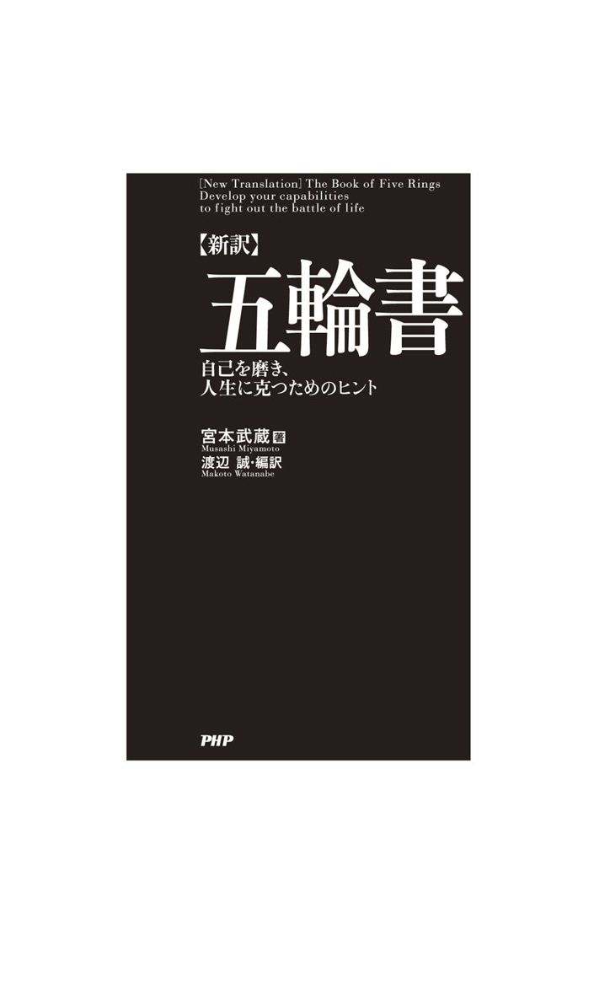
まえがき
武蔵というサムライが、グローバル化した現代にあっても、あいかわらず「代表的日本人」の一人であることは、好き嫌いは別として認めぬわけにはいかないのである。
その武蔵の著と伝えられるのが、『 五 輪 書 』だ。それは真剣勝負という 冷 厳 な世界に身を投じた武蔵が、おのれの独創に 成 る剣、 二 天 一 流 という 兵 法 の 術 理 を、つつみかくすことなく書きあらわした書である。
今からおよそ三百七十年前の 寛 永 二十年（一六四三）の晩秋、九州・ 肥 後 の 金 峰 山 の 麓 の 霊 巌 洞 なる洞窟で、彼は 老 残 の病体に 鞭 打 つかのように、この 畢 生 の大作の筆を 執 っている。
一対一の戦いに勝つ道が、合戦における 虚 実 （かけひき）や 用 兵 の法に通じる、という確固とした信念のもとに書かれたこの書は、もとより兵法の伝書ではあるが、優れた古典の常として、多様な読まれ方をして今日に至っている。この書に学ぶところを熱く語ってきた人びとは、実業家、アスリート、 棋 士 など、 多 岐 にわたっているのだが、中には、『五輪書』の教えを引いて 作 歌 の方法を説いた歌人・ 斎 藤 茂 吉 のように、意外な分野の 耽 読 者 も含まれている。
本書は第一に、原文を載せるとともに、 平 明 な新訳を試みた書である。第二に、現代の仕事、人生において自己啓発に 資 する教えを学びとろうとした書でもある。原文、訳文に対応した一一五項の解説がそれだが、そういう二重のねらいを託した本書の条々が、「危機の時代」を組織人として生き抜くためのヒントとなれば幸いである。
刊行にあたっては、ＰＨＰ研究所学芸出版部の櫻田真由美さん、ホソヤプランニングの細谷敏雄さんに、大変お世話になりました。心から厚くお礼申し上げます。
二〇一〇年二月の好日 編 訳 者
二 「小さいこと」を鍛錬して積み重ねる
三 自分の「座標軸」を失わずに視野を広げる
四 まず「好きであること」が根本である
五 プロフェッショナルであることを強く自覚する
六 運命を切り開く「稽古」を積んでおく
七 視野は異質の人と交わる中で広がる
八 実力のともなわないパフォーマンスの危うさを知る
九 あたりまえのことをあたりまえに実行する
十 兵法は組織の戦略、個人の人間関係術に活かすことができる
十一 情報も人材も必ず使いみちがある
十二 モチベーションを有効に引き出す
十三 部下は端の仕事も完璧にこなせるようにしておく
十四 基礎を固めたうえに創意工夫が生まれる
十五 何があっても勝つ決意を自己に表明する
十六 剣の道の術理は組織を活かす知恵に通ず
十七 他を知ることは自己の道を正すことにもつながる
十八 「空」こそは勝負に勝つためのハイレベルの教えである
十九 自分の「道具」をすべて役立てる
二十 創造的な仕事は「こだわり」をなくした先に生まれる
二十一 長所と短所は一体であることに眼を開く
二十二 まず一人のライバルに勝つことから始める
二十三 他人の仕事の尊厳を謙虚に受け容れる
二十四 日頃から「道具」をアタマの中に整理しておく
二十五 見てくれよりも中味を充実させる
二十六 何事にも「知足」のこころを守る
二十七 人生の勝負も「拍子」の理を知ることにきわまる
二十八 「背く拍子」で主導権を握る
二十九 まじめな人間が最後は勝利をつかむ
三十 生きることは「勝つ」ことである
三十二 しなやかな「ふだんぎ」の心に自分の心を調える
三十三 心と体のかねあいを工夫する
三十四 現世での勝利は「知恵」の磨き方にかかっている
三十五 姿勢によって心を調える
三十六 本質を洞察する「観」の目付を養う
三十七 「居付く」ことのない人間は成功しやすい
三十八 「常の歩み」を乱さない
三十九 手段を「目的」としてはならない
四十 世界を成り立たせている自然の本性に背かない
四十一 真剣にカリキュラムの習得に励む
四十二 目的達成への集中力を保持する
四十三 「一拍子」で自分のペースに引き込む
四十四 時間差をつけて対応する
四十五 無心の勝利は努力の積み重ねから生まれる
四十六 大きな心に転じて問題を打開する
四十七 「当たって砕ける」の心で問題に対処する
四十八 人付き合いには瞬発力が求められる
四十九 相手の方策や理論を最初に無効にする
五十 態度を示した後に言葉で意志を伝達する
五十一 「当たる」を期待せずに「打つ」ことに集中する
五十二 自分の方略を無にして相手の心をつかむ
五十三 濃密でオープンな交渉術も必要な場合がある
五十四 どのような相手にも対等に渡り合う
五十五 「ねばる」と「もつれる」を混同しない
五十六 「体当たり」で難物の心をつかむ
五十七 「相討ち」の気迫で意見を相手に通す
五十八 「色」を見せて意のままに相手を働かせる
五十九 心臓を突く気迫で局面を打開する
六十 「守り」と「攻め」とを同時に行う
六十一 相手の意見を軽くかわして 噛 み合う状況をつくる
六十二 追い崩してノルマを達成する
六十三 取って置きの手段は秘しておく
六十四 今日は昨日の自分に勝つ
六十六 テーマを設けて日々おのれを磨く
六十七 相手を不利な条件のもとに導く
六十八 攻勢の中にも相手に退路を開いておく
六十九 商談には「後の先」が効果的である
七十 相気をはずして主導権を握る
七十一 相手に有効に働くことを押さえ込む
七十二 独力で「難所」を切り抜ける
七十三 事実を掛け値なしに受け取って戦略を立てる
七十四 心で踏みつけて先手必勝を期す
七十五 相手の「崩れ」に乗じて攻勢に出る
七十六 相手の心理状態になって自分を見る
七十七 心を転じて膠着状態を打開する
七十八 言葉のフェイントで下心を見破る
七十九 相手の意図の兆しを押さえて断念させる
八十 「模倣」の心理を利用して自分のペースに引き込む
八十一 正念場では相手を怒らせねばならぬ場合もある
八十二 ハッタリで相手を萎縮させるのも時に必要である
八十三 仕事と「塗れる」ことで難仕事を達成する
八十四 「角にさわる」ことでノルマを達成する
八十五 相手を狼狽させて主導権を握る
八十六 発声に変化をつけて自己アピールする
八十七 大仕事には不退転の姿勢に徹する
八十八 中途半端な戦いに終わらせない
八十九 マンネリズムはコミュニケーションにマイナスである
九十 がむしゃらさが真の勝ちには求められる
九十一 「新たになる」ことで創造的に生きる
九十二 大胆さと細心さとをコントロールする
九十三 目上の人を心の奥底では「兵卒」と思う
九十四 「無一物」の心から新しいアプローチを発見する
九十五 「迷わない」ことほどむずかしいことはない
九十六 危機の時代には本物志向が高まる
九十八 特定のメソッドに固着するのは危うい
九十九 組織の規模に頼る心は脆い
百 無理な力を使うと不利を招きかねない
百一 「自然体」が危機管理にも大切である
百二 小回りの利く手段で物事を処理しない
百三 「小技」は生き残りに通用しない
百四 マニュアルにあるスキルを詰め込むのは要注意である
百五 現実生活はデジタルな対応では間に合わない
百六 「守り」の体制はいつか綻ぶものと知る
百七 迷いを招く「目付」は要注意である
百八 大局観を忘失すると組織力は低下する
百九 「常の足」で仕事をするのがプロフェッショナルの姿勢である
百十 微成長に甘んじている組織は脱落する
百十一 スピードを求め過ぎると「忙殺」されかねない
百十二 スピードよりも先手を取ることを心がける
百十三 「実戦」に応じた教育法の必要を見直す
百十四 自然の摂理にはずれた道は敗北へと通じる
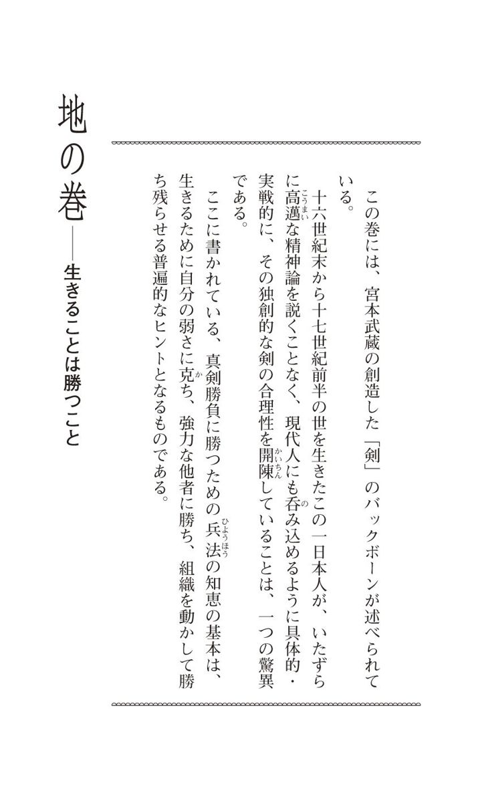
一 現代の「真剣勝負」もイニシアチブのとり方にかかっている
兵 法 の道、 二 天 一 流 と号し、 数 年 鍛錬の事、 初 て 書 物 に書き 顕 はさんと思ふ。時に 寛 永 二十年 十月 上旬の頃、九州 肥 後 の地 巌 殿 山 に上り、天を拝し、 観 音 を 礼 し、仏前に 向 ひ、 生 国 播 磨 の武士 新 免 武蔵 藤 原 玄 信 、年つもりて六十。 我 、 若 年 のむかしより、兵法の道に心をかけ、十三歳にして 初 て勝負を 為 す。その相手、 新 当 流 の 有馬 喜 兵 衛 といふ兵法者に 打 勝 ち、十六歳にして 但 馬 国秋山といふ 強 力 の兵法者に打ち勝ち、廿一歳にして 都 に上り、天下の兵法者に 逢ひて、数度の勝負を決すといへども、勝利を得ずといふことなし。その後 国 々 所 々 に至り、諸流の兵法者に 行 逢 ひ、六十余度 迄 勝負すといへども、一度もその 利 を失はず。その 程 、年十三より廿八、九までのことなり。私の 興 した兵法を、二天一流という。その剣の道について、長年の鍛錬の成果を、初めて筆にしようと思う。時に寛永二十年（一六四三年・通説によれば武蔵六十歳）の十月上旬（晩秋）、ここは九州の 肥 後 の 岩 戸 山 （熊本県熊本市の 金 峰 山 の西麓・「巌殿山」は誤り）。いま、天を拝し、観音を礼拝し、仏前に向かっている私こと、 播 磨 （兵庫県南西部の旧国名）の生まれの武士、新免武蔵藤原玄信は、六十歳を数える。この私は若い時分から兵法の道に志を立てて、初めて勝負を体験したのは、十三歳のとき、相手は新当流（開祖は塚原 卜 伝 ）を 遣 う有馬喜兵衛といったが、この者に勝ったのである。それから、十六歳のとき、 但馬 （兵庫県北部）において秋山 某 という、力強き兵法者に打ち勝ち、二十一歳で京に上り、天下に名の知られた兵法者（吉岡一門？）に出合い、数度にわたって決闘したが、すべて勝利をおさめた。その後、諸国を歴遊して、いろいろな 流 儀 の兵法者に出合っては、六十余度にわたって勝負をしてはみたが、一度たりとも敗れたことがなかった。十三歳に始まり、それが二十八、九歳までの間のことである。
ふだん私たちが使っている言葉には、日本刀にちなむ語が少なくない。
──恋の「 鞘 当 て」。「 鎬 を 削 る」両者。「 伝 家 の 宝 刀 」を抜く（とっておきの手段を講じる意）。とうとう「 切 羽 詰 まる」。とても「太刀打ち」できない。「 付 焼 刃 」で対応する。「 単 刀 直 入 」にもの申す。社長の「 懐 刀 」。「抜き打ち」の検査。「 押 取 刀 」で駆けつける。
それから、「真剣勝負」という言葉もある。
真剣勝負とは、本物の刀剣（ 本 身 ）を交えて勝負を決することだ。その結果、たいていは敗者が死に、勝者は生き残る。だから、生死を分かつ勝負ということになる。
真剣勝負という冷厳な、極限の状況について、自然科学者の一見識を紹介すると、
「それは、敵対する両者を包含する複雑な場所（予測不可能なことが起きる場所）の中で二人が真剣をもって演じる『即興劇』である（後略）」
と、『生命知としての場の論理──柳生新陰流に見る共創の理』（清水博著・中公新書）にある。生命科学の立場からのこの真剣勝負論を借りると、二十九歳のころ（佐々木小次郎との「 巌 流 島 の決闘」のあったころ）まで、六十余度の勝負にことごとく打ち勝った宮本武蔵という 漢 は、生か死かのこの「即興劇」における、古今随一の「千両役者」と評してよかろう。
現代の様々な局面にも、直接には生死にはつながらないとしても、「真剣勝負」は日々刻々、展開されるものである。その中で敵（他者）に勝ち、我に勝ち、人は組織に生き残っていくことが求められるのである。これまた 筋 書 きのないドラマというべきである。
そうした現代の真剣勝負においても、いかにイニシアチブをとるかが勝敗に直結することになる。武蔵という、 生 粋 の真剣勝負師の鍛錬の成果を集大成した『五輪書』は、その点で 示 唆 に 富 む古典である。
二 「小さいこと」を鍛錬して積み重ねる
三十 を越えて 跡 をおもひ見るに、兵法 至 極 して勝つにはあらず、おのづから道の器用ありて、 天 理 を離れざるが 故 か、又は他流の兵法、不足なる所にや。その後 猶 も深き道理を得んと、 朝 鍛 夕 錬 して見れば、おのづから兵法の道にあふこと、我五十歳のころなり。それより 以来 は、 尋 ね入るべき道なくして、 光 陰 をおくる。私は三十歳を過ぎて、こんなことを思ったのである。──自分が過去の勝負に全勝してきたのは、兵法を 極 めていたからではなくて、この道の才質が生まれつき 具 わっていて、それが自然に理にかなっていたからか、それとも 相 対 した他流の兵法に、至らぬ点があったからではないか、と。──そこで、なおも剣の奥深い理を 会 得 しようと、朝夕に鍛錬を続けてみたところ、わが自然の働きが兵法の真髄に 当 を得ることになったのである。それが五十歳のころで、それからの私は 殊 更 に探求すべき事もなく、歳月を送ってきた。
「小さいことを重ねることが、とんでもないところに行くただ一つの道だと感じている」
九年連続の二〇〇安打という大リーグ記録を立てた、イチロー選手の言葉である（二〇〇九年九月十五日付・朝日新聞）。
三十 路 に入り、訳文にあるように深く自省するところのあった武蔵は、おのれの剣の道に進化を求めて「 朝 鍛 夕 錬 」したのだが、それは現実の敵を相手としたそれまでの修行とは違い、 独 修 独 行 だったものと思われる。
彼はその中で、「小さいこと」の大事を、身をもって知り、その修練に励んだに相違ない。この「地の巻」の末尾のほうに、自分の兵法を学ぼうとする者に、九カ条の鍛錬法を示しているが、その中に、
──目に見えぬ所をさとつて 知 事
──わづかなる事にも気を 付 る事
と述べているのは、イチロー語録にある右の言葉に通じる 垂 訓 である。
三 自分の「座標軸」を失わずに視野を広げる
兵法の利にまかせて、 諸 芸 、 諸 能 の道となせば、万事に 於 て、我に師匠なし。今この書を作るといへども、 仏 法 、 儒 道 の古語をもからず、軍記、軍法の古きことをも用ゐず、この一流の 見 立 、 実 の心をあらはすこと、 天 道 と 観 世 音 とを鏡として、十月十日の夜、 寅 の一点に、筆を 把 りて 書 き 初 るものなり。私は兵法の真理を根本として、様々な芸術、芸道に触れたのであって、何事においても、師匠と仰ぐ人を持たない。私は今、この書を作る上で、仏教や儒教の言葉を借りることなく、また、軍記や軍法に見る故事を引くことなく、自分の言葉でわが二天一流の考え、真実の精神を、表現しようとしている。鏡とするのは宇宙の道理と観音のみ、十月十日の夜、午前四時三十分のこの時、筆を執って書き始めるものである。
「マルチ人間」と見られる人が、マスメディアに紹介されることの多いこのごろである。一つの職業、肩書きにとらわれず、 八 面 六 臂 の活躍をしている人たちで、その元祖は「超マルチタレント」と称された故・青島幸男氏（一九三二～二〇〇六）ではなかったか。同氏は作詞家・タレント・俳優・映画監督・放送作家・小説家と、幾つもの肩書きを持ち、そして、後に参議院議員から東京都知事になったことはよく知られている。
宮本武蔵も、語り伝えられる話からは、一個のマルチ人間と見られがちのようだ。
養子の 宮 本 伊 織 （ 豊 前 ・ 小 倉 藩の家老）が建てた武蔵 顕 彰 碑 には、武蔵が 六 芸 （ここでは多種の芸といった意味）に達していたことが述べられているが、その芸域は絵画と書、彫刻、工芸、詩歌、俳句にまでわたっている。
中でも後世の人びとが 嘆 賞してやまないのは、その画業であり、彼の作と伝えられる水墨画の数々が、今なお美術史家の高い評価を得ている。
先に触れた九カ条の鍛錬法の中に、
──諸芸にさわる 所
とあるのは、兵法だけではなく、様々な芸術、芸道に触れて視野を広くすることが、 畢 竟 、兵法を会得する道につながることを説いた言葉である。
武蔵は自らそれを実践したということになるのだが、いずれの芸においても、彼には師匠といえる人はいなかった。「師」としたのは、自分の兵法の理であった。
武蔵は生涯、兵法者であることに強い 自 恃 の念を持ちつづけた孤高の人間だ。剣の道のプロフェッショナルであるという 矜 持 を捨てきれない、その意味ではマルチ人間の対極の生き方をつらぬいた、いたって 無 骨 な男だった。
彼は「諸芸」の 粋 を、兵法の探求のために吸収することに関心を持ったに過ぎなかったのである。
これは天才に生まれついたのではない、世の大半の人間が、それぞれの道を 究 めようとする場合の学び方の一つを示している。
さらに、凡人は自分の「座標軸」──自分にはこれしかない、という一本の太い骨を確固として保持しつつ、それとのつながり、関わりを大事にしながら、視野を広げる努力の大切さを、ここに読み取ることもできよう（注記・以上は『五輪書』の序文とみなされている）。
四 まず「好きであること」が根本である
夫 兵法と 云 事、武家の法也。 将 たる者は、とりわき 此 法 を行なひ、 卒 たる者も、 此 道 を知るべき事なり。 今 世の中に、兵法の道、 慥 に 弁 まへたるといふ武士なし。 先 、道を 顕 して 有 は、仏法として人をたすくる道、又、儒道として 文 の道を 糺 し、医者といひて諸病を 治 する道、 或 は 歌 道 者 とて和歌の道ををしへ、或は 数寄 者 、 弓 法 者 、 其 外 諸芸、諸能までも思ひ 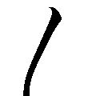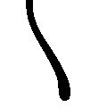 に稽古し、こころ にすくものなり。兵法の道にすく人まれ也。 先 、武士は 文 武 二 道 と云ひて、二ツの道を 嗜 む事、 是 道也。 縦 此 道 、ぶきようなり 共 、武士たるものは、おのれ が 分 際 程は、兵の道をばつとむべき事也。兵法というものは、武家ならではの法である。将といわれるほどの者は、 殊 にこの法を 行 じ、兵卒もこの道を心得ておくべきだ。このごろの世の中には、兵法の道をきちんと 弁 えている武士がいない。道といっても、様々だ。人びとを救済する仏法、また学問を探究する儒道、諸病を治す医者の道、あるいは和歌を教える歌道者の道、あるいは茶人、弓法者、そのほか諸芸、諸能あり、それぞれの道を人は心から好んで稽古するものである。が、兵法の道が好きな人は、 稀 にしかいない。そもそも武士は文武両道といって、二つの道をたしなむのが根本とされる。たとえ不器用であっても、個々の身分相応に兵法の道に励むべきなのだ。
囲碁の名誉 棋 聖 、故・藤沢 秀 行 さん（二〇〇九年五月八日死去・八十三歳）は酒を好み、競輪などのギャンブルで多額の借金をかかえるなど、その 破 天 荒 な人となりから、「最後の無頼派 棋 士 」と呼ばれたものだが、「碁打ち」（氏が好んで用いた言葉）としての精進の、ひととおりのものでなかったことが、多くのエピソードとともに伝えられている。
その秀行（自他ともにシュウコウと称した）さんに、『勝負と芸』（岩波新書）という著書があって、こんなことが書かれている。
「棋士になって蔵を建てたという話も聞かないから、みなさんが想像する以上に一般棋士の生活は楽ではない。厳しい修業を経て、碁というすばらしい文化に取り組んでいるのだから、経済的にもっと報われていいと思うが、私たちはあまりお金のことはいわない。碁打ちは何よりも碁が好きなのである。こんな例はほかの職業では珍しいのではないか」
そして秀行さんは「私も碁が好きなことでは誰にも負けない」と書いている。
「好きこそ物の上手なれ」というと、ありふれた教訓のようだが、好きであればこそ一つのことがつづけられるのだし、それが力となって上達するものである。
兵法という、生死を 明 らめる厳しい道を好む人はあまりいない。
が、この道を究めようとするならば、まず「好く」ことが大切だ、と武蔵はいう。
心から好くことのできない仕事では、逆にいうと、いくら苦闘しても上達には限界がある、ということになる。
五 プロフェッショナルであることを強く自覚する
大 形 武士の思ふ心をはかるに、武士は 只 死ぬると云ふ道を 嗜 む事を覚ゆる程の 儀 也。死する道に 於 ては、武士ばかりに限らず、 出 家 にても、女にても、百姓以下に至るまで、義理を知り、恥を思ひ、死するべきを思ひきる事は、 其 差 別 なきものなり。武士の兵法をおこなふ道は、何事に於ても人にすぐるゝところを 本 とし、 或 は 一 身 の 切 合 に 勝 、或は数人の 戦 に勝、主君の為、 我 身 の為、名をあげ身をたてんと思ふ。 是 、兵法の徳をもつてなり。大体、武士としての心得を推量するところ、武士道はひたすら死ぬ道をたしなむことと解しているのではないか。が、死ぬのは、武士に限られた道ではない。坊さんだって、女だって、百姓、職人、商人だって、義理のために、恥のために死ぬものであるし、その点では区別がないのである。武士と生まれたからには、何事においても他者より 勝 れようと志し、兵法を修行して、一対一の切り合いに勝ち、あるいは大勢の敵との戦いに勝ち、主君のために、自分自身のために名を上げ、身を立てるものである。ここに兵法の徳があるのだ。
ハラキリ──切腹という、自らを死に至らしめる行為は、日本のサムライ固有の「名誉の刑」とされているが、実はそうでもない。
『中村元選集〈第 3 巻〉日本人の思惟方法』（中村元著・春秋社）によると、中世の南インド、スリランカでも行われたし、現に南インドのハイダラバードの城門の博物館には、武士が責任をとって、文字通り腹を切っている図を彫刻した 彰 徳 碑 が残されているという。
にもかかわらず、その数の多さから、また、その作法が定着していたことから、日本の武士のこの慣習は、世界に周知されている。
だが、何かというと武士が腹を切る傾向に、武蔵は疑問を呈す。
死を選択する前に、武士の 一 分 （面目）を立てる道を求めるべきなのであり、そのためには武士のみがたしなむ道、兵法というものを修めて戦わねばならない、と彼は説くのである。
現代人はプロ意識、広義の「職人気質」が 稀 薄 になったことが、しばしば指摘される。自分の仕事に誇りを持ち、そのプロフェッショナルであることを強く自覚することの尊さを教える条として、これを受け取りたいものだ。
六 運命を切り開く「稽古」を積んでおく
又 世の中に、兵法の道をならひても、 実 の時の役にはたつまじきと思ふ心あるべし。 其 儀 に於ては、 何時 にても、役に 立 やうに稽古し、万事に至り、役に立 様 に 教 る事、 是 兵法の 実 の道也。また、兵法の道を修練しても実戦には役立つまい、と思う傾向が世にある。そうならぬためには、どのような状況にあっても役に立つように稽古すること、万事にわたって現実の用に立つように教えること。ここに、兵法の真実がある。
歌人の 斎 藤 茂 吉 は、有名な「宮本武蔵嫌い」であった。
かの「巌流島の決闘」で、佐々木小次郎に対して武蔵が様々に心理戦術を 弄 したことを、茂吉はフェアでないと断じて、 忌 み嫌うようになったのである。
そういう茂吉が、歌道修業の心得を語るのに、しばしば『五輪書』中の言葉を引いているのだから、面白い。
ここに掲げた教えもその一つ。茂吉は『短歌初学問』という歌論にこれを引いて、中国人の作詩道にいう「 平 生 切 磋 」という言葉に重ねて、作歌の心がけの一つを述べている。
およそ武道の稽古は、いつ実戦の場に 臨 んでも勝利をおさめるように稽古せねばならぬが、作歌も 然 り。いかに切実な感動、純な歌ごころが 湧 いても、それそのものは短歌ではない。短歌に作るには、常に表現力を養っておかねばならない。作歌においても、だから「何時にても、役に立つ稽古」が求められるのだ、と茂吉はいうのである。
これは仕事人生の「修業」にもいえることであろう。
成功するためのチャンスは、少なくとも生涯に三度はおとずれるものだという。そのチャンスをつかむか否かは、真剣勝負に勝つか負けるかのようなものではないか。
運命を切り開くのに役立つ「稽古」を積むことが、大切とされるゆえんである。
七 視野は異質の人と交わる中で広がる
一 兵法の道と 云 事 漢 土 、 和 朝 迄 も、 此 道 を行なふ者を、兵法の達者と 云 伝 へたり。武士として此法を学ばずと 云 事 有 べからず。 近 代 、兵法者と 云 て世を渡る者、是は剣術 一 通 の事也。 常 陸 国 かしま、かんとりの 社 人 共 、 明 神 の伝へとして 流 々 をたてゝ、 国 々 を 廻 り、人に伝ゆる事、近き頃の儀也。 古 しへより、 十 能 、 七 芸 と 有 うちに、 利 方 と 云 て、芸にわたると云へ 共 、利方と 云 出 すより、剣術 一 通 にかぎるべからず。剣術一ぺんの利までにては、剣術も知りがたし。 勿 論 、兵の法には 叶 べからず。兵法の道というもの──。 中国でも、日本でも、この道に生きる者を、兵法の達者といい伝えている。武士ならば、この法を学ばぬということはあってはならないのである。が、近頃、兵法者と称して世を渡る者のそれは、うわべばかりの剣術に過ぎない。 常陸 国・ 鹿 島 （ 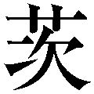城県鹿嶋市の鹿島神宮）や、 下総 国・ 香 取 （千葉県香取市の香取神宮）の神官どもが、神から伝えられた剣術である、といって流儀を立てて、諸国を 廻 り、人びとに広めている。古来、多くの芸能、芸道があり、人に勝つ法もその一つに含まれてはいるが、 実 利 ある法であるためには、剣術だけの域にとどまってはならないのである。剣術ばかりの利に立っていては、剣術そのものを会得できぬし、もちろん、兵法の道に 適 うことはないであろう。
3 項の教えと同じく、視野を広げることの大切さが説かれている。
自分の専門分野以外のことに無関心である人は、創造的な仕事をすることができない、とは実業の世界だけではなく、学問や芸術の世界でもよくいわれることだ。
自分の専門とは一見関わりのなさそうなことでも、 地 下 茎 のようなものでそれぞれがつながっていることが多いのである。
だから、「諸芸にさわる」こと（ 3 項参照）、他分野のことにも関心を持つこと、つまりは視野を広げることが、成果を上げるのに、かえって近道になる場合が多々あるのだ。
こうはいっても「諸芸にさわる」には、カネと時間が 要 る。
だが、「そんなゆとりはない」とあきらめないこと。他の分野の人、自分とは異質の人と交わる中で視野を広げる法もある。
八 実力のともなわないパフォーマンスの危うさを知る
世の中を見るに、諸芸をうり物にしたて、 我 身 をうり物のやうに思ひ、諸道具につけても、うり物にこしらゆる心、 花 実 の二ツにして、花よりも実のすくなき 所 也。とりわき 此 兵法の道に、色をかざり、花をさかせて、術をてらひ、 或 は一道場、二道場など 云 て、此道を教へ、此道を習ひて、利を得んと思ふ事、 誰 か云ふ、なまへいはう 大 疵 のもと。まこと 成 べし。世の中の芸の世界を見るに、自分の芸を売り物につくりあげて、自身も商売人になりきって、所持する道具も 美 々 しく飾っている者がいる。 花 と 実 二つを比べれば、これは花よりも実が少ないのである。とりわけ兵法の道において、趣向を 凝 らし、はでに演出し、技術をひけらかし、道場などと称し、この道をそこで教える者があり、また、習って、自分のためにしようとする者もある。誰かの言葉に「 生 兵 法 は 大 疵 の 基 」（少しばかりその道の心得のある者は、かえって大失敗をするという意）とあるが、まさにそのとおりである。
「 武 者 修 行 」と称して、兵法者が 行 雲 流 水 の禅の修行者のごとく諸国を 廻 ることが珍しくなくなったのは、戦国時代も末期になってからのことだ。
経済の発展にともなって国と国との交易が盛んになり、それによって交通、具体的には道路が発達したことも、彼らの 廻 国 巡 遊 に 便 宜 をもたらしたものと思われる。
武者修行の動機や目的は様々だが、最も多かったのは、仕官運動である。
殊に関ヶ原の役（慶長五年〈一六〇〇〉）における戦後処理で、 外 様 大名十八 家 が 改 易 になると、浪人で諸国はあふれかえった。そして彼らは、今でいう「就活」のために、 具 足 一 領 、槍一筋、乗馬一頭に従者一人か二人を常に用意して、「 身 上 をかせぐ」（仕官する）ために各地を 徘 徊 したのである。
そういう就職活動には、兵法の技量が物をいったのはいうまでもないが、数多い兵法者の中にあって注目されるには、自分の兵法の強さが 尋 常 ならざることを様々に演出する必要がある。
長 大 な太刀や、特種な武器を用いるのを表看板に、「これは」と思う城下で「天下一○○○」といった 高 札 を掲げて、他流の兵法者を挑発して試合に及ぶのは、その中でも、人目をひくパフォーマンスの代表的なものであった。
実力をともなうパフォーマンスならばともかく、ひたすらウケをねらうだけのこのような風潮を、武蔵は冷笑とともに、その危険性を指摘するのだ。
「生兵法は大疵の基」は、自己の危機管理の上で、現代人も 肝 に 銘 じておくべきことだ。
九 あたりまえのことをあたりまえに実行する
凡 、人の世を渡る事、士農工商とて四ツの道也。一ツには農の道。 農 人 は色々の道具を 設 け、四季 転 変 の心得いとまなくして、 春 秋 を送る事、 是 農の道也。二ツにはあきないの道。酒を作るものは、 夫 々 の道具をもとめ、其 善 悪 の利を得て、 渡 世 をおくる。いづれもあきないの道、 其 身 々 々 のかせぎ、 其 利 を 以 て世を渡る也。 是 商の道。三ツには 士 の道。武士に 於 ては、さま 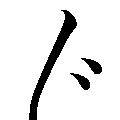 の 兵 具 をこしらへ、兵具しな の徳を 弁 へたらんこそ、武士の道なるべけれ。兵具をもたしなまず、 其 具 々 々 の利をも 覚 ざる事、武家は少々たしなみのあさきもの 歟 。四ツには工の道。大工の道に於ては、種々様々の道具をたくみこしらへ、 其 具 々 々 を 能 つかひ覚え、すみがねを以て 其 さしづをたゞし、いとまもなくそのわざをして世を渡る。 是 士農工商、四ツの道也。およそ人としての 渡 世 には、士農工商の四つの道がある。その一つ、「農」の道とは、農人がいろいろな農具を準備し、四季の変化をいつも心がけて、年月を送る道。第二、「商」の道は、たとえば造り酒屋ならば、酒を造るための道具を求め、その良し悪しから利益を生み出して世を渡る。そのように商の道は、いずれも利益を 稼 ぎ出す渡世だ。第三、「士」の道にも、これはいえる。武士は用途にしたがって様々な兵具を製し、それぞれの特長を弁えておくのが当然であって、兵具の知識もなく、それぞれの利点を呑み込んでいないような武家は、いささか常の心がけに欠けるものといえまいか。さらには「工」の道というものがある。大工は種々様々な道具を作り出して、各具の使い方を十分に覚えたうえで、 規 矩 術 （ 指 矩 を使って木材に工作用の 墨 付 けをする技術）をもって、常に正しい設計をするのを渡世とする。以上が士農工商という四つの道である。
「士農工商」という用語を、すでに小学校の教科書で教えられる私たちからすると、ここに述べられていることは、格別注目するに 値 しないことのようだが、江戸時代初期の三代将軍・ 家 光 の 治 世 には、この観念はまだ 稀 薄 であった。
そのころ、鈴木 正 三 という特異な禅僧がいて、『 四 民 日 用 』という書を著し、士農工商それぞれの職業倫理に触れているが、これが 濫 觴 ではなかろうか（のちにこれを集大成した『 万 民 徳 用 』は、武蔵没後の慶安五年〈一六五二〉の成立）。だから、右のように武蔵がこのことに言及したのは、実は特筆すべきことだと考える。
ところで、武蔵が死の一週間前にしたためた『 独 行 道 』という二十一箇条から成る遺書のような文章がある。
自身の生涯に対する 自 省 自 戒 のこの書の冒頭に、
── 世 々 の道をそむく事なし
とある。士農工商、人はそれぞれの 渡 世 を成り立たせている根本に 違 背 しないようにしたいものだ、というのである。
ビジネスマンの世界でいえば、トップはトップとしての道、ミドルはミドルとしての道、部下は部下としての道があり、これを踏みはずしては、組織という「社会」が乱れることになる。
あたりまえのことのようだが、あたりまえのことを、あたりまえに実行するのは容易ではないのだ。
十 兵法は組織の戦略、個人の人間関係術に活かすことができる
兵法を大工の道にたとへて 云 あらはす也。大工にたとゆる事、家といふ事につけての 儀 也。 公 家 、 武 家 、 四 家 、 其 家 のやぶれ、家のつづくと 云 事、 其 流 、 其 風 、其家などと云へば、家と 云 より、大工の道にたとへたり。大工は大きにたくむと 書 なれば、兵法の道、大きなるたくみによつて、大工に云なぞらへて 書 顕 す也。兵の法を学ばんと思はゞ、 此 書 を思案して、師ははり、弟子は糸と 成 て、たえず稽古有るべき事也。私は兵法の道を大工の道にたとえて述べようと思う。「 公 家 」「武家」「 四 家 」（たとえば「藤原氏四家」）「家の滅亡」「家の存続」といった言葉もあり、「その家」という言葉も、流儀・気風の意をこめて用いられるから、家を建てる大工の道に 相 通 じる兵法をたとえるのである。「大工」を字解きすると「大いに 工 む」となる。兵法も大いに工むことに変わりはないから、大工さんのことを引いて、兵法について述べようと思うのである。この道を学ぶ志のある者は、この書に私が述べることを 玩 味 してもらいたい。そして、師弟の関係が「針と糸」のようなものである、と心づもりして、師より伝授された 習 訓 にしたがって、不断に稽古を積み上げてもらいたい。
「兵法」という言葉を「へいほう」と読もうと「ひょうほう」と読もうと、それには両様の意味がある。
一つは集団（軍団）対集団の戦いにおける 術 理 、すなわち軍法、兵学の意。一つは個人対個人の戦いにおける術理、つまり剣術を中心とする武術の意である。
『五輪書』は、前者を主として「 火 の巻」に、後者を主に「 水 の巻」に論じているが、いずれにも「大いに 工 む」ことが求められるのだ。
ゆえに、「火の巻」は、現代における組織の戦略、「水の巻」は人間関係術に資する内容を有しているのである。
そこで、武蔵は以下、大工の道にたとえて兵法者の道を説くのだが、ここで「師は針、弟子は糸」といっているのは、師弟のあり方のみならず、職場の教育のあり方を示唆している点で重要なことである。
十一 情報も人材も必ず使いみちがある
一 兵法の道、大工にたとへたる事 大将は大工の 統 領 として、天下のかねを 弁 へ、 其 国 のかねを 糺 し、 其 家 のかねを知る事、統領の道也。大工の統領は 堂 塔 伽 藍 のすみがねを覚え、きうでんろうかくのさしづを知り、人々をつかひ、家々を 取 立 る事、大工の統領も武家の統領も同じ事也。家を 立 るに 木 配 りをする事、 直 にして 節 もなく、見つきのよきを 表 の柱とし、少し節有り 共 、 直 につよきをうちの柱とし、たとひかよはくとも、節なき木の見ざまよきをば、 敷 居 、 鴨 居 、 戸 障 子 と、 夫 々 に 遣 ひ、節有り 共 、ゆがみたり共、強き木をば、 其 家 の強み を 見 分 て、 能 吟味して遣ふに 於 ては、其家久しくくづれがたし。又、材木のうちにしても、節多く、ゆがみて弱きをば、あししろ 共 なし、 後 には 薪 共 なすべき也。統領に於て大工を遣ふ事、 其 上 中 下 を知り、 或 はとこまわり、或は戸障子、或は敷居、鴨居、天井以下、 夫 々 に遣ひて、あしきは 根 太 をはらせ、 猶 悪 きにはくさびをけづらせ、人を見分て遣へば、其はか 行 て、 手 際 よきもの也。兵法の道を「大工」にたとえること── 。大将としての道は、大工の 棟 梁 のそれにひとしい。大工の棟梁のごとく、天下という「家」の規準をわきまえて、これを正しくするのが、大将という棟梁としてのあり方である。大工の棟梁は、寺院の建物の 規 矩 術 （ 9 項の訳文・参照）を呑み込み、 宮 殿 や 楼 閣 の設計を熟知したうえで、人を使って家を建てるものであり、この意味で、武家の大将と同じなのである。さて、家を建てるには、まず、 適 材 適 所 を念頭に置かねばならぬ。 表 の柱には、真っ直ぐで 節 のない、 見 目 良き材木に、少し節があっても真っ直ぐで強い材木は、中の柱に使い、敷居や 鴨 居 や戸、障子には、少しぐらい弱くとも、節がなく見ばえのよろしい材木をそれぞれに使い分ける。要所要所には、節があったり 歪 みがあったりしても、強度の高い材木を 吟 味 して用いる。こうすると、建てられた家は壊れにくいのである。また、歪みや節があるうえに弱い材木があるが、それは建築現場の 足 場 として使えるし、用済みになったら、燃料にすればよい。適材適所は、棟梁が使う大工にもあてはまる。棟梁は、大工の上手下手を見抜いたうえで、それに応じて床の間、戸障子、敷居、鴨居、天井など、それぞれ担当させる。技術がひどい者には、 床 板 の下に張る 横 木 を作らせ、さらに劣っている者には、 楔 を 削 らせることだ。このように大工という人材の上中下を見分けて、それぞれにふさわしい仕事をさせれば、効率的に手際よく仕事を進めることができることになる。
これは集団対集団の戦いを想定して、兵法の道から大将、すなわちリーダーによる情報の生かし方、人材の活用術を述べた教えとして受け取ることができる。
ここにいう材木は情報、大工とは人材と解して読み取ると、そのままリーダー学の普遍的な教訓になるのだ。
情報にも、人材にも、適材適所を得れば必ず使いみちがあるものだ。
リーダーに求められるのは、その質を見抜いて、最も適した所に配すことである。要するに、有効に使いこなす点に、リーダーの真価が問われるのである。
唐 突 だが、江戸時代後期の剣客として知られる 千 葉 周 作 は、こよなく宮本武蔵を 尊 崇 していた。周作は、とかく神秘のヴェールに 覆 われていた剣術を平明に、合理的に説き示した変革者であった。
彼が武蔵を尊ぶ理由の一つは、武蔵がここに見られるように、合理性・効率性を主張した点にあろう。これは『五輪書』全体に流れている精神である。
十二 モチベーションを有効に引き出す
果 敢 の 行 き、手際よきを云ふ所、 物 毎 をゆるさゞる事、たいゆうを 知 事、気の 上 中 下 を知る事、いさみを 付 ると云事、むたいを知るといふ事、 箇 様 の事 共 、 統 領 の 心 持 に 有 事也。兵法の 利 かくのごとし。そこで、効率を良くし、手際を良くするには、どうしたらよいか。物事の細部に注意を怠らないこと、大いなる「働き」を知っておくこと、勢いをつけること、限界を知っておくことである。このようなことは、武家も大工も、 棟 梁 の裁量にかかっている。これらは兵法の理に通じるものである。
能役者の 世阿弥 の著『 至 花 道 』に、「能に 体 用 のことを知るべし」という教えがある。「 体 」とは、たとえば花の本体、「 用 」は、香りのような花の作用、「働き」のことだ。
そして世阿弥は、「体をよくよく心得たらば、用もおのづからあるべし」、すなわち、本体がちゃんとしていれば、「働き」は自然にあらわれるものだ、といっている。
しかし、リーダーが効率を求めるための心得として武蔵がここに挙げているのは、人材から、いかにして「働き」、いうなればモチベーション（動機づけ）を有効に引き出すかということについての教えである。
物事の細部の大切さ、人間の潜在能力のはかり知れないものであること、激励することの効果、同時に、無理なことを知らしめること。これらを心得たリーダーのもとでは、組織人のモチベーションは高まるものなのである。
十三 部下は端の仕事も完璧にこなせるようにしておく
一 兵法の道 士 卒 たる者は大工にして、手づから其道具をとぎ、色々のせめ道具をこしらへ、大工の箱に 入 て 持 、統領 云 付 る所をうけ、柱がやうりやう 共 、てうのにてけづり、とこだなをも、かんなにてけづり、すかし物、ほり物をもして、よくかねを 糺 し、すみ めんどう 迄も 手 際 能 く 仕 立 る所、大工の法也。大工のわざ、手にかけて能くしおぼへ、すみがねを 能 知りて 後 は統領となる者也。大工のたしなみ、能きるゝ道具を 持 、 透 々 にとぐ事 肝 要 也。其道具をとつて、みづし、 書 棚 、 机 卓 、又はあんどん、まないた、鍋のふた 迄も達者にする所、大工の 専 なり。士卒たる者、このごとく也。 能 々 吟 味 有 べし。大工のたしなみ、ひずまざる事、とめをあはする事、かんなにて能くけづる事、すりみがかざる事、後にひすかざる事、肝要也。 此 道 を学ばんと思はゞ、 書 顕 す所のこと に心を 入 て、 能 吟味 有 べきもの也。兵法の道と士卒── 。武士と兵卒は、棟梁に使われる大工といっていい。大工は自分の道具の手入れをするし、 搾 木 や 楔 などの具を自分で作り、箱に入れて持ち歩き、棟梁の指図を受けて、 陽 棱 （柱の出っ張った部分）を 手斧 でそぎ落としたり、床や棚を 鉋 で削ったり、透かし彫りや浮き彫りをほどこす。また、 規 矩 を正しくして、 馬 道 （長廊下）の細部まで手際良く仕上げるのが、大工の指針というものである。そうした技法と、規矩術を身につければ、やがては棟梁になるものだ。そういう大工が心がけておくことは、まず、道具をよく 研 いで切れ味を良好にしておくことであり、これを使って 御 厨 子 棚 （書画などを置く両開き戸棚）、書棚、机や卓、さらには 行 燈 、 俎 板 、 鍋 蓋 といった小物までも、上手にこしらえるのが、大工にとって必要欠くべからざることだ。武士、兵卒とはこのようにあるべきことを、よくよく 諒 解 しておくべきである。そしてまた、物が 歪 まぬようにすること、ぴったりと合わせること、表面を 擦 り 磨 く必要がないほどに 鉋 で削ってすべすべにしておくこと、後ろへねじれたりしないようにすること。これは大工の心がけであるとともに、士卒の大切な心がけでもあるのだ。兵法の道を学ぼうとする者は、ここに書いたことを熟読熟考しなければならない。
武蔵が没して約百三十年後に成った『 二 天 記 』は、吉川英治の名作『宮本武蔵』が参考とした書の一つだが、「巌流島の決闘」に臨む直前、武蔵が泊まっていた船宿の主人に 所 望 して、 艪 をもらうことになっているのはこの『二天記』が出所である。
彼はそれを削って、敵の佐々木小次郎の長さ三尺余りの太刀に対する武器を、 急 遽 作ったものである。
この話の真偽のほどは定かでないけれど、艪を削って即席の武器を調達するくらいは朝飯前のことであるほど、武蔵が器用だったことは、その遺品に自作の細工物があることから見て、確かである。
木彫りの 鞍 （ 黒 漆 金 銅 牡 丹 文 の鞍）、 不 動 明 王 の木像、透かし彫りの 鐔 などが、武蔵の作として伝えられている。
このようなことから、彼は建築技術、すなわち大工の仕事にも関心を持ち、深く精通していたものと思われるのである。
先に大将としての心がけを大工の棟梁のそれにたとえた武蔵は、ここでは士卒としてのあり方を、大工職人の仕事のディテールを用いて、 暗 喩 している。
「道具」という言葉をスキル（技術）、「すみがね」をメソッド（方法）に置き換えると、ここに説かれていることは、組織における「部下」の心がけにそのまま通じるはずである。
部下たる者は、大仕事のみならず、 端 の仕事も 完 璧 にこなせるように、日頃からスキル、メソッドを磨きに磨いておくことだ。
十四 基礎を固めたうえに創意工夫が生まれる
一 此 兵法の書、五巻に 仕 立 る事 五ツの道を 分 ち、 一 まき一まきにして、 其 利 を知らしめんが 為 に、地水火風空として、五巻に 書 顕 す也。 地 の巻に 於 ては、兵法の道の 大 体 、 我 一流の 見 立 。剣術 一 通 にしては、まことの道を得がたし。 大 きなる所より、ちいさき所を知り、浅きより深きに至る。 直 なる道の 地 形 を 引 ならすによつて、 初 を地の巻と 名 付 也。この兵法の書は五巻に組み立てていること── 。この書は、兵法の理を五つに分けて、「地」「水」「火」「風」「空」の五巻にして書こうとするものである。「地の巻」では、兵法の道についての大体のことと、私の流儀の見方を書いている。前に述べたように、うわべばかりの剣術を修めても、真実の道を会得できるものではない。大局的な法から、細部にわたる法を知り、浅きから深きに到達するのが、兵法修行のまともな道筋である、そのためには、まずは 地 固 めが大切であるから、「地の巻」と名づけてこれを記すのである。
「五輪」とは、物質を構成している要素である「 五 大 」を、円輪に 擬 していう、密教の用語のことだ。
『五輪書』の文章を、『 歎異 抄 』（ 唯 円 編・ 親鸞 の真の教えを述べた書）と並ぶ「名文」と評したのは 司 馬 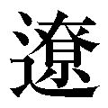 太 郎 だったが、文法を 逸 脱 したその文章には、一種、いい知れぬ妙味がある。そして、五部に分けて説くというその構成力も、近世初期の日本人には 稀 有 のものとされる。
アスリート（競技者）の世界、アーティストの世界、また、学者の世界においても、基礎を学び、確固としてこれを身につけることの大切さが強調されるが、ビジネスマンにもこのことはあてはまる。
創意工夫は、基礎固めのうえに生まれるものである。
十五 何があっても勝つ決意を自己に表明する
第二、 水 の巻。 水 を 本 として、心も水になる也。水は 方 円 のうつわものに 随 ひ、一滴となり、さう 海 となる。水に 碧 潭 の色有り。清き所を用ひて、一流の事を 此 巻 に 書 顕 す也。剣術 一 通 の 理 さだかに見分け、 一 人 の敵に自由に 勝 時 は、世界の人に 皆 勝 所 也。人に 勝 と 云 心 は千、万の敵にも同意也。将たる者の兵法、ちいさきを 大 きになす事、 尺 のかたを 以 て大仏をたつるに同じ。 箇 様 の儀、こまやかには 書 分 がたし。 一 を以て 万 を知る事、兵法の 利 也。一流の事、 此 水 の巻に 書 しるす也。第二巻は「水の巻」となる。 水の境地に至る意をこめてのことである。「水は方円の 器 に 随 う」（中国の戦国時代の思想家 荀 子 の著『荀子』の言葉）ものだという。水は四角の器の中では四角になるし、円形の器では円形になるかと思うと、一滴の水が、 青 海 原 ともなる。また、水はあおあおとした 淵 の色をつくる。水が 雑 り 気 なく清い、という意味から、私の流儀のことを「水の巻」として、ここに書くものである。うわべばかりの剣術の 是 非 を確かに見分けて、一人の敵に勝つことに自由を得ることは、世界のあらゆる人間に勝つことにひとしい。一人の敵も千人の敵も、同じことなのである。大将の用いる兵法は、一対一の戦いにおける兵法を、そのまま大きくすることにほかならない。小さな原型を作って、それをもとに大仏を 建 立 するのと同じことだ。このようなことは、手取り足取り詳細に書き尽くすことはできない。「一を以て万を知る」（『荀子』の言葉で、一部を見て全体を察すること）ようにしてもらいたいし、そのこと自体、兵法の理に通じるのである。わが二天一流の術理をこの「水の巻」に書く。
大 乗 経 典 の一つ『 華 厳 経 』の思想は、「 一 即 一 切 ・ 一 切 即 一 」にある。
一 微 塵 の中に全世界（宇宙）が映じ、一瞬の中に永遠を含む、という考え方だが、武蔵はこの思いをこめて「水の巻」に自分の独創せる兵法の術理を述べる、と宣言するのである。
ここで説き示すのは、一対一の戦いにおける兵法であるけれども、それは集団対集団の戦いに通じるものだ、と満々たる自信をもって、彼は六十余度の真剣勝負と、その後の 参 究 から得たことを、「水」のごとく 雑 り 気 なく 開 陳 するつもりだ、といっている。
ここに「一人の敵に自由に 勝 時 は、世界の人に 皆 勝 所 也」とあるが、「自由」という言葉が使われていることに注意したい。
「自由」とは、元来は 禅 の言葉で、主体的・積極的に 自 らに 依 （由）り、何ものにもとらわれない「働き」を発現することをいう。
いいかえると、相手（敵を含む）の「働き」に関わらない、絶対的な自己実現の境地が、「自由」である。
こういう意味の「自由」を発揮して、一対一の戦いに勝利をおさめる理を 得 道 すること。それは 即 、集団対集団の戦いに勝つ理でもある、と彼は主張する。
水の本性は、まさに自由にあるから、「水の巻」としたのは、この意味でもまことに当を得ているのである。
何があっても勝つ──自由に勝つ、という決意を、自分に対して心の中で表明することから得られる力は、 千 万 人 の敵に打ち勝つにもひとしい、大いなる成果を生むのである。
十六 剣の道の術理は組織を活かす知恵に通ず
第三、 火 の巻。 此 巻 に 戦 の事を 書 記 也。 火 は大小となり、けやけき心 有 によつて、 合 戦 の事を 書 也。合戦の道、一人と一人との戦ひも、万と万との戦ひも同じ道也。心を 大 きなる事になし、心を小さくなして、 能 く吟味して見るべし。大きなる所は見えやすし。小さき所は見えがたし。其 子 細 、大人数の事は 即 座 にもとをりがたし。一人の事は心一つにてかわる事はやきによつて、小さき所、知る事得がたし。 能 吟味 有 べし。 此 火の巻の事、はやき 間 のことなるによつて、日々に 手 馴 、常の如く思ひ、心のかわらぬ所、兵法の 肝 要 也。 然 るによつて、 戦 勝 負 の所を火の巻に 書 顕 す也。第三巻は「火の巻」である。 この巻には集団戦のことを書き記す。火というものは大きくもなり小さくもなり、きわだって 尋 常 ならざる状態を呈すものだから、「火の巻」と称して合戦のことを書くものである。合戦とは大人数同士の戦いをいうが、それは一対一の戦いと道理を同じくするものだ。 視 座 の大小により、合戦にもなれば、個人戦にもなるだけのことであることを、よく認識し理解すべきだ。集団の動きは把握しやすい。個人のそれは 捕 捉 しがたい。そのわけは、大人数同士の戦いにおいては、ただちに戦法を転じることがむずかしいのに対して、個人同士の戦いは、心の動きに瞬時に応じて、戦法が変化するものだからである。「小さき所、知る事得がたし」ということを、よく理解しなければならない。この「火の巻」は、合戦において一瞬を争う場合のことを書く。だから、そこに述べることは、日々鍛錬して 習 熟 しておくこと。いかなる場に臨んでも、常のごとく、それを迷うことなく行えるようにすること。兵法の大事はここにあるのだ。そういうことを含めて、合戦における勝負の法を、「火の巻」に書きあらわすこととする。
武蔵は、伝えでは生涯に三度、合戦を体験している。
十七歳の慶長五年（一六〇〇）には、関ヶ原の役に参戦した。西軍の 宇 喜 多 秀 家 に属したともいうし、「九州の関ヶ原」ともいわれる 石 垣 原 （大分県別府市の内）の戦いに、東軍方の黒田 如 水 に属して戦ったという説もある。
ついで大坂夏の陣（元和元年〈一六一五〉）に、三十二歳にして、東軍水野 勝 成 に従っている。三度目の戦争体験は、「 有 馬 の陣」（いわゆる「島原の乱」）で、このとき五十五歳の武蔵は、 豊 前 ・ 小 倉 藩の小笠原氏のもとで、この 一 揆 の 鎮 定 戦争に参じた（寛永十五年〈一六三八〉）。
この「火の巻」では合戦における兵法について述べる、といっている武蔵の背景に、このような体験のあったことを知っておこう。
「剣豪」のイメージの定着している武蔵だが、その独創的な兵法「二天一流」を、合戦という集団戦の術理にまで広げることに、大いに意欲を燃やしていたことが、そのことからうかがえるであろう。
和平の世にあっては、 治 国 の法となり得るものだという自負を、彼はもっていた。
「火の巻」から、私たちが普遍的な「組織論」を学びとることができるゆえんである。
剣の道の 習 訓 を、組織を活かす知恵、組織に生きる知恵にまで応用して述べたのは、ほぼ同時代を生きた将軍家兵法師範・ 柳 生 宗 矩 を除いては、武蔵しかいない。
しかも、それはいたずらに精神論に傾くものではなく、『五輪書』全体の筆法である具体性・合理性に富む論述になっている点に、つきせぬ味わいがある。
十七 他を知ることは自己の道を正すことにもつながる
第四、 風 の巻。 此 巻 を風の巻としるす事、 我 一流の事にはあらず。世の中の兵法、其 流 々 の事を 書 載 する所也。風と 云 に 於 ては、昔の風、今の風、其 家 々 の風などとあれば、世間の兵法、其流々のしわざを、さだかに 書 顕 す。 是 風 也。他の事を 能 知らずしては、 自 のわきまへ 成 がたし。 道 々 事 々 をおこなふに、 外 道 と云ふ心有り。日々に其 道 を勤むると云ふ 共 、心のそむけば、其 身 のよき道と思ふ 共 、 直 なる所より見れば、 実 の道には有らず。実の道をきわめざれば、 少 心のゆがみに 付 て、 後 には大きにゆがむもの也。吟味すべし。他の兵法、剣術ばかりと世に思ふ事、 尤 也。 我 兵法の利わざに於ても、 各 別 の 儀 也。世間の兵法を 知 しめん 為 に、風の巻として、他流の事を書顕す也。第四巻は「風の巻」。 この巻では私の流儀を離れて、世の中に行われている兵法の流儀のことを記載する。風という言葉は、「 昔 風 」「 今 風 」「 家 風 」などに使われているけれど、ここでは世間の兵法諸流の技法を「風」とみなして、それを明確に書くことにする。他のことをよく知っておかずして、自己のことを 弁 えることはできないのである。物事に「 外 道 」といって、 邪 な道があるものだ。この道に日々 精 励 すると、その本心が道に 背 いているために、自分では 正 道 と思っていても、とらわれのない見地からすれば、真実の道とはいえないことになる。真実の道を 究 める姿勢でないと、ほんの少しの心の歪みが後々大きな歪みとなってしまうから、このことをよく検討しておくべきだ、また、他の兵法といえば剣術のみをいうように思いがちなのは、もっともなのだが、それは誤っている。私の兵法の術理は、対・剣術のみにあてはまるものではない、特別のものである。世間に行われている兵法を知らしめるために、他流のことを、この「風の巻」に書きあらわすものである。
── 彼 を知り 己 を知らば、百戦して 殆 うからず。彼を知らずして己を知らば、一つ勝ち一つ負くる。彼を知らず己を知らざれば、戦う 毎 に必ず 殆 うし。
中国の兵書『 孫 子 』の「 謀 攻 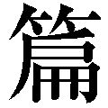 」にあるこの言葉は、敵についての情報を集めてこれを分析し、検証することが、不敗の道につながることを説いている。
武蔵は、ほぼこの考えに立って、他流の兵法、また、剣術以外の武術のことを「風の巻」に述べる、といっている。他流試合、 異 種 武器を 遣 う兵法者との試合を行ってきた彼は、その豊富な体験から得たことを、惜しげもなくオープンにしようというのである。
ここで注意したいのは、他者を知らずして自己の道を弁える──正しい方向を分別することはできない、といっている点だ。
人は、ひとりよがりに 陥 り、正道を踏みはずして「外道」に迷い込みやすいからである。
他者があってこその自己、ということに眼を開いて、世の人間について知ることは、わが道を正すうえでも大切である。
十八 「空」こそは勝負に勝つためのハイレベルの教えである
第五、 空 の巻。 此巻、空と 書 顕 す事、空と云ひ出すよりしては、何をか 奥 と 云 、何をか 口 といはん。道理を得ては道理をはなれ、兵法の道に、おのれと自由ありて、おのれと 奇 特 をす。時にあいては、ひやうしを知り、 自 ら 打 、自らあたる、 是 皆 空の道也。おのずと 実 の道に 入 事を、空の巻にして、 書 とゞむるもの也。第五を「空の巻」とする。 兵法の道は、奥も入口もなく、「空」であることをいおうとして、「空の巻」としてそのことを書きあらわすものである。兵法の道理を会得したならば、その道理を離れることが大切である。兵法は自然の働き、自由自在の用が発揮されてこそ、 不可 思議 な効力を生むものだ。拍子がぴたりと合ったとき、自然に出た無意識の 打 突 が、自然に有効に決まるということがある。これはみな、「空」の働きによるものである。自然に真実の境地に至るこの理について、「空の巻」に書きとめておくことにする。
覚えた 台詞 を 初 日 の朝にはからっと忘れると、役者はのびのびとした演技ができるものだという。『 耳 塵 集 』という芸道書に、藤十郎という役者の例を引いてそんなことが書かれている。
また、 総 稽 古 は初日の二日前に行うべきで、前日にはゆっくり休養をとるのが望ましい、ということが『 舞 台 百 箇 条 』なる書に述べられている。
これは「忘れる」ということが、人間の自由自在の働きを生み、それが創造性につながる一例である。
学問の世界では、本物の学問を創るには、「忘れる」ことが上手でなければならない、とさえいわれる。
「道理を離れる」と、武蔵がここに述べているのは、次元を異にするものの、このことに通じるものがある。
修行によって体得した剣の道理から、からりと離れたところに、「空の道」──固着することのない、とらわれのない、自由な 剣 境 はあるのであって、それこそが「 実 の道」にほかならない、と彼は説くのである。
冒頭に述べたように、真剣勝負とは筋書きのない劇、即興劇のようなものだ。
リアルタイムに変化する場において、劇における台詞や演技にとらわれることは、すでに 死 地 に立つにひとしいのである。
上州・ 馬 庭 （群馬県高崎市吉井町馬庭）に今も伝えられている、 念 流 という兵法の第十四世・ 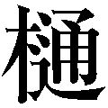 口 定 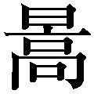 の剣術の 教 歌 「剣の道 業 を勤めて 自 ら 業を離れて 業にこそあれ」も、武蔵のいう「空」の理を説いたものと解すことができよう。
道理を離れることは、からっぽになることではない。ぬけがらになることではない。自由な、活き活きとした世界に 我 入 することだ。
ビジネスの世界でも日々 当 面 する「真剣勝負」に勝つための、ハイレベルの教えといえよう。
十九 自分の「道具」をすべて役立てる
一 此 一流、二刀と 名 付 る事 二刀と 云 出 す所、武士は 将 卒 共にぢきに二刀を腰に 付 る役也。昔は太刀、刀と 云 、今は刀、 脇 差 と 云 。武士たる者の 此 両 腰 を 持 事、こまかに 書 顕 すに及ばず。 我 朝 に 於 て、しるもしらぬも腰におぶ事、武士の道也。此二つの利をしらしめん 為 に、二刀一流と 云 也。 鑓 、 長 刀 よりしては、 外 の 物 と 云 て、 武 道具の 内 也。一流の道、初心の者に於て、太刀、刀、両手に 持 て道を 仕 習 ふ事、 実 の所也。一命を 捨 る時は、道具を残さず役に 立 たきもの也。道具を役に立てず、腰に 納 めて死する事、 本 意 に 有 べからず。この流儀を二刀の流と名づけること── 。「二刀」を 唱 える理由は以下のとおりである。武士は大将も士卒も、二つの刀を腰に直接付けている。昔は太刀（刃を下に向けて腰に吊るして 佩 く刀剣）と刀（ 打 刀 ・刃を上に向けて腰に帯びる刀剣）、現在は刀と 脇 差 を二刀としている。武士たる者、この大小の刀、すなわち 両 腰 を持つことは今さら 喋 々 するまでもない。日本のさむらいは、そのいわれを知ると否とにかかわらず、二刀を腰に帯びることになっている。私はこの二刀の利点を知らしめる意を用いて、「二刀一流」（「二天一流」と称するのが一般的）といっている。槍や長刀などは合戦に用いる武器であり、「 外 物 」と、剣術の立場からは称している。私の流儀では、太刀（この場合は単に「大」の刀の意）と刀（「小」の刀）とを両手に 各 々 持って習うことにしているが、このほうが 実 利 にかなっているからだ。一命をかけて戦うときは、もてる道具を使い残すことなく、役立てたいものだ。道具を役に立てず、腰に納めたまま死ぬのは、武士として本望ではないはずだ。
刃の長さ約六〇センチを超える刀（ 打 刀 ）と、六〇センチ未満・約三〇センチ以上の 脇 差 とを腰に帯びる習俗が生まれたのは武蔵誕生の前後、天正年間（一五七三～九二）のことと考えられている。それ以前は、ここにも述べられているように、刃の長さ九〇センチを越える太刀を 佩 き、刀を差す習いであった。間もなく慶長年間（一五九六～一六一五）になって、日本刀史にいう「 新 刀 」期に入ると、武士の間に刀・脇差の「大小」の習俗がほぼ定着している。
武蔵の二天一流兵法は、大小の二刀を用いる剣法の 嚆 矢 とされる。
では、なぜ二刀流を創始し、 唱 道 したのか、ということについて明確に説いているのが、この条以下の文章である。
武士は二刀を帯びているものであるから、いずれも役立てるのが自然であり、そのためにはこれを遣いこなす習練を積むべきこと。そして、両刀を遣いきらずに戦いにおいて死ぬのは、武士として本望であろうはずがない、とここでは 大 所 高 所 から論じているのである。
刀は武士の 表 道 具 だ。武士を武士たらしめているスピリッツ、メソッド、スキルが集約されているのが、刀である。
自分の持っている、そういう意味での「道具」を残さず役立てることの合理性を、そこに学ぶことができる。
二十 創造的な仕事は「こだわり」をなくした先に生まれる
然 共 、両手に物を 持 事、左右 共 に自由には 叶 ひがたし。太刀を片手に 取 習 せん 為 なり。 鑓 、 長 刀 、 大 道 具 は 是 非 に及ばず、刀、脇差に 於 ては、いづれも片手にて 持 道具也。太刀を両手にて 持 てあしき事、馬上にてあしゝ。かけ走る時あしゝ。沼、いけ、 石 原 、さかしき道、人ごみにあしく、左に弓、 鑓 を 持 、 其 外 何 れの道具を持ても、みな片手にて太刀をつかふものなれば、両手にて太刀を 構 ゆる事、 実 の道に 非 ず。 若 片手にて 打 ころしがたき時は、両手にても 打 とむべし。 手 間 の 入 る事にても 有 べからず。 先 片手にて太刀を振り習はん為に、二刀として太刀を片手にて 振 覚 ゆる道也。 人 毎 に 初 てとる時は、太刀おもくて 振 廻 しがたきものなれ 共 、 万 初 てとり 付 時は、弓も 引 がたし。長刀も振りがたし。いづれも 其 道 具 々 々 になれては、弓も力づよくなり、太刀も 振 つけぬれば、道の力を得て、振よくなるなり。太刀の道と 云 事、はやくふるに 非 ず。第二 水 の巻にて知るべし。しかも、両手で物を持つのは、左右の手を共に存分に振るのに、難があるものだ。そこで、太刀を片手で 遣 う習練をしておかせようというのである。槍や長刀といった大きな道具ならば仕方がないが、刀、脇差は、いずれも片手で持つ道具なのだ。太刀を両手で持つと、具合が悪い状況がある。 馬 上 にあるとき、走るとき、また、沼地や 湿 地 や小石の多い平地、険しい道、人が密集している場所では、具合悪いのである。左手に弓、槍、他の道具を持つには片手で太刀を遣うことになるから、両手で太刀を持って構えることを教えるのは、実戦の利に 悖 るものというほかない。もしも片手に太刀を持って相手を切り殺すことができないときは、両手を 柄 にかけて 仕 留 めればよいのであって、それに手数のかかることはあるまい。だから、私の流儀では、太刀を片手で遣うことを習得させることにしているのだ。初めて片手で遣うときは、誰しも重く感じて、振り回すのに 難 渋 するものだが、それは万事にいえることだ。初めて手にとるときは、弓にしても引くのがむずかしいし、長刀にしても振り回し難い。しかし、どのような道具でも、 慣 れれば、そうでなくなる。弓も力強く引けるようになる。太刀も振り慣れれば、太刀の道筋を通る効力により、振り良くなる。この「太刀の道」という、太刀は速く振るものではないという理のことは、第二巻「水の巻」で知ってもらいたい。
世に「 寛 永 御前試合」というものがある。三代将軍・ 家 光 の治世の寛永年間（一六二四～四四）に、時の 錚 々 たる「剣豪」たちが将軍の御前に 一 堂 に 会 し、 丁 々 発 止 と剣を交えて戦った試合として伝えられている。
このようなフィクションが生まれるほどに、将軍自らが兵法に関心を深くしていたこともあって、そのころは剣術の黄金期の様相を呈していた。
そういう世にあって、武蔵が打ち出した二刀による兵法は、いかにも 清 新 、かつ 刺 戟 的 であった。彼の名は「二刀 遣 い」の呼称とともに 諸 侯 の 耳 目 に触れることとなり、一見するところでは奇妙に映るその剣法を、 面 前 に披露させる大名が少なくなかったのである。
この条では、両手打ちの刀法の非合理性を様々な角度から指摘することで、その二刀遣いの合理性を論じている。そして、片手打ちに 習 熟 しておけば、両手打ちはおのずから容易になる道理だ、と述べている。
──コロンブスの卵
という言葉がある。
誰にも可能なことでも最初に 敢 行 することのむずかしさをいう語だが、武蔵の二刀流発明がこのことに通じるものであることを、その論述から知ることができよう。
では、「卵を立ててみよ」といわれたとき、あとでコロンブスがしてみせたように、卵の 尻 をつぶして立てる発想は、いかにして生まれるのだろうか。
──よろづに 依 怙 の心なし
武蔵の『 独 行 道 』（前出）の中の一条が、一つのヒントになる。「依怙」とは、今風にいうと、「こだわり」のことである。
刀は両手で遣う道具、というこだわりを払い去ったところに、武蔵の二刀流発想のタネはあったに相違ない。
口でいうほど簡単なことではないが、すべて創造的な仕事は、こだわりをなくしたその先に生まれるようである。
二十一 長所と短所は一体であることに眼を開く
太刀はひろき所にて振り、脇差はせまき所にて 振 事、 先 道の 本 意 也。 此 一流に 於 て、長きにても 勝 、短かきにても 勝 。 故 によつて太刀の 寸 を定めず、 何 にても 勝 事を得る心、一流の道也。太刀一ツ 持 たるよりも、二ツ持てよき所、 大 勢 を一人して戦ふ時、又、とり 籠 り者などの時によき事 有 。 箇 様 之 儀 、今 委 しく 書 顕 すに及ばず。一を以て万を知るべし。兵法の道 行 ひ得ては、一ツも見えずと 云 事なし。 能 々 吟味 有 べき也。太刀（この場合は刀の意・以下同じ）は広い空間、脇差は狭い場所で遣うのが、まず、 刀 法 としては自然である。私の流儀では、長いほう（刀）でも、短いほう（脇差）でも勝利する道を求めるから、刀に 長 短 の規定はなく、どちらを用いても勝つ心を 旨 としている。太刀一つよりも、大小二つを用いるほうがよい局面としては、大勢の敵に一人で対するとき、それから、屋内などに立て籠もった者を 仕 留 めるときなどがある。このようなことは詳細に書きつける紙数がないから、「一」を知って「万」を知ってもらいたい。兵法の道を実践できる者は、一つも残さず、このことを読み取ることができるはずだ。これについて、よくよく理解を深めておくことだ。
「 長 短 一 味 」という剣理がある。
殊に 小 太刀 を主とする流派で教えられることだが、長い刀も短い刀も、遣い方しだいではまったく同一の働きをする、ということだ。その技法の詳細については、やや専門にわたるし、本書では必要がないので省略するが、刀は長いほど有利とはいえないのである。
武蔵の創造した兵法も、この長短一味の理のうえに立って、この条では二刀を用いることの応用の広さを力説している。
人間の長所と短所も一体のものであることに眼を開くことができたら、自他ともに、そこに 広 々 とした世界が展開されることを、この二刀論から 汲 み取れるのではないか。
二十二 まず一人のライバルに勝つことから始める
一 兵法二ツの 字 の 利 を 知 事 此 道 に 於 て、太刀を 振 得 たる者を、兵法者と世に 言 伝へたり。武芸の道に 至 て、弓を 能 く射れば、 射 手 と 云 、 鉄 炮 を得たる者は、鉄炮 打 と云ふ。 鑓 を 遣 ひ得ては、 鑓 遣 と云ひ、 長 刀 を覚えては、 長 刀 遣 と云ふ。 然 るに 於 ては、太刀の道を覚えたる者を、 太 刀 遣 、 脇 差 遣 といはん事也。弓、鉄炮、鑓、長刀、 皆 武家の道具なれば、いづれも兵法の道也。 然 共 、太刀よりして、兵法と 云 事、道理也。太刀の徳よりして世を 納 め、身を 納 る事なれば、太刀の道、法のおわる所也。太刀の徳を得ては、一人して十人に 勝 事也。一人にして十人に勝なれば、百人にして千人に 勝 、千人にして万人に 勝 。然るによつて、 我 一流の兵法に、一人も万人も同じ事にして、武士の法を、残らず兵法と云所也。「兵法」という二つの文字の理を知ること── 。この道では、太刀をよく遣う者を、兵法者といっている。武芸それぞれの道に達すると、弓をよく射る者ならば「射手」、鉄砲の上手を「鉄砲打ち」、槍の達者を「槍遣い」、長刀に覚えある者を「長刀遣い」という。この式でいうと、太刀の道を 得 道 した者を「太刀遣い」、「脇差遣い」といって、よさそうなものだ。弓にしても、鉄砲、槍、長刀にしても、みな武家の道具であるからには、その技法は、兵法にほかならない。しかしながら、太刀の技法に、とくに「兵法」という字を当てるのには、それなりの道理があるのだ。太刀はその 霊 徳 によって、世を 平 らかにし、身を安んじる。だから、太刀は兵法の帰する根元といえるのである。太刀の 威 徳 をもってすれば、一人で十人を相手に勝利するものだ。一人で十人に勝つならば、百人で千人、千人で万人相手に勝つことになる。こういうことだから、私の流儀では、一人も万人も同じ、と見立てるのである。武士における一対一の個人戦法も、集団戦法も、同じく兵法なのだ。
「 向 う 指 す」という言葉が、戦国の世にあった。「向う」とは好敵手、ライバルのことで、これに対抗して自分を向上させることを、「指す」という。
人間、ライバル意識をもつことは、実は尊いことである。ライバルと競うことは、自分をレベルアップさせるのみならず、自分が何をしたらよいのか、その目標を鮮明にすることにつながるのだ。
ライバル意識は、相手を尊敬せず、軽蔑することに比重がかかっている場合は、ただ 嫉 妬 に駆られるばかりで、自己のエネルギーを 消 耗 させるだけだが、相手の優れている点を 素 直 に認めてこれを敬う姿勢があれば、自分にとって 甚 だ有益である。
「一人も万人も同じ事」とする武蔵の兵法観によれば、一人の敵に勝つ道を 会 得 できれば、万人に勝つことができることになる。その「一人」が、尊敬に 値 するライバルであれば、彼と 切 磋 琢 磨 する中から、それこそ万人を相手に打ち勝つほどの、途方もない力を得ることができるというものではないか。
まず、持つべきものは一人の良きライバルであり、彼に勝てるように励むことから始めることだ。
二十三 他人の仕事の尊厳を謙虚に受け容れる
道に 於 て、 儒 者 、 仏 者 、 数寄 者 、しつけ 者 、 乱 舞 者 、 此 等 の事は、武士の道にはなし。其 道 に有らざると云ふ 共 、道を広く知れば、物事に 出 あふ事なり。 何 れも人間に於て、 我 道 を 能 みがく事、 肝 要 也。武士の行うべき道は、儒者や僧侶、茶人や礼法家や能役者のそれではないけれども、広く、道は道として認めると、そこには通い合うもののあることがわかるはずだ。どのような道でも、人間それぞれに自分の道を深く磨くことが、求められるのである。
「武士道は刀をその力と勇気の表徴となした」
これは 新 渡 戸 稲 造 著『武士道』の第十三章「刀・武士の魂」の冒頭をかざる文章である（ 矢 内 原 忠 雄 訳・岩波文庫）。
霊 徳 あるその刀の 操 法 である剣術を、殊に「兵法」という二字で称するわけを述べた武蔵だが、彼は頑固な兵法 至 上 主義者ではなかった。
すでに触れてきたように、兵法者は剣術だけを修行していては、「 実 の道」を会得できないのであって、他の道に「触れる」こと、視野を広くすることが大切だ、と彼は力説しているのである。その中で学びとることが、兵法の探求に 資 するからだ。
宮本武蔵という男には、とかく 傲 岸 不 遜 のイメージがつきまといがちだが、道を求めるうえで、彼ほど謙虚だった兵法者はいないかもしれない。
人それぞれの道──他人それぞれの「仕事」の 尊 厳 を謙虚に受け容れることのできる人は、自分の仕事を 深 化 できるはずである。
二十四 日頃から「道具」をアタマの中に整理しておく
一 兵法に武具の利を知ると 云 事 武 道具の利をわきまゆるに、 何 れの道具にても、おりにふれ、時にしたがひ、 出 合 もの也。脇差は 座 のせまき所、敵の身ぎわへよりて、其 利 多し。太刀は何れの所にても、 大 形 出合ふ利有り。 長 刀 は戦場にては、 鑓 におとる心 有 。鑓は 先 手 なり、長刀は 後 手 也。同じ 位 のまなびにしては、鑓は少し強し。鑓、長刀も、事によりつまりたる所にては、其利 少 し。 取 籠 り者などにも、 然 るべからず。 只 戦場の道具なるべし。合戦の場にしては 肝 要 の道具なり。され 共 、座敷にての利をおぼへ、こまやかに思ひ、 実 の道を忘るゝに於ては、 出 合 がたかるべし。兵法においては武器それぞれの利点を知っておくこと── 。戦いに用いる道具は、どの道具も時と場合によって効果をもたらす利点のあることを、弁えておくことだ。まず刀でいうと、脇差は狭い場所、敵と至近距離の場所にあるときに用いるのに、利点の多い武器である。刀はどのような場所にあっても、大体、対応するのに 便 宜 を持つ。 長 刀 は戦場では槍よりも効用が劣っている。槍は 先 手 を取るのに対して、長刀は 後 手 を引かざるを得ない武器といえる。同程度の修練ならば、槍のほうが長刀よりも強い。槍も長刀も、 急 場 に用いるのは、やや不利だ。家屋に立て籠もった者を仕留めるのにも、適していない。いずれも戦場で使用するべき道具であり、合戦にはなくてならぬ武器とされる。しかし、屋内での稽古で覚えた槍と長刀の術を、そのまま細やかに戦場に用いようとすれば、この武器の本性から離れてしまい、これを役立てるのに難がある。
戦いに用いる道具──武器についての武蔵の論述は、実戦体験に裏づけされたものであり、味わい深く、また、 微 に 入 り 細 をうがっているが、武道に関心のない向きには、とっつきにくいことであろう。
だが、「道具」をメソッド、あるいはセオリーというふうに置き換えて読み解くと、企業社会を含む現代社会の様々な局面に対応する知恵を、そこに 汲 むことができる。
道具は、それぞれの利点を生かすことが大切とされるように、物事に対処して成果を得るには、様々なメソッド、セオリー、ひいてはスキルの長所を確認して、 適 宜 用いることが求められよう。
そのためには、日頃から「道具」をたくさん用意しておき、アタマの 抽 斗 にきちんと整理しておくことだ。
二十五 見てくれよりも中味を充実させる
弓は合戦の場にて、かけひきにも 出 合 、 鑓 わき、 其 外 物きわ にて、はやく 取 合 するものなれば、 野 相 の合戦などにとりわきよき物也。 城 攻 など、又 敵 相 二十 間 をこへては不足なるもの也。当世に 於 ては、弓は 申 に及ばず、諸芸、花 多 して 実 少なし。 左 様 の芸能は 肝 要 の時、役に 立 がたし。其 利 多し 。 城 郭 の内にしては、 鉄 炮 にしく事なし。野相などにても、合戦のはじまらぬうちは、其利多し。 戦 はじまりては不足なるべし。弓の一の徳は、放つ矢、人の目に見えてよし。鉄炮の玉は、目に見えざる所、不足也。此儀 能 々 吟味 有 べき也。弓は合戦の場の進退に有用な武器だ。 槍 衾 （槍隊）や、そのほかの隊の脇にあって、 迅 速 に敵に対応できる武器だから、 野 戦 （城外の平地での戦い）などには、殊に効果的である。しかし、 攻 城 戦 や、 彼 我 の間隔が二十間以上の戦いでは、弓はあまり役に立たない。この弓術もそうだが、このごろのもろもろの武芸は、華麗な技法に流れ、 実 をともなわぬものが多い。このような武芸では、大事の実戦の用に立たず、利を得ることが少ないのである（原文「多し」は「少なし」の誤り？）。鉄砲は城を攻めるにも守るにも、これ以上の武器はないし、野戦においても、戦闘の始まらない前には利点の多い武器といえるが、 戦 端 が開かれてからは、それほど役には立たない。両 飛 道 具 を比べると、弓の長所の一つは、放つ矢が人の目に見える点が、よろしい。鉄砲は、飛んでいく玉が見えないのが、不足の点だ。このことをよくよく読み取ってもらいたい。
この条では弓と鉄砲の長所、短所が述べられているが、弓を含む諸武芸が近頃は「 花 」多くして「 実 」少なきものになり、実戦に役立たない傾向のあることを批判している点が、注意をひく。
剣術は、江戸時代の中・後期の泰平の時代に、実戦味の乏しい、 形 骸 化 した「 形 」の稽古に終始する武芸に 堕 した観があるが、すでに武蔵の在世に、その 兆 候 が認められたのであろう。そういう「 華 法 」に流れる武芸に、彼は 警 鐘 を鳴らしているのである。
「花」よりも「実」を、見てくれよりも中味を、自分の中で充実させる努力が、結局は勝利を呼び込むものなのだ。
二十六 何事にも「知足」のこころを守る
馬の事、つよくこたへて、くせなき事、 肝 要 也。 総 て 武 道具につけ、馬も 大 形 にありき、刀、脇差も、大形にきれ、 鑓 、 長 刀 も大形にとほり、弓、 鉄 炮 もつよく、そこねざるように 有 べし。道具以下にも、かたわけてすく事有べからず。あまりたる事は、たらぬと同じ事也。人まねをせずとも、 我 身 に 随 ひ、武道具は手にあふ様に有べし。 将 卒 共に物にすき、物を嫌ふ事 悪 し。 工 夫 肝要也。馬は力強く耐久力があって、 癖 のないことが大切であり、それ相応に歩けることが条件となる。戦いの道具は、馬もそうだが、刀や脇差の切れ味、槍や長刀の突き味、 薙 ぎ味も、相応に良いものであればよいのであって、弓と鉄砲は、堅固なこしらえで、容易には損じないものであれば、よしとされる。戦場の道具については、 選 り 好 みをせぬこと。分不相応の武器は、不満足の武器と同じことだ。他人のまねをすることなく、自分の身体に応じて、手にしっくりする道具でなければならぬ。大将も、 士 卒 も、好き嫌いを道具に持ち込まぬこと。この点、工夫が大事である。
──わが身にいたり物いみする事なし
『 独 行 道 』の中の一条である。
「 物 忌 」とは、神仏に仕えるために心身を 浄 め、飲食を 慎 み、 汚 れたものに近づかない、といった宗教的慣習のことを一般にはいうが、ここで武蔵が用いているそれは、物に対して好き嫌いが入り込まないようにしたいということである。
ここに掲げた武器についての教えは、この自戒の言葉に対応するものだ。
武器の目的は、敵を破ることにあるのであって、それ以上の何物でもない。その目的のために大事な性能、耐久性さえ満たしていれば、十分である。長さや大きさ、外装などに、好き嫌いがあってはならない。まして人のまねをするなどは、もってのほかといっている。
何に対しても、必要十分であることを求めること。「 足 る」を知ること──「 知 足 」のこころを守ることである。
二十七 人生の勝負も「拍子」の理を知ることにきわまる
一 兵法の 拍 子 の事 物 毎 に 付 、拍子は有る物なれ 共 、とりわけ兵法の拍子、鍛錬なくては 及 がたき所也。世の中の拍子あらはれて 有 事、 乱 舞 の道、れい 人 管 弦 の拍子など、 是 皆 能 あふ所のろくなる拍子也。武芸の道にわたつて、弓を 射 、 鉄 炮 を 放 、馬に乗る事 迄 も、拍子、調子は有り。 諸 芸 諸 能 に 至 ても、拍子をそむく事は有るべからず。又 空 なる事に 於 ても、拍子は有り。武士の身の上にして、奉公に身をしあぐる拍子、しさぐる拍子、 筈 のあふ拍子、筈のちがふ拍子 有 。 或 は商の道、 分 限 になる拍子、分限にても、 其 たゆる拍子、 道 々 に付けて、拍子の 相 違 有 事也。 物 毎 のさかゆる拍子、おとろふる拍子、 能 々 分別すべし。兵法の「拍子」ということについて── 。どのようなことにも、拍子というものが大切だ。とりわけ、兵法における拍子は、鍛錬を積まないと会得できるものではない。世に拍子が表現されるものとしては、能役者の 舞 、 楽 人 の奏する 雅 楽 などがあるが、これらの拍子は、みな「合う拍子」、「正しい拍子」を 旨 としている。武芸の道でも、弓を射るにも、鉄砲を撃つにも、馬を乗りこなすにも、拍子、調子が求められるが、諸芸道、諸芸能とも、拍子に反してはならぬとされている。また、目に見えないことにも、拍子はあるものだ。武士の境遇では、奉公のうえで立身出世する拍子があるかと思うと。転落する拍子がある。情勢にぴったり合っている拍子、合っていない拍子がある。あるいは商人の道でいうと、大金持ちに成り上がる拍子があるかと思うと、大金持ちの家が絶える拍子がある。その道その道で、拍子の内容には違いがあるが、「盛り上がる拍子」と「衰える拍子」が、何事にもあることを、よく認識しておくべきである。
能役者の 世阿弥 の著『 風 姿 花 伝 』（通称「花伝書」）に、「 男 時 」「 女 時 」という言葉がある。述べられていることを 嚙 みくだくと、次のとおりである。
──「 勝 負 神 」といって、勝つ神と負ける神それぞれが自分の座席を 占 めて、戦況を見守っているものだ、と一書に書かれているが、これは兵法の道における秘事とされている。およそ時の移ろいには、 年 々 、 日 々 、また、ちょっとした時の 間 にも、勝つ神が見守っている時、すなわち勢いづく時、 功 成 りやすい時（男時）があるかと思うと、負ける神が見ている時、衰える時、失敗しがちな時（女時）とがあって、この二つが、目に見えない 因 果 律 のもとに、めまぐるしく変化するのである。
この男時と女時にそれぞれ対応する言葉が、武蔵のいう「さかゆる拍子」と「おとろふる拍子」にほかならない。
「拍子」は、広い、多様な、そして深い意味を持つ、日本文化独自の用語といっていい。あえて横文字言葉を用いると、リズム、テンポ、タイミング、サイクル、バイオリズムといった意味のすべてを含む言葉である。
武芸を含む広義の芸能の究極は、この「拍子」の理を会得するか否かにかかっている、といっても過言ではないが、人生の勝負も、組織の成功と失敗も、「拍子」の大切さを知り、「さかゆる拍子」の時も、「おとろふる拍子」の時も、知恵を働かせて対応することが 要 となるのだ。
二十八 「背く拍子」で主導権を握る
兵法の拍子に 於 て、 様 々 有 事也。 先 あふ拍子を知つて、ちがふ拍子を 弁 へ、 大 小 遅 速 の拍子の中にも、あたる拍子を知り、 間 の拍子を知り、 背 く拍子を知る事、兵法の 専 也。 此 背く拍子、弁へ得ずしては、兵法たしかならざる事也。兵法の 戦 に、 其 敵 の拍子を知り、敵の思ひよらざる拍子を 以 て、 空 の拍子を、 智 恵 の拍子より発して 勝 所 也。 何 れの巻にも、拍子の事を 専 書 記 也。其 書 付 の吟味をして、 能 々 鍛錬すべきもの也。兵法には、拍子についての様々な教えがある。まずは相手の拍子と合う拍子を知り、これをはずす拍子を弁えておくこと。また、大きな拍子と小さな拍子、遅い拍子と速い拍子の中にあって、相手に 打 突 が有効に決まる拍子を知ること。さらに、「 間 の拍子」と、相手の拍子に乗ることなく、あえて 逆 らってその拍子を 崩 す、「 背 く拍子」を知る事を、兵法ではもっぱらのこととしている。この「背く拍子」を体得しないと、自分の兵法は確立しないものである。兵法における戦いは、敵の想定外の拍子を 遣 うこと。すなわち「 空 の拍子」なのであって、これを「悟りの 智 慧 」より発して勝つことだ。私はこの書のどの巻にも、もっぱら拍子のことを書き記すことになる。書かれていることを呑み込んで、十分に鍛錬してもらいたい。
京 舞 の家元の四世・井上 八千 代 の芸談（『井上八千代芸話』片山慶次郎著・河原書店）に、こんなことが書かれている。
「大切なことはいろんな 間 に対する、その場その場のカンだと思います。それさえ養えば、どんな 地 （編訳者注＝ 地 方 ・三味線や唄）だって、たとえ三味線が全然違う 替 手 を弾かれても驚くことはありません。むしろ間は一つだという信念こそ大事なように思います」
ここに述べられている「間」は、ほとんど「拍子」という意に解していいと思う。
俗に「三味線に弾き殺される」といって、舞い手が地方の拍子にいたぶられることがあるそうだが、自分の「間」「拍子」は一つという信念をもって、これを崩さぬようにすること、そしてこのためには様々な間、拍子に対する「 勘 」が求められることを述べている。
舞 や 踊 、音曲などの拍子は多種多様であり、しかも 千 変 万 化 するものだが、兵法についてもこのことはいえる。
その拍子についての考えの一端を、武蔵はここに明かしているのだが、殊に「背く拍子」を心得ることが兵法では不可欠のこととしているのが、注意をひく。
相手の拍子を崩すこの拍子は、とりわけビジネスの世界の人間関係のうえで主導権を握る場合に、心得ておくべき拍子といえよう。
いずれにせよ、たとえ拍子という言葉を用いていない条でも、『五輪書』全体にその教えが流れていることを念頭に置いて、以下、武蔵の言葉を味わう必要がある。
二十九 まじめな人間が最後は勝利をつかむ
右 一流の兵法の道、 朝 な 夕 な 勤め行ふによつて、 自 ら広き心になつて、 多 分 一 分 の兵法として、世に伝ふる所、 初 て 書 顕 す事、地水火風空、 是 五巻也。 我 兵法を学ばんと思ふ人は、道を行ふ法有り。第一に、よこしまになき事を思ふ所。第二に、道の鍛錬する所。第三に、諸芸にさわる所。第四に、諸職の道を 知 事。第五に、 物 毎 の損得を 弁 ゆる事。第六に、 諸 事 目 利 を 仕 覚 る事。第七に、目に見えぬ所をさとつて知る事。第八に、わづかなる事にも気を 付 る事。第九に、役に 立 ぬ事をせざる事。 大 形 、 如 此 理 を心に 懸 て、兵法の道、鍛錬すべき也。述べてきたような兵法の流儀を朝夕に 行 じてきたところ、自然と、これを広めたいという気持ちになり、一対一の戦い、集団対集団の戦いの兵法として、世に伝えるべく、地水火風空の五巻に仕立てて、初めて書きあらわすことにしたのである。私のこの兵法を学ぼうとする人に、今、修行の姿勢について述べておくと──。 ① 邪 心 を廃して 実 直 に取り組むこと。 ② 鍛錬を 怠 らぬこと。 ③ 兵法以外の諸芸に触れて視野を広げてみること。 ④ もろもろの仕事の道理を知ること。 ⑤ 物事の損と得とを 弁 別 すること。 ⑥ 物事に対して鑑識眼を 培 っておくこと。 ⑦ 目に見えない理を 覚 ること。 ⑧ 細部のことに注意を払うこと。 ⑨ 成果の出ないことはせぬこと。大体、以上のような理法を心にかけて、兵法の道の鍛錬に励んでもらいたい。
自分の兵法を修める志のある人に対して、武蔵は九ヵ条の基本的なメソッド（方法）を示している。これらの教えの条々は、個々に独立したものではなく、 ⑨ を身につければ、 ⑧ を行うことができて、 ⑧ を身につければ、 ⑦ を行うことができる──というふうに、逆に順を追って読み解いていくと呑み込みやすいのではないか。
極まるところ、 ① にいう「よこしまになき事を思ふ所」、すなわち、 実 直 であること、まじめであること、そして、ひたむきであることが、勝利の法を体得することにつながるのだ。
三十 生きることは「勝つ」ことである
此 道 に 限 て、 直 なる所を広く 見 立 ざれば、兵法の達者とは 成 がたし。 此 法 を学び得ては、 一 身 にして二十、三十の敵にも 負 べき道にあらず。 先 気に兵法をたへさず、 直 なる道を 勤 ては、手にて 打 勝 、目に見る事も人に勝ち、 又 鍛錬を 以 て、 総 体 自由 なれば、身よりも人に勝ち、又此道になれたるなれば、心を以ても人に勝ち、 此 所 に 至 ては、いかにとして人にまくる道 有 んや。又大きなる兵法にしては、 善 人 をもつ事に 勝 、 人 数 を 遣 ふ事に勝、身を正しく行ふ道に勝、国を 治 る事に勝、 民 をやしなふ事に勝、世の例法をおこなふに勝、 何 れの道に 於 ても、人に 負 ざる所を知りて、身をたすけ、名をたすくる所、 是 兵法の道也。兵法の道に限っては、視野を広くして、真実のことを見極めることなくしては、達者となることはむずかしいのである。そうしてこの法を会得できたあかつきには、この身一つで二、三十人の敵を相手にしても、負けることはない。まず、兵法を学ぶ 気 概 を絶やさずに、その真実の道を求めつづけるならば、手をもってしても、目をもってしても、敵に打ち勝つことができるようになるし、また、鍛錬により全身に自在な動きを体得することによって、身体そのものの 捌 きで、勝利をおさめられることにもなる。さらに、この道に親しむうちには、心でも勝ちを制すことができるのである。このように 技 、 体 、 心 のすべてにおいて 勝 る 境 涯 に至っては、個々の戦いで人に負けるわけはない。このことを「 大 きなる兵法」、すなわち集団戦に用いる兵法にあてはめれば、有能な人材の登用、配下の操縦、自身の正しい方向性、 治 国 と 民 心 掌 握 、法令の徹底といった、あらゆることに不敗の地を得ることになる。そうして 自 助 の道、わが名を誇るべき道を切り開くこと。これこそが「大きなる兵法」のめざすところといえるのである。
宮本武蔵とほぼ同時代を生きた 柳 生 宗 矩 は、とかく武蔵と比較対照されることが多い。
徳川 家 康 によって 見 出 され、二代 秀 忠 、三代 家 光 と、あいついで兵法師範を務めた宗矩が、六十二歳のときに完成した 新 陰 流 の基本的伝書である『 兵 法 家 伝 書 』は、そのために『五輪書』と比べられる傾向がある。その書に、次のようなことが述べられている。
「兵法というと、一対一で大小を用いて戦う法をいうようだが、これは負ける者も一人、勝つ者も一人、しょせん、その 得 失 はたいしたことはない。一人が勝つことが、『天下の勝ち』、一人の負けが『天下の負け』となる、これを『 大 なる兵法』というのである」
この書を著した年、柳生宗矩は 惣 目 付 （大名を監察する役職・後の大目付）となり、やがて大名に昇進する。すなわち、権力の側に立つことになったのだが、すでに早い時期から、彼は世が泰平に移りゆくことを見越して、「大なる兵法」「大将の兵法」を創造すべく 腐 心 していた。
武蔵の言葉にいう「 大 分 の兵法」「大きなる兵法」と同様である。
しかし、宗矩が『五輪書』にいう「小さき兵法」「 一 分 の兵法」に、 禅 理 と心法を持ち込み、これを「大なる兵法」に応用しようとしたのに対して、武蔵はどこまでも 刀 法 の実戦的・具体的な知恵を伝え、それが一国のリーダーの政治のメソッドに 通 底 することを主唱しようとしたかに見える。
組織を 治 め、同時にリーダーとしての自己を 修 めることも、真剣勝負に勝つことと何ら変わるところはない、というのが、この 求 道 の兵法者の確信だったのだ。
個人が生きることも、組織が生きることも、 畢 竟 、「勝つ」という言葉に帰するのだ。
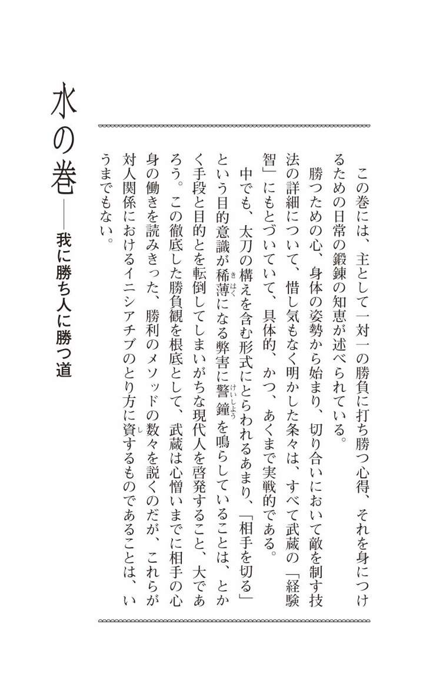
三十一 「問題意識」というゼンマイを巻いて読む
兵法 二 天 一 流 の心、 水 を 本 として、 利 方 の法を行ふによつて、 水 の巻として、一流の 太刀 筋 、 此 書 に 書 顕 すもの也。 此 道 いづれもこまやかに心の 儘 には 書 分 がたし。 縦 ことばつゞかざると云ふ 共 、利は 自 ら 聞 ゆべし。此書に 書 付 たる所、 一 こと 、 一 字 々々にて思案すべし。 大 形 に思ひては、道のちがふ事多かるべし。兵法の利に 於 て、 一 人 と一人との勝負の様に 書 付 たる所なり共、 万 人 と万人との合戦の利に 心 得 、大きに 見 立 所、 肝 要 也。此道に限つて 少 なり共、道を見違へ、道の迷ひ有りては、 悪 道 へ 落 るもの也。此書付 計 を見て、兵法の道には 及 事に 非 ず。此書に書付たるを、 我 身 にとつて、書付を見ると思はず、ならふと思はず、にせものにせずして、 則 ち 我 心 より 見 出 したる利にして、常に其 身 になつて、 能 々 工夫すべし。兵法「二天一流」の 趣 意 を、水の本性のごとく利益ある法として、この「水の巻」には、私の流儀の刀法に関わることを書きあらわすことにする。この道の 微 細 な 習 訓 のことは、思うように 嚙 みくだいて述べることはむずかしいけれど、たとえ 文 脈 が整っていなくても、わが兵法の理は、おのずから伝わるはずだ。この書に記そうとしたことを、一言一言、一字一字、熟考してもらいたい。おおざっぱに読んでしまうと、道理を 違 える場合が多いであろう。兵法の理について、一対一の勝負のうえで述べていることでも、万人対万人の合戦の理に 通 底 するものと心得て、大きな 視 座 に立って認識することが、大切なのだ。この道に限っては、ちょっとでも道理を 曲 解 して迷いの道に踏み入ると、「悪の道」に落ちてしまうものである。ここに書いたことの 字 面 を追うのでは、兵法の真髄を会得することはできぬ。書いてあることを、自分の身に引き取ってみることだ。「読む」と思うのではなく、「習う」、または、まねをするというのでもなく、自分の心に突き刺さることを見出し、これを常に実行することである。この工夫を十分にしてもらいたい。
禅に、「 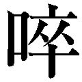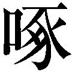 同 時 」という語がある。
ひな鳥が 孵 るためには、卵の中から出ようとする力と、外からの力（たとえば親鳥の突っつく力）とが、ぴたりと同時に作用し合う必要がある、という意味の言葉だ。弟子の求める力と、師の与える力とが、完全に一体となったとき、仏法は師から弟子へと伝授される、ということを説いている。
読書についても、このことはあてはまる。
良書を読んで、いくら知識をインプットしても、「知恵（ 智 慧 ）」に眼が開かれるとは限らないのである。「 同時」、インキュベーション（ 孵 化 ）がそこになければならない。
「水の巻」は、主として一対一の勝負に利益となる兵法の知恵を述べた巻である。それは現代人の人間関係術、自己啓発に生かすことのできる知恵として受け取ることが可能なのだが、書かれていることをすらすらとインプットしても、実人生に利するものは得られまい。
武蔵がここに述べているように、やはり「 我 心 より 見 出 したる利にして、常に 其 身 になつて」読み進む姿勢が求められるのだ。
そのためには、読み手が自分の中の「問題意識」というゼンマイを、強く巻いておかねばならない。
いいかえれば「創造的な読み方」をすることによってこそ、いわゆる「目からウロコが落ちる」ような知恵の言葉を、『五輪書』に見つけることができるのである。
三十二 しなやかな「ふだんぎ」の心に自分の心を調える
一 兵法 心 持 の事 兵法の道に 於 て、心の 持 様 は 常 の 心 に 替 る事なかれ。常にも、兵法の時にも、 少 も替らずして、心を広く 直 にして、きつくひつぱらず、少もたるまず、心のかたよらぬ様に、心をまん中におきて、心を 静 にゆるがせて、 其 ゆるぎのせつなもゆるぎやまぬ様に、 能 々 吟味すべし。兵法における心の持ち方について── 。兵法の道のうえでは、心をどのように 調 えればよいかというと、日常の自然体の心（常の心・平常心）の持ち 様 と変わるところはないのである。ふだんの時と、剣を 遣 う時と、何ら変わりはない、ということだ。つまり、広々とした心、真っ直ぐな心をもち、その心を緊張させることなく、さりとて少しも 弛 緩 させることなく、 一 所 に 偏 らせないように、内面の中心に置くように持ち、静かにこれを動かし、 刹那 もその動きが 滞 らないようにすることである。このことをよく呑み込んでもらいたい。
平 常 心 ──という言葉は、殊にアスリートが試合、競技に臨む前の気持ちを問われたときのコメントによく聞かれるが、それはプレッシャーを意識することなく勝ち気に 逸 らないようにしたい、といったほどの心構えを、この三文字にこめての言である場合が多いようだ。
平常心は、元来は禅語であり、「びょうじょうしん」と読むが、自分の心をこの状態にコントロールすることは、口でいうほど簡単ではない。また、この言葉の真実も、雲のように 捉 えがたい。
その 捕 捉 しがたい、おそらくは人間の 本 源 に関わる「哲学的な心理状態」を、武蔵は「常の心」という語に集約して、その「 心 持 」について、自分の体験からつむぎ出した表現を駆使して伝えようと努めるのである。
その冒頭で、とりわけ強調されているのは、水のごとき自由自在の動きを絶やさない心が、「常の心」の初歩にほかならない、ということであろう。平たくいえば、しなやかな「ふだんぎ」の心を調えておくことを彼は第一に教えるのだ。
三十三 心と体のかねあいを工夫する
静 なる時も心は静ならず、何とはやき時も心は 少 もはやからず、心は 体 につれず、体は心につれず、心に用心して身は用心せず、心のたらぬ事なくして心を少もあまらさず、すへの心はよわく 共 、そこの心をつよく、心を人に 見 分 られざる様にして、 小 身 なるものは心に大きなる事を残らず知り、 大 身 なるものは心に小さき事を 能 知りて、大身も小身も、心を 直 にして、 我 身 のひいきをせざる様に心を 持 事 肝 要 也。気持ちが静かなときも、心は静止することなく、気持ちが 逸 っているときも、心は動揺しないこと。心の働きは、体の動きにとらわれることなく、体の動きは、心の働きにとらわれないこと。心の備えに注意を払い、身体は放任すること。心に不足をきたさず、しかし、少しの余分なものも生じさせないこと。見た目の心は弱くとも、奥底の心は強くあること。心を人に読まれぬようにすること。小心と見られる者は、大胆なことをすべて心に 叩 き込み、 大 物 と見られる者は、 細 々 としたことを十分に心に知らしめておくこと。そして、大物風も小心者風も、その心の持ち様に自己満足することのないようにすること。こうしたことが大切だ。
「心は、人間の中の〝どこ〟にあるのか？」
人工知能の開発とともに、脳についての研究が進んできた昨今だが、「心は脳細胞の中にある」と、実験データをもとに 確 言 できる学者は、ついにあらわれないのではなかろうか。
おそらく宇宙の 生 成 を突き止めるよりもむずかしいのでは、と 憶 測 される人間の心についての武蔵の関心は、神秘のヴェールの向こうにある心というものを、兵法にどのようにして有効に働かせるか、という一点にあった。
「勝負師」ならではのこだわりといえよう。
訳文に種々のことを述べている中でも重要なのは、「心」と「体」とが互いにとらわれ合うことのないようにするのが、兵法における「心の持ち様」の 秘 訣 となる、ということだ。
つまり、心と体の拍子を連動ないし一致させないことが、兵法では肝心なのである。
芸道の中で剣の道と最も通い合う点の多い 能 でも、これは説かれる。たとえば、 世阿弥 の伝書には、「 体 」（この場合は心のこと）と「 用 」（心から発せられる身体の動作）とのかねあいを習得すべきことが書かれている。
心と体との二つを、拍子のうえではシンクロナイズさせぬように働かせるところに、勝負の妙はある。
三十四 現世での勝利は「知恵」の磨き方にかかっている
心の内にごらず、広くして、広き所へ智恵を 置 べき也。智恵も、心も、ひたとみがく事 専 也。智恵をとぎ、天下の 利 非 を 弁 へ、 物 毎 の善悪を知り、 万 の芸能、 其 道 をわたり、世間の人に少しもだまされざる様にして 後 、兵法の智恵となる心也。兵法の智恵に 於 て、とりわきちがふ事 有 もの也。 戦 の 場 、万事せはしき時なれ 共 、兵法の道理をきはめ、うごきなき心、 能 々 吟味すべし。心の中を 濁 りのないようにし、広くして、その広いところから知恵というものが湧き出るようにすべきである。知恵も、心と同じく絶えず 研 磨 することが大切だ。その研ぎ澄ました知恵で、天下の 利 非 曲 直 を弁え、物事の善悪を知り、様々な芸能、諸道、それぞれの道に処し、世間の人の目によって少しも揺れ動くことのないようにして、初めて兵法の知恵が成るものである。兵法にいう知恵は、他のそれとは違うものだ。戦いの場というものは、 時 々 刻 々 に急を要するものだが、そのような状況にあっても、兵法の道理をつらぬき、不動の心を 持 すこと。このことを十分に心得よ。
『五輪書』に使われている「智恵」という言葉は、仏教でいう「智慧」（悟りを開く働き）ではなく、現実の生活、人生と結びついた「知恵」（物事の道理を知って適切に処理する能力）に、限りなく近い意味をもっている。
この書の内容が、 現 世 の様々な局面に処すヒントを示してくれるのはそのためである。
リアルタイムに変化するこの現実の「真剣勝負」に勝つことは、 畢 竟 、 濁 りのない、広い心をもって、日頃、知恵をいかに磨いておくかにかかっている。
三十五 姿勢によって心を調える
一 兵法の 身 なりの事 身のかゝり、顔はうつむかず、あをのかず、かたむかず、ひずまず、目をみださず、ひたいにしわをよせず、まゆあいにしわをよせて、目の玉のうごかざる様にして、またゝきせぬ様に思ひて、目を少しすくめる様にして、うらやかに見ゆるかを、鼻すじ 直 にして、少しおとがひを出す心也。首はうしろのすじを直に、うなじに力を 入 て、肩より 総 身 はひとしく覚へ、両の肩をさげ、 脊 すじをろくに、尻を出さず、ひざより足先まで、力を入て、腰のかゞまざる様に腹をはり、くさびをしむると云ひて、 脇 差 のさやに腹をもたせて、帯のくつろがざる様に、くさびをしむると 云 教 有り。 総 て兵法の身に 於 て、 常 の 身 を兵法の身とし、兵法の身を常の身とする事 肝 要 なり。 能 々 吟味すべし。兵法の身の 調 え方について── 。姿勢のことを述べる。 ① 顔の構え──うつむかないこと。 仰 向 けにならないこと。左右に傾かないこと。前後に 歪 まないこと。 ②目──視線を乱さないこと。 額 に 皺 をよせず、 眉 間 に皺をよせるようにすること。目の玉を動かさないこと。 瞬 きをしない心持ちで、目をいくらか 竦 めるようにすること。 ③ 表情──全体にゆとりある感じ。鼻筋は真っ直ぐにし、下あごを少し前方へ出す感じにすること。 ④ 上半身──首は後ろの筋を真っ直ぐにし、うなじに力を込めること。肩の力は全身にゆきわたるようにすること。両の肩を下げて、背筋を正しく立てること。 ⑤ 下半身──尻を出さないこと。膝から足先までに力を込めること。 ⑥ 「 楔 を 締 める」という教え──腰が 屈 まないように、そして腹を張り、その腹を 脇 差 の 鞘 に 凭 せかけて、かつ、 帯 が 緩 まぬようにすること。これが「楔を締める」という姿勢である。さて、兵法の姿勢についての教えをまとめると、「常の身」──自然体ということになる。人間の日常自然の姿勢と、兵法の姿勢とを同じくすることが大切なのであり、このことをよく知っておいてもらいたい。
「たかが姿勢」と軽視してはならない。姿勢が理に 適 っている人は、他人から好感をもたれるのはもちろんだが、自分自身の心を正し、ひいては人付き合いを好ましい方向へ発展させることにもつながるのだ。
坐禅では、心を調えるためには、息（呼吸）を調えるべし、と説かれるが、その 調 息 は、まず、身を調えること、すなわち 調 身 から入るように教えられる。
兵法についてもこれはいえるが、古今の「剣豪」で武蔵ほど具体的に、精細に姿勢について述べた人は、おそらくいないであろう。近世初期の人間にこのような姿勢論のあることは、驚異に 値 する。
前条で説かれた「常の心」で勝負の場に臨むのは容易ならざることだが、訳文にあるような「常の身」を修練することが、平常心の 錬 磨 のための入口になることは確かである。
三十六 本質を洞察する「観」の目付を養う
一 兵法の 目 付 と 云 事 目の 付 様 は、 大 きに広く 付 る目也。 観 見 二ツの事。観の目つよく、見の目よはく、遠き所を近く見、近き所を遠く見る事、兵法の 専 也。敵の太刀を知り、 聊 敵の太刀を見ずと云事、兵法の大事也。工夫 有 べし。 此 目付、ちいさき兵法にも、大きなる兵法にも、同じ事也。目の玉動かずして、両脇を見る事 肝 要 也。 箇 様 の事、いそがしき時、 俄 には 弁 へがたし。此 書 付 を覚え、 常 住 此目付になりて、何事にも目付の 替 らざるところ、 能 々 吟味 有 べきもの也。兵法における目の付け方について── 。敵の働きに対する目の付け方は、「大きく広く」ということを心がけて付けるのである。「 観 」「 見 」二つの 目 付 という理がある。「観」の目付を強くして、「見」の目付を弱くし、遠い所を近く見て取り、近い所を遠く見て取るのが、兵法のうえでは大切だ。敵の太刀の働きを見ることなく、これを 識 るということも大事である。この点、工夫してもらいたい。この目付は、個々の戦いにも、集団戦にも、兵法の目付として同じように用いられる。また、目の玉を動かさずに敵の両脇に目を配る、ということも大切だ。こうはいっても、勝つか負けるかの危急の場に臨み、このようなことをすぐに実行するのはむずかしいから、ここに書かれていることを覚えて、いつもこの目付を変えないようにしたいものだ。このことを十分に検討してもらいたい。
── 一 眼 二 足 三 胆 四 力
昔から剣道修行の 要 訣 での第一に挙げられているのが、敵の動きや様子を見て取る「目付」である。その教えは諸流諸派によって様々だが、武蔵のそれは単純明快をきわめている。
蹴 鞠 の名人が鞠を見ずに 蹴 るように、あるいは、曲芸師が目を付けることなしに、扇を鼻の上に立てたり、刀剣を手玉にとったりするように、兵法者は敵の特定の 部 位 に目を付けずとも、彼の太刀の働きを見て取ることができるものだ、と武蔵はいう。
では、どのような修行を積めば、そんな高度なことができるようになるのか。
兵法の目付に、「観」「見」の二つがあることを、彼は説き示すのである。
観──それは対象の本質の全体を直観する目付。見──それは対象の現象の各部分を分析して見る目付。兵法のうえでは、観はいわゆる「 心 眼 」を開いて、相手の働きの根源を 洞 察 する見方であり、見は肉眼によって、働きをうつしとる見方といってよい。
そして武蔵は、観の目を強く、見の目を弱くして、敵に目を付けよ、と説くのである。
このような兵法の目付は、現代人に種々 資 するところがある。仕事、人生における問題の把握のしかた、プロジェクト、マーケティングの着眼のしかたなどに、この目付が有効なのだ。
科学文明の恩恵に浴してきた私たちは、見の目に 馴 れているあまり、 表 象 の分析に左右されてしまう傾向がある。本質を見て取る観の目を、養いたいものである。
三十七 「居付く」ことのない人間は成功しやすい
一 太刀の 持 様 の事 太刀の 取 様 は、 大 指 、人さし指を 浮 べる心に 持 、たけ 高 指、しめず、ゆるまず、くすし指、小指をしむる心にして 持 也。手の内には、くつろぎの 有 事 悪 し。敵をきるものなりと思ひて、太刀を取るべし。敵をきる時も、手の内に 替 りなく、手のすくまざる様に持べし。もし敵の太刀をはる事、うくる事、あたる事、おさゆる事有り 共 、大指、人さし指 斗 を 少 替る心にして、 兎 にも 角 にもきると思ひて、太刀を取るべし。ためしものなどをきる時の手の内も、兵法にしてきる時の手の内も、人をきると 云 手の内に替る事なし。 総 て太刀にても手にても、いつくと云事を嫌ふ。いつくは、しぬる手也。いつかざるは 生 る手也。 能 々 心得べきもの也。太刀の持ち方について── 。太刀を持つ手は、 親 指 と 人 差 指 を浮かす感じにし、 中 指 は締めるでもなく 緩 めるでもないようにして、 薬 指 と 小 指 を締めること。太刀の 柄 を握るその手の内に緩みのあることは、よくないのである。太刀は、「敵を切る」という心づもりで持つべきなのだ。敵を切るときも手の内に変わりはない。手が 萎 縮 せぬように持つこと。敵の太刀を張るとき、受けるとき、合わせるとき、押さえるときは、親指と人差指のみ、少し変え気味にすること。とにかく「切る」の一念で太刀を取ることだ。 試 し 切 り（ 様 物 ）の場合と、兵法の勝負の場合とで、人を切る手の内に変わるものではない。総じて太刀にしても、手にしても、「 居 付 く」ことは好ましくない。居付く── 固 着 する手は「死ぬる手」、すなわち生命を失った手であって、対して、居付くことのない手は「生くる手」と心得ておくことである。
初めに太刀（刀）があってこその兵法、剣術である。その太刀の持ち方について、例によって、「 痒 い所へ手が届く」がごとく詳しく述べられているこの条では、広い意味での「勝負」の大切な指針となることが、二つ書かれている。
一つは、「切る」の一念で太刀を取るべし、という教えである。このことは以下の条にも再三にわたって繰り返されている。太刀を持つときの各指の締め方 云 々 といったことも、心がけておきたいけれども、最も重要なのはこの教えだ。
私たちはスキル、メソッドにとらわれるあまり、勝負でいう「切る」という目的意識を 忘 失 していることが、よくあるものだ。その 弊 に陥ることのないようにせよ、という教訓を、太刀の持ち方に学ぶことができる。
もう一つは、「 居 付 く」ということを、兵法では 忌 み 嫌 うということである。太刀を持つ手の内に限らず、太刀の 捌 き、 体 の運用、さらには心のあり方においても、居付くこと──固着することは、真剣勝負では命取りになる確率が高いのだ。
凝 り固まらない、しなやかな生き方のできる人は、仕事のうえで成果を得る確率も高く、成功をおさめることが多い、ということを知っておこう。
三十八 「常の歩み」を乱さない
一 足づかひの事 足の運び 様 の事、つま先を 少 うけて、きびすを強く 踏 べし。足 遣 ひは、ことによりて 大 小 遅 速 は 有 共 、常にあゆむが如し。足に 飛 足 、 浮 足 、ふみすゆる足とて、 是 三ツ、嫌ふ足也。 此 道 の大事にいはく、 陰 陽 の足と 云 、是 肝 心 也。陰陽の足とは、片足 斗 動かさぬもの也。きる時、ひく時、うくる時 迄 も、陰陽とて、 右 左 々 々 と踏む足也。 返 す 片足踏む事 有 べからず。 能 々 吟味すべきもの也。足の 遣 い方について── 。足は 爪 先 を少し浮かし加減にして、 踵 を強く踏みつつ運ぶこと。足の遣い方は、場合によって大小、遅速あるけれど、日常の歩行のように遣うこと。飛んだり、浮かせたり、踏み固まったりする足の三つは、兵法では好ましくない。兵法の道で大事にされていることに、「陰陽の足」ということがある。これは片足だけを動かすものではないという教えである。すなわち、敵を切るとき、身を引くとき、敵の刀を受けるときも、左右の足を同時に踏み動かすことだ。繰り返すが、片足のみを踏むものにあらず。このことを熟考してもらいたい。
「常の心」「常の身」を説いた武蔵は、 足 捌 きについて「常の歩み」──ふだん歩くときの足運びであるようにせよ、と教えるのである。剣術の足捌きと、生活の知恵とは、およそ結びつきそうにない、と思われるかもしれないが、そうではない。
どのように切迫した状況にあっても、人は日常の「歩み」を乱すことなく、心静かな中にも「動」をはらみつつ行動することが必要とされる。
三十九 手段を「目的」としてはならない
一 五 方 の 構 の事 五方の構は上段、中段、下段、右のわきに構ゆる事、左のわきに構ゆる事、 是 五方也。構五ツに 分 つと云へ 共 、 皆 人をきらん 為 也。構五ツより 外 はなし。 何 れの構なり 共 、かまゆると思はず、きる事也、と思ふべし。構の大小は、ことにより利にしたがふべし。上中下は 体 の構也。両脇はゆふの構也。右左の構、うへのつまりて、わき一方つまりたる所などにての構也。右左は所によりて分別 有 。 此 道 の大事に 曰 く、構のきわまりは中段と心得べし。中段、構の 本 意 也。兵法大きにして見よ、中段は大将の坐也。大将につぎ、あと四段の構也。 能 々 吟味すべし。「 五 方 の 構 」について── 。「五方の構」とは上段の構え、中段の構え、下段の構え、左の 脇 構 え、右の脇構えの五つの構えのことだ。構えを五つに分けていても、すべては相手を切るためのものである。以上の五つのほかに構えはなく、どの構えも「構える」という心をなくして、「切る」ということに集中すべきだ。構えの大小は理にしたがい臨機応変であるべきである。上段、中段、下段の三つの構えを、「 体 」の構え、左右の脇構えを、「 用 」の構えという。この左右の脇構えは、上と横とが詰まっている 閉 所 における構えであって、左右いずれにするかは、その場所の状況次第で 遣 い分けること。兵法の道では結局、中段の構えが最善の構えと心得るべきことが、大事な教えとされている。構えの本来のところは、中段なのである。大きな観点から兵法というものを見よ。中段は「大将の占める場所」にほかならない。このいわば「大将の構え」に従属して、ほかの四つの構えがあることを、よくよく考えよ。
日本文化は「型」の文化といわれる。能や 歌 舞 伎 などの伝統芸能、 茶 道 や 華 道 などで、その基本的な形式、すなわち型を習得することが、最も重要な修行の目的とされている観がある。
将棋の 定 跡 、 囲 碁 でいう 定 石 にもたとえられる型は、武道では主として「 形 」という字が用いられ、同じくその修行が重視されて今日に至っている。
武蔵がここに述べているのは、彼の創始した二刀の剣術（二天一流）の原初的な形にあらわされている五つの構えのことである。
ところで、伝統芸能の中でも武術と最も近しい能（能楽）でいう型は、ほとんど 振 付 に相当するもので、その数は七十ほどあるという。中でもよく使われる型に、カマエ、ハコビ、サシ 込 ヒラキ（シカケヒラキ）の三つがある。その型についての興味深い論点が、能楽師 梅 若 猶 彦 氏の『能楽への招待』（岩波新書）に述べられているので、ここに引かせていただく。
「不思議なことですが、伝統芸能を趣味として習っている人に、その芸能の『心』について質問すると、何割かの人が、 世 阿 弥 らがいちばん興味をもっていたはずの内面のことにはふれずに、外部の型の重要性ばかりを説きます。型を練習すれば、内面は後からくっついてくる、というわけです。
それも一理あります。ただ、口をそろえて言うその画一性に、私は驚きを禁じえません。そこには型に対するある種の信仰のようなものが存在するとさえ思えてきます。
しかし、型は本来、手段であって、最高の目的ではないはずです」
この条でも、また、後述の「五つのおもての次第」でも、二天一流の形に触れてはいるが、それはあくまでも手段であって、「敵を切る」「相手に勝つ」という最高の目的を離れては、その手段は 活 かされ得ないのだ。
仕事、人生のうえで、われわれはともすると、手段を目的にしてしまっていることがある。注意したいことである。
四十 世界を成り立たせている自然の本性に背かない
一 太刀の道と 云 事 太刀の道を知ると云事は、常に 我 さす刀をゆび二ツにて振る時も、道すじ 能 知りては、自由に 振 もの也。太刀をはやく振らんとするによつて、太刀の道ちがひて 振 がたし。太刀は振りよき程に 静 に振る也。 或 は 扇 、或は 小 刀 など 遣 ふ様に、はやく振らんと思ふによつて、太刀の道ちがひて振がたし。 夫 は小刀きざみといひて、太刀にては人のきれざるもの也。太刀を 打 さげては、あげよき道にあげ、横に振りては、横にもどりよき道へもどし、いかにも 大 きにひぢをのべて、強く振る事、 是 太刀の道也。 我 兵法の五ツの 表 を遣ひ覚ゆれば、太刀の道 定 まりて、振よき所也。 能 々 鍛錬すべし。太刀の道ということについて── 。「太刀の道」を知るということ。これは自分の差している刀を二本の指で振るとき、常に太刀の 道 筋 を心得ておけば、自由自在に振れるものだということだ。太刀を速く振ろうとすると、太刀が違う道筋となって、振るのがむずかしくなる。太刀は振りいいように、静かに振ること。扇子や小刀を使うときみたいに、速く振るのは「小刀きざみ（小刀で物をきざむさま）」といって、太刀で人を切るのには通用しないのである。太刀を下げたならば、上げよい道筋にこれを上げる。横に振ったら、また横に、戻りよい道筋に戻すまでのことだ。このように、できるだけ大きく、 肱 を伸ばして、そして強く振ることが、この「太刀の道」という教えである。私の兵法でいうと、以下に述べる「五ツの 表 」という太刀遣いを習得すれば、太刀の道筋が安定して、振りよくなるものだ。よくよく鍛錬すべきことである。
太刀には、太刀としておのずから一定した道筋、通り道があって、太刀を振るには、この道筋にしたがって振るべきことを教えている。
これについて 天 覧 試合（昭和九年）に優勝したことのある名剣士 野 間 恒 （講談社の創立者野間清治の嫡男で、昭和十三年没・享年三十）はこのように述べている。
「将棋をさす者は、駒の性能を知ることが必要だ。書を書く者は、筆の性質を知らねばならない。人を使う者は、人を知らねばならぬ。
剣を使うにもまた、剣の性能を 審 かにしなければならぬ。宮本武蔵がいった『太刀の道』を知るとは 此 処 の事である」（遺著『風詩餘録』・大日本雄辯會講談社・現代表記に改める＝編訳者）
「太刀の道」とは要するに、太刀の自然の本性ということであろう。この性に 背 いたり、逆らったりして振る太刀は、「きれざるもの也」と武蔵はいうのである。
人が生きていくうえでも、それはいえることだ。
武蔵の『 独 行 道 』の冒頭に、
── 世 々 の道をそむく事なし
とあるように、この世界を成り立たせている事象の、天然自然の本性に背かず、逆らわず生きることが求められるところである。
四十一 真剣にカリキュラムの習得に励む
一 五ツのおもての 次 第 第一の事 第一の 構 、中段。 太 刀 先 を敵の顔へ 付 て、敵に 行 相 時、敵、太刀 打 かくる時、右へ太刀をはずして乗り、又敵打かくる時、きつさきがへしにて打、うち 落 したる太刀、 其 儘 置 、又敵の打かくる時、下より敵の手はる、 是 第一也。 総 別 、 此 五ツの 表 、 書 付 る 斗 にては、 合 点 なりがたし。五ツの表のぶんは、手にとつて、太刀の道稽古する所也。此五ツの 太 刀 筋 にて、 我 太刀の道をも知り、 如 何 様 にも敵の 打 太刀、知らるゝ所也。 是 二刀の太刀の構、五ツより 外 に有らずと知らする所也。鍛錬すべきなり。 （編訳者注＝「第二の次第」は上段の形、「第三の次第」は下段、「第四の次第」は左の 脇 構 え、「第五の次第」は右脇構えの形をやや専門的に述べたものであり、剣道愛好家ならぬ一般の読者の関心から 甚 だ 逸 れるものと判断し、この部分のみ省略させていただくことにする） 此 五ツのおもてに 於 て、こまかに 書 付 る事に 非 ず、 我 家 の 一 通 太刀の道を知り、 亦 大 形 拍子をも覚え、敵の太刀を 見 分 る事、 先 づ此五ツにて、 不 断 手をからす所也。敵と戦ひの内にも、此太刀すじをからして、敵の心を受け、色々の拍子にて、如何様にも 勝 所也。 能 々 分別すべし。五つの基本の 形 の第一のこと── 。第一の形は、中段の形である。敵と 相 対 したとき、太刀先を敵の顔面に付ける。 ① このとき敵が打ってきたら、その太刀を右へはずして、我が太刀を乗せるようにこれを押さえる。 ② また、敵が打とうとしたときは、「 切 っ 先 返し」という技法で打ち、打ち落として、そのままに放置する。 ③ さらに敵、打たんとするとき、下からその手を張る。これが「第一の 表 の次第」である。大体、この五つの形は、書いてあることを呑み込もうとしても、納得できるものではない。これは太刀の道を、手によって稽古するための形である。これによって五つの太刀筋を習得し、太刀の道を知ることができれば、敵の打ち 来 るどのような太刀も見抜くこともできるものだ。私の二刀の太刀の構えは、この五つよりほかにないことを覚えさせるために教えるものである。鍛錬すべし。（中略）
「五ツのおもての次第」のことは、詳細に記すことではない。わが流儀に教える太刀の道をひととおり覚えて、敵の太刀を見分けるためにも、まずはこの五つの形に日頃から 習 熟 しておきたいものだ。敵との戦いの最中、この熟練した太刀筋をもってし、敵の心を見通して、いろいろな拍子を用いて、自在に勝利をおさめることである。このことを十分に理解しておいてもらいたい。
古武道の大会では、勝負が争われることはなく、 形 の 演 武 が行われるばかりである。最近は外国人の観客がとみに増えた感があり、中にはビデオに 撮 る熱心な方も見られる。
様々な武道で形が伝承されていくことは、日本文化の伝統を絶やさない、という意味合いでも尊いことだが、形を修行することは、心身を練り鍛えるうえでも大きな効果があるのはいうまでもない。
だが、文字通りの「真剣勝負」は、敵の無限に千変万化する働きに応じることが、 冷 厳 に求められる。形という、有限の対応では間に合わぬのが、実際の切り合いの世界である。
にもかかわらず、武蔵の兵法にも、形という語は使われていないとしても、それに相当する「五ツのおもての次第」の修行の大事が説かれているのは、 彼 我 の「太刀の道」を知ること、それに習熟しておくことが、実戦において非常に重要だからだ。
要は、形の稽古も真剣味をおびたものであれば実戦に生きるし、また、そのように修練すべきことを強調しているのである。
ビジネスの世界でも、形の稽古に相当する様々なカリキュラムがある。現場でその効用を発揮するには、真剣にその習得に励まなければなるまい。
四十二 目的達成への集中力を保持する
一 有 構 無 構 の 教 の事 有構無構と云ふは、太刀を構ふると 云 事 有 べき事に 非 ず。され 共 、 五 方 に 置 事あれば、構へ 共 成 べし。太刀は、敵の 縁 により、所により、けいきにしたがひ、 何 れの方に 置 たり共、其敵きりよき様に 持 心なり。上段も、時に 随 ひ 少 さがる心なれば、中段となり、中段を利により少あぐれば、上段となる。下段も、おりにふれ少あぐれば、中段となる。両脇の 構 も、くらいにより少し中へ出さば、中段、下段共なる心なり。 然 るに 依 て、構は有りて構は無きと云ふ理也。 先 太刀を 執 ては、 何 れにしてなり共、敵を切ると 云 心也。 若 敵の切る太刀を 受 る、はる、あたる、ねばる、さわる、など云ふ事あれ 共 、 皆 敵を切る 縁 也と心得べし。受ると思ひ、はると思ひ、あたると思ひ、ねばると思ひ、さわると思ふに 依 て、切る事不足なるべし。何事も切る縁と思ふ事 肝 要 也。 能 々 吟味すべし。兵法 大 きにして、 人 数 だてと云ふも、構也。皆合戦に 勝 儀 也。いつくと云ふ事 悪 し。 能 々 工夫すべし。「 有 構 無 構 」ということについて── 。「有構無構」とは、太刀は構えるものにあらず、という教えのことである。けれども、述べてきたように「五方の構え」というものがあるのだから、構えはあるわけで、この教えのいわんとするところはこういうことなのである。太刀は、敵の働きとの関わりや、場所、その状況にしたがって、どの構えからでも敵を切るのに 好 適 とされる持ち方をしておくことだ。上段の構えであっても、そのときの条件によって少し下げると、中段の構えになる。逆に中段を有利な方へちょっと上げれば、上段になるではないか。下段だったら、折に触れてこれを少々上げると、中段となるのだし、両の脇構えも、位置取りによって少し中の方へ出すと、中段や下段の構えとなる道理だ。だから、「構えは有って、無い」という理屈となるのである。要は、ひとたび太刀を取ったならば、どの構えをとろうと、敵を切るつもりでいること。仮に敵の切りかけた太刀を受けるとしても、張り返したり、当て返したり、乗り返したり、軽く触れたりするとしても、すべては敵を切る 機 縁 と心得ておくことである。「受ける」「張る」「当てる」「乗る」「触れる」という念があるゆえ、「切る」ということに不足が生じるのだ。どのような場合でも、切るものと思うことが大切である。これを 篤 と理解してほしい。また、大きな意味での兵法からすると、陣を 布 くことは、切り合いにおいて構える、ということにほかならないのであって、すべては「合戦に勝つ」という機縁とされるのである。構えに 凝 り固まることが、良くないのである。この点、工夫が大切だ。
前に掲げた『能楽への招待』（梅若猶彦著）から、もう一度引かせていただく。このようなことが述べられている。
「実際に戦っている場合の身体は、最低二人であり、ひとりの選手が観客の目を独占することはめずらしく、美を鑑賞する余裕も観客にはなくなってきます。ボクシングの試合中に、ひとりだけの選手の動きの美しさを鑑賞することは、勝ち負けが問題となっている場では無意味にひびきます。
空手の型やシャドーボクシングを美しいと感じる観客の目を支えているのは、それらの動きがもつ含みであるのに対して、実際に型がその含みを失うときが実戦だからです。含みとして存在するはずの『見えない相手』は、目の前に実際にいる、これが実戦だからです」
実戦──兵法でいうと真剣勝負の場では、形や構えはほとんど意味をなさないものであるどころか、それに固着すると、たちまち死地に立たされることになる。
だから、「構えは有って無いようなものだ」と、武蔵は教え、すべては「敵を切る」という目的を達するための「縁」と心がけよ、と主張してやまないのである。
既述したが、ともすると私たちは手段を目的としていることが、しばしばある。あるいは、何が目的で何が手段なのか、分別がつかない状態に 陥 っていることも多い。
手段と目的との境界を 確 と認識し、二つを転倒させることなく、目的達成への集中力を強く保持したいものだ。
四十三 「一拍子」で自分のペースに引き込む
一 敵を 打 に 一 拍 子 の 打 の事 敵を打つ拍子に一拍子と云ひて、敵、 我 あたるほどの 位 を得て、敵のわきまへぬうちを心に得て、其 身 も動かさず、心も 付 ず、 如 何 にも早く 直 ぐに 打 拍子也。敵の太刀、ひかん、はづさん、打たんと思ふ心のなき内を打拍子、 是 一拍子也。 此 拍子 能 習 得 て、 間 の拍子を早く打事、鍛錬すべし。敵を打つときの「 一 拍 子 」の 打 突 について── 。敵を打つときの拍子に、「一拍子」という教えがある。敵と我とが互いに太刀の届く 間 合 （この場合は物理的な距離）であるとき、敵が判断する力の発しないうちをねらい、自分の身を動かさず、意図することもなく、即座に、 直 ちに打突する拍子のことだ。敵が太刀を引く、はずす、打つといった意識を持つ 未 然 に打つ拍子が、この「一拍子」の打ちである。これを十分に習得して、敵の 間 隙 を 衝 いて卒然として出す打ちを鍛錬せよ。
「水の巻」はこれより、いわば各論に入る。以下の条々は、いずれも切り合いという極限状況を生き抜いてきた、武蔵ならではの「経験智」によるものであり、現代の競争社会にあって、殊にイニシアチブをとり対人関係をいかに有利に導くか、という点で、まことに示唆に富む教えばかりである。
「 一 足 一 刀 」の 間 合 とは、 彼 我 ともに一歩踏み込むと生死を分かち合う、厳しい距離のことだが、この条はそれよりも至近距離に位置しているときの拍子を教えている。ここにいう拍子とは、剣道の修行目標の一つである「勝つ機会のとらえ方」とほとんど同義と解してよい。
ビジネスでいうと、出会うその一瞬に成果を決定づけねばならない、ひどく切迫した商談、取引などが、この「一拍子」の打ちを効果的に用いる場であろう。
相手が心の中で策を講じる前に、いきなり当方の思惑を切り出して、こちらのペースに引き込むなどは、「一拍子」の打ちの好例である。
四十四 時間差をつけて対応する
一 二 のこしの拍子の事 二のこしの拍子、 我 打たんとする時、敵はやく 引 、早くはりのくる様なる時は、我 打 と見せて、敵のはりてたるむ所を 打 、ひきてたるむ所を 打 。 是 二のこしの 打 也。 此 書 付 斗 にては 中 々 打 得 がたかるべし。 教 受 ては 忽 合 点 のゆく所也。「二のこしの拍子」について── 。「二のこしの拍子」とは、敵が太刀を引いたり、こちらの太刀を張ったりする働きを早く遂げようとするとき、我は打つと見せて、それにつられて敵が張ったり引いたりした直後の気の 弛 む機会をとらえて、打って出るのである。これが「二のこし」の打ちだが、なかなか文面どおりに打つのはむずかしいだろう。しかし、教えのとおり実戦してみれば、たちまち納得のいくはずである。
バレーボールに、「時間差攻撃」というのがある。一人がアタックすると見せて、相手がそれに対応する直後に、その 虚 を 衝 いて、別の一人がボールを打ち込む技法である。いわゆるフェイントをかけるもので、これを単独で行うのを「一人時間差攻撃」という。
「二のこしの拍子」という、武蔵一流の造語（「こし」は「越し」の意）をもって示されている技法は、この二段攻撃によく似ている。これは「 背 く拍子」──相手の働きに逆らう拍子の一つである。
物事は、いつもてきぱきと対応するのが最上の策でない場合もある。時間差をつけて、二段目の対応で処すほうが好結果につながることも、少なくないのである。
四十五 無心の勝利は努力の積み重ねから生まれる
一 無念無想の 打 と 云 事 敵も 打 ださんとし、我も打ださんと思ふ時、 身 も 打 身 になり、心も 打 心 になつて、手はいつとなく 空 より 後 ばやにつよく 打 事、 是 無念無想とて、一大事の 打 也。 此 打 度 々 出 合 打也。 能 く習ひ得て、鍛錬 有 べき儀也。「無念無想の打ち」について── 。 彼 我 ともに打ち出そうとしているとき、身も心も攻勢になりきって、手が自然と遅れ気味に強く 打 突 していることがある。これが「無念無想の打ち」という、きわめて奥深い打ちで、しばしば体験するものである。よく習得して、鍛錬を重ねることだ。
サトリという名の奇妙なけだものがいた。
ある日、 樵 が木を 伐 っていると、そのサトリがあらわれた。樵はこの 異 獣 を生け捕りにしてくれんと思う。するとサトリは同時に、樵のその思惑を見透かして、「おまえは 俺 様 を生け捕りにしようとしているな」といった。それからもサトリは、樵の心の変化を次々に読み取ってしまうのだ。まず、 図 星 を 指 されて樵がびっくりすると、「驚きおったな」という。
樵が、自分の心の中をこうズバズバといい当てられては、生け捕りはあきらめるほかない、と思うと、「おっと、もう 降 参 かい」などというのだった。
樵はもうサトリに取り合うことをやめて、木を伐る仕事に専念した。
異変は次に起きた。もののはずみで、樵の伐採用の 斧 がすっ飛んだかと思うと、それがサトリの頭部を割っていたのだ。
江戸時代後期の剣客、 千 葉 周 作 の『剣術名人の 位 』という文章にある話で、「これぞ無念無想の打ち」と周作は述べている。
現代のアスリートが、「無心の技で勝ちました」「勝ったのは、無心になれたからかもしれません」という言葉を口にするのを、耳にされたことがなかろうか。
スポーツ心理学の用語で、
──ゾーン
という、この無心の世界が、とりもなおさず無念無想にほかならない。
この無念無想の対応も、兵法にいう鍛錬──日頃の努力の積み重ねから生まれるのである。
四十六 大きな心に転じて問題を打開する
一 流 水 の 打 と 云 事 流水の打と 云 て、 敵 相 になりてせり合ふ時、敵早くひかん、早くはずさん、早く太刀をはりのけんとする時、 我 身 も心も 大 きになつて、太刀を我身のあとより、いかほどもゆる と、よどみのある様に、大きにつよく 打 事 有 。 此 打 、習ひ得ては、 慥 に打よきもの也。敵の 位 を 見 分 る事 肝 要 也。「流水の打ち」について── 。「流水の打ち」というのは、敵とほとんど密着状態で 鎬 を 削 っているときの 打 突 の一法である。このとき、敵が身を引き取る、我の太刀をはずす、張ってのける、といった働きに早く出ようとしたとき、我は身も心も大にして、身の動きの後から太刀をできるだけゆっくりと、川の流れが 澱 むかのように働かせて、大きく強く打つのである。この打ち方を習得すると、打ちに自在を得るものだ。大切なことは、敵との 間 合 を分別しておくこと。
ハンドボールの試合では、飛んでシュートの体勢に入ってから、あえて後からゆっくりとボールを打ち込む技法が多用される。「流水の打ち」とは、このボール 捌 きを太刀捌きに置き換えたようなものであろう。
注意したいのは、「 我 身 も心も 大 きになつて」という、 転 身 と 転 心 の法である。
仕事、人生の問題に行き詰まっているようなとき、意識して大きな心、広い視野へと転じると、打開の道が見えてくることもある。
四十七 「当たって砕ける」の心で問題に対処する
一 縁 のあたりと 云 事 我 打 出 す時、敵打とめん、はりのけんとする時、 我 打 一ツにして、あたまをも 打 、手をも打、足をも打、太刀の道一ツを 以 て、 何 れなり 共 打 所 、 是 縁の打也。 此 打 、よく 打習ひ、 何 時 も 出 合 打也。 細 々 打合ひて、分別 有 べき事也。「縁のあたり」について── 。我が打ち出した太刀を、敵が受け止める。また、張ってのけるといった働きに出ようとするとき、敵の頭部、手、足、どの 部 位 でもいいから、 一 打ちするのを、「縁」の打ちという。この打ちを存分に習得しておくと、いつでも有効だから、しばしば打ち合う中で、弁えておくことである。
「敵」を仕事上の問題に置き換えると、ただちに解決法の糸口をつかむヒントになる教えだ。
問題解決のためには、手順にこだわることなく、どこからでもいいから、ともかくも「当たって砕ける」ことも必要な場合が多いのである。
問題を目の前にして逃げないこと。
問題との「縁」を絶やさないことが大事。
四十八 人付き合いには瞬発力が求められる
一 石 火 のあたりと 云 事 石火のあたりは、敵の太刀と 我 太刀と 付 合 ほどにて、我太刀 少 もあげずして、いかにもつよく 打 也。足もつよく、身もつよく、手もつよく、 三 所 を 以 て早く打べき也。 此 打 、 度 々 打 習 はずしては打がたし。よく鍛錬すれば、強くあたるもの也。「石火のあたり」について── 。「石火のあたり」とは、 彼 我 の太刀が密着状態にあるとき、自分の太刀を少しも上げることなく、非常に強い打ちを入れることである。足と手と体の三つを強固にして、 刹那 のうちに打つのである。この打ちは幾度も反復して習わなければむずかしいのだが、鍛錬次第で強い打ちが生まれるものだ。
「 電 光 石 火 」という言葉もあるように、石火とは短い瞬間、すばやい動作のたとえである。 間 に 一 毫 の毛髪も入る余地もない、超スピードの働きを、 火 打 石 とその発火作用になぞらえて、石火という。
太刀をほとんど静止させた状態から、このような打ちを出すのだから、手足と身体とが連動した、強力な瞬発力を要する。
人付き合いには、ツーといえばカーと応じる感度の高さ、瞬発力が、しばしば求められる。「石火のあたり」を心がける場は、日常生活にいくらでもあるのだ。
四十九 相手の方策や理論を最初に無効にする
一 紅葉 の 打 と 云 事 紅葉の打、敵の太刀を 打 落 し、太刀 取 なをす心也。敵 前 に太刀を構へ、 打 ん、はらん、うけんと思ふ時、 我 打 心は無念無想の 打 、又 石 火 の打にても、敵の太刀を強く 打 、 其 儘 あとをねばる心にて、きつさきさがりにうてば、敵の太刀必ず 落 るもの也。 此 打 、鍛錬すれば打落す事やすし。 能 々 稽古 有 べし。「紅葉の打ち」について── 。「紅葉の打ち」は、敵の太刀を打ち落として、その太刀を 略 取 することに主眼がおかれている。敵が前方に構えた太刀をもって打つ、張る、受けるといった働きに出ようとするとき、自分は前述の「無念無想の打ち」「石火の打ち」をもって、敵の太刀を強く打って、そのまま巻きつけるようにして、 切 っ 先 を押し下げると、必ず敵の太刀は落ちるものである。この打ちを鍛錬すると、打ち落としは容易である。よくよく稽古してもらいたい。
最近の剣道の試合ではあまり見られなくなったが、「巻き落とし」という技があった。相手の 竹刀 を強打して、その反動を利用し、自分の竹刀を巻きつけるようにして落とすものである。
「紅葉の打ち」とは、真剣（ 本 身 ）による巻き落としと解してよい。相手の落ちる太刀を、 落 葉 にたとえての命名である。
太刀を広義の道具──メソッドやセオリーなどを含む──と解釈すれば、ただちにそれは様々な交渉を有利に導く一法となるのではないか。
相手が準備万端ととのえてきた方策、理論を、のっけから打ち落として無効にするものだ。
五十 態度を示した後に言葉で意志を伝達する
一 太刀にかはる 身 と 云 事 身にかはる太刀 共 いふべし。 惣 て敵を 打 身 に、太刀も身も一度には 打 ざるもの也。敵の 打 縁 により、身をばさきへうつ身になり、太刀は身にかまはず打所也。 若 は身はゆるがず、太刀にて打事は有れ 共 、 大 形 は身を 先 へ 打 、太刀をあとより打ものなり。 能 々 吟味して 打 習 ふべき也。「太刀にかわる身」ということについて── 。これは「身にかわる太刀」といってもよい。敵を打つときは、おしなべて太刀と身体とを一体にして打つものではない。敵の打ちとの関わりから、まず身体を 打 突 の体勢にして、太刀をその体勢にとらわれることなく打ち出すのである。ある場合は身体を動かさずに、太刀のみを働かせて打つこともあるが、たいていは先に体を打つ体勢にしてから、太刀は後から打つものだ。このことをよく呑み込んで、習得すべきである。
「水の巻」の教えは、このあたりからひとしお実戦的な、かつ、細やかな内容に入っていく。それは武道の教えの域を超えて、人との関わり方、仕事に対する取り組み方、トラブルや難問・難題の解決などのうえで示唆に富む知恵を、現代人にもたらしてくれるのである。
以下の条々にある「敵」という言葉を、たとえば会社の「上司」に置き換えれば、その教えは、ただちに上司に対するアピールのしかた、ひいては出世競争に勝つ知恵ともなるし、「部下」に置き換えれば、部下操縦法の知恵ともなるであろう。
また、「顧客」という立場に「敵」を当てると、営業力をアップさせるメソッド、スキルをそこに見出すことができるのではないか。
そればかりではない。「敵」を自分の中の弱さ、いたらなさ、よこしまな考えといったことに 置 換 すれば、これらは実践的な自己啓発のヒントを提供してくれるに相違ない。
さらには、仕事、人生の難所と考えれば、これを乗り越える知恵を暗示してくれるに違いない。
要は、兵法の教えに過ぎない、という先入観を振り払って、今の自分にとって切実な問題意識をもって読み取ることが大切である。
たとえば、この「太刀にかわる身」という教えである。
この「太刀」を言葉、「身」を態度と解釈して読むと、組織人としての心得の一つをそこから受け取ることができる。
とかく私たちは、コミュニケーションのうえで言葉を重んじるあまり、態度よりもこれを先行させる傾向がありはしないか。
まず、態度によって意志を明確に伝達し、その後に言葉によって説得ないし説明に及ぶほうが、効果的なコミュニケーションになる場合が多いのである。
五十一 「当たる」を期待せずに「打つ」ことに集中する
一 打 とあたると 云 事 打 と云ふ事、あたると云事、二ツ也。打と云ふ心は、 何 れの 打 にも思ひうけて、 慥 に打也。あたるは 行 あたる程の心にて、何と強うあたり、 忽 ち敵の 死 る程にても、 是 はあたる也。打と云ふは、心得て打と 云 所也。吟味すべし。敵の手にても、足にても、あたると云ふは、 先 あたる也。あたりて 後 を、強く打たん 為 也。あたるは、さはる程の心、 能 習 得 ては、 各 別 の事也。工夫すべし。「打つ」と「当たる」ということについて── 。「打つ」と「当たる」とは別々のことである。「打つ」とは、どのような打ちにしても、意図したように、確実に打つこと。「当たる」とは、たまたまぶつかったというほどのことだ。どのように強く、敵が即死するほどの衝撃でも、これは「当たる」のほうなのだ。「打つ」は、予定どおりの 打 突 であることを、よく承知しておくべきである。敵の手や足への当たりは、その後に強い打ちを入れるためのものであって、「 触 る」といった感じでしかない。習練を積むと、まったく別のことがわかる。この点、工夫してもらいたい。
初心者のフロック、まぐれ当たりということは、殊にスポーツやギャンブルによく起こり得ることだが、企業社会でも、経験を積んでいないフレッシュマンが、思いがけずも斬新なアイデアを出して、周囲から注目を浴びることがある。
兵法の言葉でいうと、これは「当たる」であって、「打つ」とは意味合いを異にする。
「当たる」ことは、「当たらない」よりは好ましいことに相違ないが、物事が恒常的に「当たる」ことは、あまり見かけない。文字通り、まぐれ当たりには限界があるのだ。
その成否のほどはわからなくとも、仕事も、人生も、「当たる」を期待せずに、「打つ」ための工夫に集中したいものである。
五十二 自分の方略を無にして相手の心をつかむ
一 しうこうの 身 と 云 事 秋 猴 の身とは、手を出さぬ心也。敵へ 入 身 に少しも手を出す心なく、 敵 打 前 、身をはやく 入 心也。手を出さんと思へば、必ず身の遠のくものなるに 依 て、 惣 身 をはやくうつり入心也。手にて 受 合 する程の 間 には、身も 入 やすきもの也。 能 々 吟味すべし。「 愁 猴 の 身 」について── 。「愁猴（手の短い猿の意・原文の「秋」は誤り＝編訳者）の身」とは、「手を出さぬ」という心づもりのことだ。敵に 入 身 （接近して攻撃すること）するとき、手を少しも出さないようにして、敵が 打 突 を出す前に、すばやく身を入れるのである。手を出そうという思いがあると、敵は必ず身を遠ざけるものだから、早く全身を敵へ入身すること。手で受けて合わせるほどの 間 合 に接近すると、入身がしやすいものである。よく、このことを呑み込んでもらいたい。
相撲で相手の身に自分の身を入れ込むことを、「 入 身 」というが、剣術では「 一 足 一 刀 」の 間 合 、すなわち、敵に対して 一 足 踏み込んで 打 突 すれば決定打として有効になる距離よりも、さらに接近した位置に身を入れ込むための技法をいう。
現代剣道では、入身からの技を見かけることは 稀 だが、真剣勝負においては、入身することによって敵の太刀を制圧し、種々の太刀 捌 きにより、その死命を制することが、よく行われている。
この入身の法は、殊に人──上司を含む会社の中の人間や、顧客など──の心をいかにしてつかむかについて様々なヒントを示すものだが、その一つがこの「 愁 猴 の身」である。
要点は「手を出さない心」になって相手に接近することにあるが、それは自分の打算的な考え、 方 略 の一切を無にすれば、交わりの距離を 縮 めて、ひいては 人 心 掌 握 に結びつける効果がある、というふうに読み取ることができる。
五十三 濃密でオープンな交渉術も必要な場合がある
一 しつこうの 身 と 云 事 漆 膠 とは、 入 身 に 能 付 てはなれぬ心也。敵の身に 入 時、 頭 をもつけ、身をもつけ、足をもつけ、強く 付 所也。 人 毎 に顔、足は早く 入 れども、身ののくもの也。敵の身へ 我 身 をよく付け、少しも身のあひのなき様につくもの也。 能 々 吟味 有 べし。「 漆 膠 の身」について── 。漆膠とは、ぴったりと相手にくっついて離れぬ入身のしかたである。敵に身を入れるとき、頭、身体、足を、強く敵に粘着させるのだ。顔や足を早く密着させることは、よく見かけることだが、身体は距離を置いているものである。敵の身体に、自分の身体をぴったりと付けて、少しの距離も 彼 我 の間にないようにすること。このことを十分に体験に照らしてもらいたい。
この入身の法は、相手の人間性をよく弁えておかないと、かえってマイナスになり、場合によっては人付き合いにトラブルが生じかねないことに気をつける必要がある。
これは自分をあからさまにさらけ出して、きわめて濃密な関係を相手と結ぶことを示唆している。人の心をつかむのに非常に有効な方法であろうが、逆に、相手に操縦されやすくなる、というリスクもあるのだ。
しかし、殊に営業、販売促進などのうえでキーマン的存在の相手には、「ぴったりとくっついて離れない心」をもって接触しつづける必要がある場合が、 往 々 にしてあるはずだ。
いわゆる「ざっくばらん」、オープンな人間関係を結ぶことで、熟練した営業マンがよく用いる高度の 人 心 掌 握 による交渉術といえる。
五十四 どのような相手にも対等に渡り合う
一 たけくらべと 云 事 たけくらべと云は、 何 れにても敵へ 入 込 時は、 我 身 のちゞまざる様にして、足をも 延 べ、腰をものべ、首をも延べて、強く 入 、敵の顔と顔とをならべ、身のたけをくらぶるに、くらべ 勝 と思ふ程、高くなつて、強く 入 所 肝 心 也。 能 々 工夫すべし。「 丈 くらべ」について── 。「丈くらべ」とは、背丈にかかわらず、自分の身体の 縮 まぬようにして、かえって足も、腰も、首をも伸ばして、強く入り、敵の顔と 我 顔とを並べて、 背 丈 を比べ、「比べ勝つ」心づもりをする入身の法である。背丈を高くする気持ちで、強く接して攻めることが、この法の 要 である。十分に工夫すべきことである。
宮本武蔵という個性は、とかく、むさい外見とともに伝えられている。
双 眸 は茶味をおびて、 顴 骨 高く、幼少のみぎりにできた 腫 物 の 痕 が消えず、これを人目に触れさせぬように、 総 髪 のままにしておくことが多かったが、かつてその髪を 梳 ったことがなかったともいう。 洗 足 、 行 水 のたぐいを嫌い、もちろん 沐 浴 などはしたことがなく、せいぜい濡れ 手 拭 でざっと体を 拭 くばかりで済ませた、とも伝えられている。
武蔵自らは語らず、人をして語らせることは少なくないが、その身体は六尺に近い、当時としては長身で、骨格あくまでも 逞 しかったというのは、おそらく本当であろう。
そういうことから、武蔵の独創に 成 る兵法は、 短 軀 の者、 非 力 の者にはふさわしくない、と見る向きもあるが、それは偏見に過ぎない。身体の長短に関わらない普遍性、合理性を、彼の兵法は持っているのである。
この「 丈 くらべ」という入身の法は、訳文にあるように、「背丈を比べ勝つという心づもりで、敵に強く身を入れ込んで攻め立てるものだが、これは対人関係の根本的なあり方を示している。
地位や肩書きに関わりなく、どのような相手に対しても萎縮することなく、対等に渡り合う心意気がなければ、うまくいくことも、かえって実を結ばないものである。
五十五 「ねばる」と「もつれる」を混同しない
一 ねばりをかくると 云 事 敵も 打 かけ、我も太刀打かくるに、敵うくる時、 我 太刀、敵の太刀に 付 て、ねばる心にして 入 也。ねばるは、太刀はなれがたき心、余り強くなき心に入るべし。敵の太刀につけて、ねばりをかけ 入 時は、いか程も 静 に 入 ても苦しからず。ねばると云事と、もつるゝと云事、ねばるは強く、もつるゝはよわし。 此 事 分別 有 べし。「ねばりをかくる」ということについて── 。敵と我、双方が打ち合って、敵が受け止めたとき、我の太刀を敵の太刀にぴたりと接触させて、ねばりつける気持ちで入身する法である。太刀が敵の太刀から離れぬようにするだけで、あまり強く接触させる必要はない。太刀を接して、ねばりつけて入るまでのことで、どのように静かに入っても、問題はない。「ねばる」と「もつれる」とは異なるものであって、前者は強く、後者は弱い、ということを区別して受け止めよ。
勝 海 舟 がいっている。
「根気が強ければ、敵も 遂 には 閉 口 して、味方になつてしまふものだ。 確 乎 たる方針を立て、決然たる自信によつて、 知 己 を 千 載 の下に求める覚悟で進んで行けば、いつかは、わが 赤 心 の 貫 徹 する機会が来て、従来 敵 視 して居た人の中にも、 互 に 肝 胆 を 吐 露 しあふほどの知己が出来るものだ。 区 々 たる世間の 毀 誉 褒 貶 を気に 懸 けるやうでは、 到 底 仕方がない」（『氷川清話』講談社学術文庫・振り仮名＝編訳者）
人の心をつかむには、根気が求められるのである。
しかし、この根気、ねばりは、単に時間をかけて耐えるばかりでは、成果を上げないものだ。「ねばること」と「もつれる」ということを、混同してはならないのである。
一人の人間を説得するのに、時間と労力を 費 やして一向にへこたれない人を見て、「よく根気が続くものだ」と私たちは感心しがちだが、 慧 眼 の人の目から見ると、単にそれは「もつれている」、あるいは「からみあっている」に過ぎないことが多い。時間と労力の浪費と映るのであろう。
「もつれる」は弱く、「ねばる」は強い。その 機 微 を弁えることが、たとえば上司や部下の説得にも大切だ。
五十六 「体当たり」で難物の心をつかむ
一 身 のあたりと 云 事 身のあたりは、敵のきわへ 入 込 て、身にて敵にあたる心也。少し 我 顔をそばめ、我 左 の肩を出し、敵の胸にあたる事、我 身 をいか程も強くなりあたる事、いきあい拍子にて、はづむ心に 入 べし。 此 入る事、 入 習 得 ては、敵 二 間 も 三 間 もはねのく程強きもの也。敵 死 入 ほどもあたる也。 能 々 鍛錬 有 べし。「身の当たり」について── 。「身の当たり」とは、敵の至近距離に入り、 体 当 たりすることだ。自分の顔を少し横に向け、左の肩を出して敵の 胸 部 に当たること。できるだけ強く当たること、そして勢いをつけて、 弾 む力をもって入身することである。この法に習熟すると、敵が 二 間 （約三・六メートル）も 三 間 も吹っ飛び、死んでしまうほどの強い体当たりになるものだ。よく鍛錬してほしい。
「体当たり」には文字通りの意味のほかに、捨て身になって事に当たる、という意味がある。「体当たりの演技」などが、その用例だ。
「捨て身」とは、 玉 砕 をいうのではない。ましてや 自 爆 にあらず、
切り結ぶ 刃 の下ぞ地獄なる 身を捨ててこそ浮かぶ瀬もあれ
という古歌にもあるように、身を捨てることによって、すなわち自己をゼロ（無）にすることによって、かえって自己を活かす道を切り開くことである。
頭の固い上司、事あるごとに反抗する部下といった 難 物 は、剣の勝負における 難 敵 といえようが、その心をつかむには、「体当たり」のアプローチが功を奏することが、よくある。
その際の心に必要なのは、相手を吹っ飛ばすような勢い、弾力である。
五十七 「相討ち」の気迫で意見を相手に通す
一 三ツのうけの事 三ツのうけと 云 は、敵へ 入 込 時、敵 打 出 す太刀をうくるに、 我 太刀にて敵の目をつく様にして、敵の太刀を、 我 右の肩へ 引 ながして 受 るべし。 亦 つきうけと云ひて、敵 打 太刀を、敵の右の目をつく様にして、くびをはさむ心につきかけて受る所、又敵の打時、短き太刀にて 入 に、受る太刀はさのみかまはず、我 左 の手にて敵のつらをつく様にして入込む。 是 三ツのうけ也。左の手をにぎりて、こぶしにて、つらをつく様に思ふべし。 能 々 鍛錬 有 べきもの也。「三つの受け」について── 。「三つの受け」の教えとは、敵の打ち出す太刀を受けながら入身する、三つの法のことだ。一つは、自分の太刀で敵の目を突く心持ちで、太刀を 我 右の方へ 摺 り流して受ける法。二つ目は、「突き受け」という法だ。これは敵が打ってきたとき、敵の右の目を突くようにし、首をはさむ心づもりで突きかけて受けるものだ。三つ目は、敵打ち来るところを、短い太刀で入身するときの受けである。これは自分が受ける太刀にはそれほど構うことなしに、左手で敵の顔面を突くようにして入り込む法のこと。以上が「三つの受け」なる入身の法である。三つ目の法に付け加えると、左手は握って 拳 にして、顔面を突く心づもりするべし。十分に鍛錬してもらいたい。
「相討ち」という言葉がある。日常語として用いられる剣道の言葉の一つで、「相打ち」とも書く。
──敵味方双方が同時に相手をうつこと（『広辞苑』）
と辞書にあって、ふつう我々はこのような意味合いで「相討ち」を使っているが、元来、「同時に」という意味は、この語には含まれていなかった。
── mutual striking down
と「相討ち」を英訳したのは、禅の研究で欧米にも影響を与えた仏教学者の鈴木 大 拙 だったが、「互いに打ち倒し合う」というのが、本来の意味である。
伊藤 一 刀 斎 を祖とする一刀流の「 切 落 」、 上泉 伊 勢 守 の 興 した 新 陰 流 の「 合 撃 」といった術理は、いずれもこのような意味合いの相討ちを理念としている。
武蔵がここに教えている「三つの受け」という 入 身 の法は、相討ちの初歩的な応用に過ぎないが、それでも「互いに打ち倒し合う」気迫が求められるのだ。
自分の意見を相手に理解させるには、その相手が 難 物 であればあるほど、この気迫を強くして臨むことが大切である。
五十八 「色」を見せて意のままに相手を働かせる
一 面 をさすと 云 事 面 をさすとは、敵 太 刀 相 になりて、敵の太刀の 間 、 我 太刀の間に、敵の顔を我太刀 先 にて突く心に、常に思ふ所 肝 心 也。敵の顔を突く心有れば、敵の顔、 身 も、のるもの也。敵をのらする様にしては、色々勝つ所の利 有 。 能 々 工夫すべし。 戦 の内に、敵の身のる心有ては、はや 勝 所也。 夫 によつて、面をさすと云事、忘るべからず。兵法稽古の内に、 此 利 、鍛錬 有 べきもの也。「 面 をさす」ということについて── 。「面をさす」とは、 彼 我 の 間 合 が「打ち 間 」に入ったときには、常に敵の顔を突く心持ちを 持 すことの大切さを説いた教えである。敵の顔を突く気を保っておけば、敵は顔も、身体ものけぞるものだ。敵をのけぞらせて体勢を崩せば、いろいろと勝ち方がそこに見出される。よく工夫してほしい。戦いの最中に、敵がのけぞり気味になれば、もはや勝ったようなものだ。だから「面をさす」ということを忘れてはならず、兵法の稽古の中で、この理を鍛錬すべきである。
相手の顔面を平手で打つ「 張 手 」という手が相撲にあることは、周知されている。主として 立 合 から有利な組み手にもっていくための手として用いられるが、稀には互いに熱くなって、ボクシングさながらにこれを 応 酬 し合うこともある。
何といっても顔面への衝撃はこたえるものだが、それよりも、人間は顔を負傷することに、本能的に恐怖を覚えるらしい。
「 面 をさす」とは、兵法にそれを用いて、相手の身をのけぞらして、戦いのイニシアチブをとる法である。実際に敵の顔面を突くのではなく、「突くぞ」という気を示すもので、剣術では俗にこれを「 色 を見せる」という。
敵を 致 す──わが意のままに働かせて勝つうえで、顔面突きの色を見せてその体勢を崩す、高度の技法の一つがこれだ。
このようなことは交際、ないし交渉のうえでも、心がけておいて損はない心理戦術といえよう。ただし、恐怖心を与えるためではなく、自分に対して 一 目 置かせるための 方 便 としての「面をさす」でないと、かえってマイナスになるのはいうまでもない。
五十九 心臓を突く気迫で局面を打開する
一 心 をさすと 云 事 心 をさすとは、 戦 の内に、うへつまり、わきつまりたる所などにて、きる事 何 れもなりがたき時、敵をつく事、敵の 打 太刀をはづす 心 は、 我 太刀のむねを 直 に敵に見せて、太刀を 刀 先 ゆがまざる様に 引 とりて、敵のむねを突く事也。 若 我 くたびれたる時か、又は刀のきれざる時などに、 此 儀 専 ら用ゐる心也。 能 々 分別すべし。「 心 をさす」ということについて── 。「心（心臓）をさす」とは、戦いの場が上も横も詰まっている 閉 所 などにあって、切ることができないとき、敵を突くのである。そのとき敵の 打 突 をはずす心持ちは、自分の太刀の 棟 （刀の背）が敵に 直 に見えるようにしたまま、 剣 先 が 歪 まぬように太刀を引き、そこから敵の心臓部を突く心持ちだ。もしも自分がくたびれていたり、刀の刃が切れなかったりしたら、この技法をもっぱら用いよ。この点、よく理解してもらいたい。
これは実際に心臓部を突くことである。
──突きは 死 太刀
と俗にいわれる。突きは刀の働きを最小にして敵の死命を制する技には違いないが、突き損じた場合、そこで刀が 居 付 いてしまい（固着すること）、次なる働きに転じるうえで難があり、それが命取りになる確率が高いのだ。
いいかえれば、リスクの多い技なのだが、訳文にあるように、周囲が物に囲まれている閉所では、突きに頼らざるを得なくなるし、疲労しているときなどは、運動量が少なくて済むという 便 宜 を持つ。幕末、新 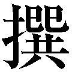 組が京都の「治安警察」的な仕事にたずさわったとき、その刀法に突きが多用されたのも、そこに理由がある。
相手のペースに引き込まれた状況では、その心臓を突くような気迫に満ちた反撃が、しばしば局面の打開につながるものである。
六十 「守り」と「攻め」とを同時に行う
一 かつとつと 云 事 喝 咄 と云は、 何 れも、 我 打 かけ、敵をおつこむ時、敵また打かへす様なる所、下より敵を突く様にあげて、 返 しにて 打 事、何れも早き 拍 子 を 以 て、喝咄と 打 、 喝 と 突 あげ、 咄 と 打 心也。 此 拍子、 何 時 も 打 合 の内には、 専 ら 出 合 事なり。喝咄のしやう、きつさきあぐる心にして、敵を 突 と思ひ、あぐると一度に打拍子、 能 く稽古して、吟味 有 べき事也。「 喝 咄 」について── 。「喝咄」とは、どのようなときも我が打って出て、敵を追い込んだのに対して、打ち返してきたとき、下から敵を突き上げ、その返しの太刀筋で打つことである。いずれの場合も拍子を早くし、「喝」「咄」と打つ感じにする。「喝」と突き上げ、「咄」と打つものである。この拍子は、打ち合いの中でいつも体験するものだ。「喝咄」の法は、 剣 先 を上げる心持ちで、敵を突くようにして、上げると同時に打つ。この拍子をよく稽古して、呑み込んでもらいたい。
これはまた、何という風変わりな造語であろう。相手が反撃してきたときは、カッと突き上げ、同時にトッと打て、というのだが、剣道に触れたことのない方にも、何となく感じはつかめるのではなかろうか。
その 眼 目 は、防御と攻撃とを同時に行う点にある。
個人も組織も、「守り」がおのずから「攻め」となり、「攻め」が同時に「守り」となっているときは、絶好調のときと知るべきである。
六十一 相手の意見を軽くかわして 嚙み合う状況をつくる
一 はりうけと 云 事 はりうけと云は、敵と 打 合 時、とたんとたんと云ふ拍子になるに、敵の 打 所を、 我 太刀にてはり 合 せ打也。はり合する心は、さのみきつくはるに 非 ず、 亦 うくるに非ず、敵の打太刀に応じて、打太刀をはりて、はるより早く敵を打事也。はるにて 先 をとり、うつにて先をとる所 肝 要 也。はる拍子 能 合へば、敵 何 と強く 打 ても、少しはる心有れば、太刀 先 の 落 る事に非ず。 能 習 得 て吟味 有 べし。「張り受け」について── 。「張り受け」とは、打ち合いの拍子がドタドタとして 嚙 み合わないとき、敵の打つ太刀に、自分の太刀を張って合わせて打つことである。張って合わせるその心持ちは、むやみに強く張るのではなく、さりとて受け一方になるのでもなく、敵の打つ太刀に対応してこれを張り、張るより早く、敵を打つようにする。張るにも、打つにも、 先 手 を取ることが大事である。この張る拍子がぴったりと合えば、どのように強い打ちであっても、少し張るばかりで、自分の太刀の先が落ちるようなことはない。十分に習得して呑み込むべきところである。
どうしても 嚙 み合わない人間が、世にはいるものである。いわゆる 相 性 が良くない人だ。しかし、そうでない相手とも、なぜか会話が 嚙 み合わないことがある。
それが会議や、ディスカッションの場でのことになると、効率が上がらない原因ともなり、互いに 消 耗 してしまことになりかねない。武蔵の言葉を借りると、「とたんとたん」といった、 悪 しきリズムの中では、まとまるものもまとまらない 仕 儀 となってしまう。
言葉による「張り受け」が生きるのは、たとえば、このような状況であろう。それは相手の意見を否定するのではなく、軽くかわすこと、と解していい。そうして、相互にとって中心となるテーマに向かって、議論の歯車を 嚙 み合わせていくことだ。
六十二 追い崩してノルマを達成する
一 多 敵 の 位 の事 多敵の位と云ふは、 一 身 にして 大 勢 と戦ふ時の事也。 我 刀、脇差をぬきて、左右へ広く、太刀を横にすてゝ 構 る也。敵は 四 方 よりかゝる 共 、一方へおひまはす心也。敵かゝる 位 、前後を 見 分 て、先へ進む者に早くゆき合ひ、 大 きに目を 付 て、敵 打 出 すくらゐを得て、右の太刀も左の太刀も、一度にふりちがへて、 待 事 悪 し。早く両脇の位に構へ、敵の 出 たる所を強く 切 込 み、おつくづして、 其 儘 又敵の出たる 方 へかゝり、ふりくづす心也。いかにもして、敵をひとへに、うをつなぎにおいなす心にしかけて、敵のかさなると見えば、其儘 間 をすかさず、強くはらひこむべし。敵あいこむ所、ひたと 追 まはしぬれば、はかのゆきがたし。又敵の 出 るかた と思へば、 待 心有りて、はかゆきがたし。敵の拍子をうけて、くづるゝ所を知り、 勝 事也。 折 々 相手を 余 多 よせ、 追 込 付 て、 其 心 を得れば、一人の敵も、十、二十の敵も、心やすき事也。 能 稽古して吟味 有 べき也。「 多 敵 の 位 」について── 。「多敵の位」とは、自分一人で大勢の敵と戦うときの教えである。自分の刀と脇差の両刀を抜き、左右に広げて持ち、両脇に捨てるように構えて、 敵 勢 が四方から攻めかかってくるとも、その 一 角 を 追 撃 する心づもりをすること。このとき敵中における前後の位置関係を見分けて、先にかかってくる者に対して、早く対応すること。さらに、敵全体の動きを大局的にとらえつつ、その攻めに応じて、左右の太刀を同時に振り違えていくことだ。（脱文アリカ）多敵には、待ちの体勢に入ることがよくないのである。早く両脇に構えるや、敵勢より出ているところへ、強く切り込み、追い崩しては、そのまま、また、出ているところに攻めかかって、これを振り回して崩すことだ。何としても敵をひとかたまりの 魚 群 のごとくに追い込むように仕掛けて、敵勢が重なり合ったと見るや、 間 を置かず、すかさず、そのままの体勢で、強く踏み払い込むこと。敵の密集しているところへ、真正面から突進して追い回すのは、効率がよくないし、どこが出ているかということをさがすようでは、待ちの心持ちになって、これも効果があまり期待できない。敵の動きの拍子を把握し、体勢が崩れたところを見て取って、勝つのである。時々、多くの相手を集めて、追い込む法に 習 熟 してコツがわかれば、十人、二十人の敵も、一人の敵を相手にするときのように、心を安んじることができるものだ。稽古を積んで、このことを確かめてもらいたい。
たとえば、かの大老 井 伊 直 弼 を襲撃した 水 戸 浪 士 の一人、 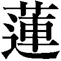 田 市 五 郎 は、 自 訴 してのちに記した『 憂 国 筆 記 』に、こんなことを書き残している。
──刀を抜きてからは 間 合 も 確 に 不知 、眼はほのくら（仄暗）く心はむちう（夢中）なり、試合稽古とは 又 一段格別なり。
いざ 抜 刀 するや、眼前が暗くなり、夢でも見ているような心持ちになった彼は、味方の増田金八という者と、知らぬうちに戦っていたという。この急襲の最中には、いわゆる同士討ちで負傷する者が多かったのである。道場での試合稽古と実際の切り合いとは、まったく次元を異にする、という 田の 述 懐 は、リアリティが感じられる。
勇猛なことで名を鳴らした 山 中 鹿 介 は、合戦の場に 躍 り込んだ当初は眼の前が真っ暗になるのが常だった、といったという。
彼 我 ともに殺傷し合う武器をもってする戦闘の恐怖は、 筆 舌 に尽くし難いものなのであろう。まして一人で 多 敵 と 相 対 すときのそれは、いかばかりであろうか。
佐々木小次郎との「巌流島の勝負」とともに、武蔵の事跡として伝えられる「 一 乗 寺 下 り 松 の決闘」は、京都の兵法家の名門・吉岡家の一門という多数の敵を武蔵一人で相手にした戦闘で、井上 雄 彦 氏の漫画『バガボンド』におけるその 凄 絶 な描写が、ひときわ印象深い。この「多敵の位」は、 机 上 の 空 論 ではなく、武蔵によって実戦されたことを知るのだ。
ここに述べられている「多敵」を、たとえば仕事上に 山 積 する問題、達成することが強く求められているノルマと置き換えると、大変示唆に富む教えをそこに読み取ることができる。
「待ち」の体勢に入らないこと。差し迫ったことから着手して、 片 っ 端 からこれを「追い崩す」ような気迫をもって対処することなど、学ぶことはすこぶる多い。
六十三 取って置きの手段は秘しておく
一 打 あいの 利 の事 此 打あいの利と 云 事にて、兵法、太刀にての 勝 利 を 弁 ふる所也。こまかに 書 しるすに 非 ず。 能 稽古有りて、 勝 所を知るべきもの也。 大 形 兵法の 実 の道をあらはす太刀也。 口 伝一 一ツの 打 と 云 事 此 一ツの打と云心を 以 て、 慥 に 勝 所を得る事也。兵法 能 学ばざれば、心得がたし。 此 儀 能 鍛錬すれば、兵法心の 儘 になつて、思ふ儘に勝 道 也。 能 々 稽古すべし。
一 直 通 の 位 と 云 事 直通の心、二刀一流の実の道をうけて、伝ふる所也。 能 々 鍛錬して、 此 兵法に身を 為 す事 肝 要 なり。 口 伝
「打ち合いの利」ということ── 。この「打ち合いの利」は、兵法の上で太刀をもって勝つ道理を 自 得 することをいうが、詳細に書き記すことはできない。とにかく稽古をよくして、勝利の理を知らねばならない。これはそもそも兵法の真実の道をあらわす太刀なのだが、 口 伝 によるほかはない。次に、 「一つの打ち」ということ── 。この「一つの打ち」の精神には、必勝を得ることがこめられているのである。これを鍛錬するならば、兵法に自在を得て、思うように勝利をおさめることができる。この道理を習得すべく稽古せよ。おわりに、 「 直 通 の 位 」について── 。この「直通」の心こそは、わが二刀一流（二天一流）の真実の 境 に達したあかつきに、伝授するものである。
鍛錬に鍛錬を重ねて、この兵法と一体となることが大事となる。これも口伝によるほかない。
「打ち合いの利」「一つの打ち」「 直 通 の位」の三つの理について、武蔵は具体的には言及していない。
武術には奥義などというものはなく、それを売り物にするのは間違っている、という考えを持っていた武蔵にしては、意外であるが、この三カ条は言葉にあらわすと、かえって人を迷わせかねない 深 重 の剣理が秘められているのだろうか。
── 秘 すれば 花 なり 秘せずば花なるべからず
とは、 世 阿 弥 の『 風 姿 花 伝 』（花伝書）の中でも、殊に有名な言葉である。
能において、観客に感動を与える 芸 態 を「花」という。その花は、内に深く秘して、 表 にあらわさぬことによってのみ「花」たり得る、と世阿弥はいい、そして、これは兵法の道にも通じることだ、とも述べている。
いわゆる「秘剣」は、ひとたびこれを 衆 目 にさらせば、秘剣ではなくなる。それゆえに、兵法者はここ一番の大事の勝負にしか、それを遣うことはなかったのである。
武蔵がここに掲げた三カ条の教えは、その奥深い剣理ゆえに、二天一流の高度の術理の修行が成就した者でないと、 到 底 、理解し難いものであった。同時に、こればかりは秘しておかねばならなかった。
「 口 伝 」と記したのは、そういうことからであろう。
世阿弥のいう「花」、武蔵がその詳細を述べていない剣は、仕事、人生にあてはめると、取って置きの手段、「 伝 家 の 宝 刀 」というべきメソッドのようなものだ。
人には、一つでもそれを獲得する日々の努力が求められるといえよう。
六十四 今日は昨日の自分に勝つ
右 書 付 る所、一流の剣術、 大 形 此 巻 に記し 置 事也。兵法、太刀を 取 て、人に 勝 事を覚ゆるは、 先 五ツの 表 を 以 て、 五 方 の 構 を知り、太刀の道を覚えて、 惣 体 自由 になり、心のきゝ 出 て、道の拍子を知り、おのれと太刀も手さへて、身も足も、心の 儘 にほどけたる時に 随 ひ、一人に勝ち、二人に勝ち、兵法の 善 悪 を知る程になり、 此 一書の内を一ヶ条 と稽古して、敵と戦ひ、 次 第 と道の利を得て、 不断 心に 罹 、いそぐ心なくして、 折 々 手に触れては徳を覚え、 何 れの人 共 打 合 、其心を知つて、千里の道も、 一 足 づつ運ぶなり。 緩 々 と思ひ、此法を行ふ事、武士の 役 也と心得て、今日は昨日の我に勝ち、あすは 下 手 に勝ち、後は 上 手 に 勝 と思ひ、此 書 物 の如くにして、少しも脇の道へ心のゆかざる様に思ふべし。 縦 ひ 何 程 の敵に 打 勝 ても、習ひに 背 く事に 於 ては、 実 の道に 有 べからず。 此 利 、心にうかびては、 一 身 を 以 て、数十人にも 勝 心の 弁 え 有 べし。 然 る上は、剣術の智力にて、 大 分 一 分 の兵法をも 得 道 すべし。千日の稽古を 鍛 とし、万日の稽古を 錬 とす。 能 々 吟味 有 べきもの也。以上、この巻には、わが一流の剣術について、大体のことを書き記しておいた。兵法において、太刀を取って人に勝つことを身につけるには、まずは「五つの 表 の次第」によって、「 五 方 の構え」と「太刀の道」を覚えることだ。こうして全身がこなれて動きがやわらかになり、心の働きが 臨 機 応 変 になったところで、「拍子」というものを会得できれば、自然と太刀も手の内も 冴えて、身も足も、思うがままに自由自在に働くこととなる。こうなれば、一人、二人と、勝ちを重ねるうちに、兵法の用い方の 善 し 悪 しも、 得 心 できる。この巻の条々をひとつひとつ稽古し、実際の戦いの中でこれを行い、しだいに兵法の理を会得していくことだ。このことを不断に念じて、上達を急がずに、折々は兵法の徳というものを手の感触で確かめつつ、相手を選ばずに打ち合う中で、その教えの心を実感しながら、長い修行の道程を、 歩 一 歩 と足を運んでいくのである。心急ぐことなく、この兵法を修行していくことは、武士としての役目と心得て、「今日は昨日の我に勝つ」「明日は下手な相手に勝つのであれば、その後には上手な相手に勝ってみせる」といって聞かせよ。そして、この書の教えのとおりにして、少しもそれから横道に 逸 れないようにしなければならない。たとえどのような敵に打ち勝つことができたとしても、流儀の教えに 背 く勝ち方では、真実の道とはいえないのである。この理にめざめたならば、 一 身 をもって数十人の相手に勝つ道が開けるに相違ない。その上には、この剣術の知恵の力によって、一対一の戦いのみならず、合戦にも通じる兵法の道を、体得できるであろう。千日の稽古を「鍛」とし、万日の稽古を「錬」とする、鍛錬道をひたむきに生きよ。このことを、自身で存分に確かめてもらいたいのである。
「水の巻」の 総 括 であるが、中に書かれている三つの教えは、とりわけ現代人の働き方、生き方に活かしたいものだ。
──急ぐ心なく、千里の道を一足ずつ運ぶこと
──今日は、昨日の自分に勝つこと
── 千 日 の稽古を『 鍛 』とし、 万 日 の稽古を『 錬 』とすること
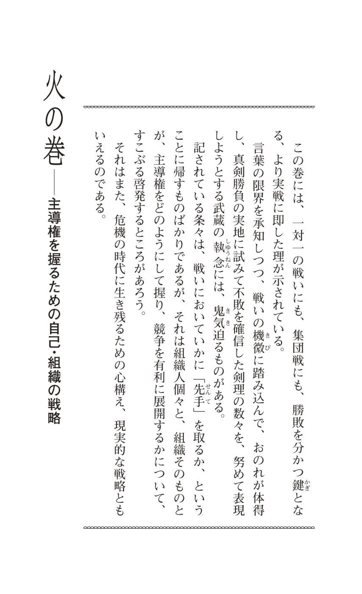
六十五 勝つことにはダイナミズムが求められる
二刀一流の兵法、 戦 の事を、 火 に思ひとつて、 戦 勝 負 の事を 火 の巻として、 此 巻 に 書 顕 す也。 先 世間の 人 毎 に、兵法の利をちひさく思ひなして、 或 は 指 先 にて、手くび 五 寸 、 三 寸 の利を知り、或は 扇 を 取 て、ひぢより 先 の 先 後 の 勝 を 弁 へ、又はしないなどにて、わづかのはやき利を覚え、手をきかせ習ひ、足をきかせ習ひ、 少 の利の早き所を 専 とする事也。 我 兵法に 於 て、数度の勝負に一命をかけて 打 合 、 生 死 二ツの利をわけ、刀の道をおぼえ、敵の 打 太刀の強弱を知り、刀のはむねの道を弁へ、敵を 打 果 所の鍛錬を得るに、ちひさき事、弱き事、思ひよらざる所也。 殊 に 六 具 かためてなどの利に、ちひさき事思ひ 出 る事に 非 ず、 更 は命をばかりの打合に於て、一人して五人、十人 共 戦ひ、其 勝 道 を 慥 に知る事、我道の兵法也。 然 るによつて、一人して十人に勝ち、千人を 以 て万人に勝つ道理、何の 差 別 有 んや。 能 々 吟味 有 べし。私の二刀一流における実戦のことを、「 火 」になぞらえ、その勝負の 要 諦 を、この「 火 の巻」に書くことにする。世間一般の兵法者は、兵法というものを 小 手 先 の技術のように思いなしているのである。あるいは指先の具合による手首の五寸、三寸の差を知るとか、あるいは 扇 子 を稽古具として、 肱 から 先 の 捌 きで 先 手 と 後 手 の 勝 味 を 弁 えるとか、また「 袋 撓 」（ 革 の袋に 割 竹 を仕込んだ稽古用の具）で 剣 速 のわずかな差を習得するとか、手と足とを効果的に使うことを習うなど、速度を競う器用な技を身につけることに、 汲 々 としている。この私の兵法においては、こんなことは思いもよらぬことだ。幾度の勝負にも、一命をかけて切り合い、それによって生と死との 分 れを 明 らめ、刀の働きを覚え、敵の打つ太刀の弱点と 強 味 とを知り、正しい 太 刀 筋 を弁えて、敵を討ち果たす鍛錬を体得するものであるから、小手先の技や、 弱 々 しい法など、論外なのである。殊に 六 具 （ 甲 冑 に 付 帯 する六種の武具）に固めての戦場の兵法（ 介 者 剣 法 ）では、このような 末 技 にこだわることなど、思いも及ばないことだ。まして、命がけの切り合いを、一人で五人、十人を相手にして戦い、必勝を期すことを、私の兵法は 眼 目 としているのである。だから、この点で一人対十人の戦いも、千人対万人の戦いも、その勝利の理は、何の差別があろう。よく考えてもらいたいことだ。
宮本武蔵という 稀 代 の真剣勝負師は、たびたび述べてきたように、一対一の勝負に勝ちをおさめるための兵法の知恵が、そのまま集団を動かして合戦に勝利する知恵に 通 底 するという、強固な信念をもっていた。
この「火の巻」は、「水の巻」からさらに個人戦の実戦的兵法に立ち入るとともに、集団戦の兵法にそれを生かし得る、という確信をもって書き進められている。
そういうことから、彼は 瑣 末 な技術にとらわれた和平の世の兵法を、 唾 棄 してはばからないのである。それは一剣もって 生 死 を 分 つ 底 の対決に用いるにはあまりにも 乖 離 した、弱すぎる兵法でしかない、と武蔵は断じている。そして、かかる小器用な兵法のノウハウが、ついに合戦のそれとして通用しないのは 自 明 の理である、と主張するのだ。
要は、兵法とは人間としてのダイナミックな道の一つだ、という信念の上に彼は立っている。だから、相手に打ち勝つ、すなわち切り倒すのに何ら役に立たないスキルの習得にかまけるのは、真に馬鹿げたことというほかないのである。勝つことには、組織であれ、個人であれ、常にダイナミズムが求められることを知っておくべきなのだろう。
六十六 テーマを設けて日々おのれを磨く
去 ながら、 常 々 の稽古の時、 千 人 万 人 を集め、 此 道 し習ふ事、 成 事に 非 ず。 独 太刀を 取 ても、其 敵 々 の 智 略 をはかり、敵の強弱、手だてを知り、兵法の 智 徳 を 以 て、 万 人 に 勝 所を 極 め、 此 道 の達者となり、 我 兵法の 直 道 、世界に 於 て誰か得ん、又 何 れか極めんと、 慥 に思ひ取つて、 朝 鍛 夕 錬 して、 磨 きおほせて後、 独 自由を 得 、自ら 奇 特 を得、 通 力 不思議 有 所、 是 兵として法をおこのふ 息 也。しかしながら、日常の稽古では、千人、万人の人間を集めて、述べたような兵法を習練することはできないのだから、独り太刀を取って、敵それぞれの 智 略 を 推 し 量 り、弱点と強味、その手段を知り、兵法の智恵と徳をもって、 万 人 に勝つことを探求し、この道の達者といわれるまでになることだ。そして、「わが兵法の正しき道を、世界の人の誰が知ろうぞ。何者がこれを極め得ようぞ」と確信し、朝に夕に鍛錬し、おのれを 錬 磨 すること。そうして後に、独り自由自在の 剣 境 を会得し、そこから不思議の働き、神妙な力を感得すること。これが武士たる者の兵法修行の心意気である。
武蔵は、「 大 分 の兵法」の知恵が、「 一 分 の兵法」の鍛錬によって体得できる、と 主 唱 するのであるが、それは孤独な修行によるほかはない、と述べる。
しかも、大小の敵を 仮 想 して、眼前のその「敵」を相手に工夫を 凝 らす、真実をともなう修行でなければならない。
ただ、 漫 然 と太刀を振るのでは、いくら時間をかけても兵法の知恵を身につけるには至らないのだ。
つまりはテーマをそのつど自分に課して、日々、朝に夕に、おのれを磨いていくことのみがあるばかりなのである。
その 錬 磨 は、人に見せるものでもなければ、人の目を気にするものでもない。これを積み重ねていけば必ず道を極めることができる、という自信のもとに、「かくれたる真実の努力」をもってする、厳しい 営 みだ。
個人も、組織も、この営みなくして、成功はあり得ないのである。
六十七 相手を不利な条件のもとに導く
一 場 の 次 第 と 云 事 場の 位 を 見 分 る所、場に 於 て日をおふと云事 有 、日をうしろになして構ふる也。 若 所により、日をうしろにする事ならざる時は、右のわきへ日をなす様にすべし。座敷にても、あかりをうしろ、右脇となす事 同 前 也。うしろの場、つまらざる様に、左の場をくつろげ、右の脇の場を詰めて 構 度 事也。 夜 るにても、敵の見ゆる所にては、火をうしろにおひ、あかりを右脇にする事同前と心得て、構ふべきもの也。敵を見おろすと 云 て、少しも高き所に構ふる様に 心 得 べし。座敷にては、 上 座 を高き所と思ふべし。 扨 、 戦 になりて、敵を 追 廻 す事、 我 左の方へ追廻す心、 難 所 を敵のうしろにさせ、 何 れにても、難所へ 追 懸 る事 肝 要 也。難所は敵に場を見せずと云ひて、敵に顔をふらせず、油断なくせめ 詰 る心也。座敷にても、 敷 居 、 鴨 居 、 戸 障 子 、 椽 など、 又 柱などの方へ追詰るにも、場を見せずと云事同前也。何れも敵を追懸る 方 、足場のわるき所、又は脇にかまひの 有 所、何れも場の徳を用ひて、場の 勝 を得ると云ふ心 専 にして、 能 々 吟味し鍛錬有るべきもの也。「 場 の 次 第 」ということについて── 。その場の 位 置 取 りの利と不利とを見分けることに、太陽を背にするという教えがある。太陽が 後 背 にあるように構えるのである。もし場所によって日を背にできぬときは、自分の 右 脇 の方向に太陽があるように位置取りせよ。座敷の中では、同じように、 灯 りを背にするか、右脇にして座を占めることだ。その際、後方の空間が詰まらないように、また、わが左側も広く開けておき、右側は場所が詰まっているように位置取りしたいものだ。夜間も、敵が視界に入る場では、火や灯りを後背、また、右脇に配すように心得て構えるべきである。「敵を見下ろす」という教えもある。少しでも敵より高い場所に位置を占めて構えよというのである。座敷ならば、 上 座 がその 高 所 と心得ること。そうして、いざ戦いともなれば、敵を自分の左方向に追い回す。また、悪条件の場所が敵の後方にあるように、追い込むことが大事だ。 難 所 に追い詰めたら、敵が自身の位置を認識できないように、その顔を振り向かせず、油断なく、激しく迫ることである。座敷の中の戦いでは、敷居、鴨居、戸障子、縁側など、また、柱などの方向へ追い詰めるにも、同じように、敵が自身の位置を把握できないようにせよ。どのような状況でも、敵を足場の悪い所、障害物のある所へと追いかけ、場所の 利 徳 を生かして勝ちを得ることが大事であることを呑み込んで、鍛錬してもらいたい。
「 日 輪 後 背 の伝」といって、敵と相対したときは、太陽を背にして 我 身 の働きが見て取られにくいように位置取りするのは、勝負の鉄則である。それができない場合は、右脇に日を負うのは、概して右手の太刀の働きを重視するからであって、それを見えにくくするためだ。座敷の中での切り合いでも、 灯 りを太陽に 擬 して、そのように場を取るものである。
そのほかに述べられていることは、みな、敵を我より不利な場、難所にあらしめて、その太刀の働きに 難 渋 する条件に立たせるための教えである。
勝負は、これを約束したときから、すでに始まっている。相手を劣勢に導き、同時に自分を優位に立たせるための工夫、 巧 緻 な戦略が兵法には求められるのは、当然のことである。
あらゆる戦い、競い合いに勝ちをおさめるための 常 套 手段の一つが、これである。
六十八 攻勢の中にも相手に退路を開いておく
一 三ツの 先 と 云 事 三ツの先、一ツは 我 方 より敵へかゝるせん、けんの 先 と云ふ也。又一ツは敵より我方へかゝる時の先、是はたいの先と云也。又一ツは我もかゝり、敵もかゝりあふ時の先、 体 々 の先と云、 是 三ツの先也。 何 れの戦ひ 始 にも、 此 三ツの先より 外 はなし。先の次第を 以 て、 勝 事を 得 るものなれば、先と云事、兵法の第一也。此先の 子 細 、 様 々 有りといへ 共 、其時の 理 を先とし、敵の心を 見 、我兵法の智恵を以て、勝事なれば、こまやかに 書 分 る事に 非 ず。第一、 懸 の先、 我 かゝらんと思ふ時、静かにして 居 、 俄 かにはやくかゝる先、うへを強くはやくして、 底 を残す心の先、又 我 心をいかにも強くして、足は常の足に 少 はやく、敵のわきへよると早くもみたつる先、又心をはなつて、 初 中 後 、同じ事に敵をひしぐ心にて、底まで強き心に 勝 、 是 何れも懸の先也。「三つの 先 」について── 。 先 手 を取るのに三つの法がある。 ① 懸 の 先 （自分から敵にかかっていくときの先手の取り方）。 ② 待 の先（敵から自分の方へかかりくるときの先手の取り方）。 ③ 体 々 の先（自分もかかり、敵もかかってくるときの先手の取り方）。以上が「三つの先」の教えである。どのような戦いもそうだが、戦いの初めに先手を取る法は、以上の三つのほかにはない。先手を取ることができれば、すなわち勝ちを得ることになるのだから、「先」は、兵法の第一の教えといってもよい。それについては、様々なこまごまとした教えがあるけれども、その時々の理に 適 った「先」をもって、わが兵法の智恵と徳を生かし、勝つもので、細やかにここに述べることはできない。ただ、第一の「懸の先」についていっておくと、これは我からかかろうとするとき、 ① 静止の状態から、急に速くかかっていく先手の取り方。 ② 身体の働きを強く、速くして、心は残しておく先手の取り方。 ③ 心 気 を強くし、ふだんの 足 捌 きより少し速くして、敵の至近距離に寄るや否や、激しく攻め立てる先手の取り方。 ④ 心を迷いから解き放って、最初から最後まで徹底的に敵を圧倒するつもりで、心気を充実させて勝つ先手の取り方。これらはいずれも「懸の先」ということになる。
「 先 」、すなわち先手を取るとは、いいかえれば、イニシアチブをとることにほかならない。「 先 んずれば人を制す」で、囲碁や将棋などの勝負事では、先手を取るか否かが勝敗の分かれ目となる。
「先」には三つよりほかにはない、というのが武蔵の考えだが、その一つが「 懸 の先」だ。懸は「 懸 る」、いいかえれば「攻める」ということである。
防ぐ、受けるということを捨てて、攻めて先手を取るもので、その技法について、訳文にあるように、四つのことが示唆してあるが、この中で「 底 を残す」、すなわち「心を残す」という教えには、注意を要す。
これは身も心も攻め 一 辺 倒 になることを、 戒 めているのだ。「 懸 中 待 」といって、激しい攻撃の中にも 防 御 、守りの心を残しておくこと。それは『 孫 子 』の次の言葉に通じる。
── 囲 師 には必ず 闕 き、 窮 寇 には迫ること 勿 れ
包囲した敵軍に対しては、必ず逃げ口を開けておき、進退きわまった敵を追い詰め過ぎてはならない、という教えである。そうでないと、敵は決死の反撃に出るから、味方が危険な状況に 陥 ることがあるからだ。
先手を取ることは、何事においても大切なことだが、一方的に攻勢に出る中にも、相手に 退 路 を開いておく心を残しておかないと、ダメージを受けかねないのである。企業間の競争、組織内の出世競争にも、このことはあてはまる。
六十九 商談には「後の先」が効果的である
第二、 待 の 先 、敵 我 方 へかゝりくる時、少しもかまはず、よわき様に見せて、敵近くなつて、づんとつよくはなれて、 飛 付 様に見せて、敵のたるみを見て、 直 に強く 勝 事、 是 一ツの先、又敵かゝりくる時、我も 猶 強くなつて出る時、敵のかゝる拍子のかはる 間 をうけ、 其 儘 勝 を得る事、 是 待の先の 理 也。第二の「 待 の 先 」について述べる。これは ① 敵が我にかかってくるとき、それには少しも構うことなく、表面は 弱 敵 と見せつつ、近く引きつけるや否や、「づん」と強く出て、飛びつくように見せ、それに敵がたじろぐのを見て取って、すぐに強く勝つ先手の取り方。 ② 敵かかりくるところ、自分の方もそれ以上に強く出るとき、敵の働く拍子の変化を見受けるとともに、そのまま勝ちに結びつける先手の取り方。こういったところが「待の先」の理だ。
殊に相撲の 立 合 では、これを「 後 の 先 」といっている。ここで興味深いのは、「よわき 様 に見せて」という一語である。
兵法では 虚 実 （かけひき）が重んじられる。おのれの身体と心の働きをもってする、かけひきの数々の中には、勝つためには「あざむく」ことも含まれているのであって、自分を弱そうに見せて敵に攻めさせ、一転して、急激に攻勢に出て、それに敵が 動 転 するところを 衝 くという法もあるのだ。これは 卑 怯 とか、あざといとかいう次元のことではなく、兵法にはそういう一面のあることを、認識する必要がある。
この「待の先」は、殊に商談や取引のうえで効果的で、成果を生むことが多い。
七十 相気をはずして主導権を握る
第三、 体 々 の 先 、敵はやくかゝるには、 我 静かに強くかゝり、敵近くなつて、づんと思ひきる身にして、敵のゆとりの見ゆる時、 直 に強く 勝 、又敵静かにかゝる時、 我 身 うきやかに、 少 はやくかゝりて、敵近くなりて、ひともみもみ、敵の 色 に 随 て、強く 勝 事、 是 体々の先也。 此 儀 濃 に 云 分 がたし。此 書 付 を 以 て、 大 形 工夫 有 べし。此三ツの先、時に随ひ、理に随ひ、いつにても、 我 方 よりかかる事には 非 るものなれ 共 、同じくは、我方よりかゝりて、敵をまはしたき事也。 何 れも先の事、兵法の 智 力 を以て、必ず勝事を得る心、 能 々 鍛錬 有 べし。第三の「 体 々 の 先 」について述べる。 ① 敵が速くかかるときは、我は静かに、しかし強くかかって、敵に接近するや、「づん」と、身体を捨てきるようにし、これに敵がたるんだと見たら、すぐに強く勝つ先手の取り方。 ② 敵が静かにかかりくるところ、 我 身 はぽっと浮き気味にして、少し速くかかり、敵の近くに寄って、一回攻めてから、その様子にしたがって強く勝つ先手の取り方。それが「体々の先」というものだ。このようなことは詳細には書き分けることはむずかしい。この記述から、大体のことを工夫してみてもらいたい。述べてきた「三つの先」は、時とその場の理にしたがうものであり、我方から常にかかるものではない。しかし、でき得るならば、我よりかかって、敵をあしらって勝ちたいものだ。いずれにしても「先」は、兵法の 知 力 をもって勝つ道に結びつくことであるから、これを十分に鍛錬しておくことだ。
豆 腐 を取り上げるには、やわらかい 掌 に取るのが、最も良い方法であろう。しかし、あえて 堅 い 箸 を使って取り上げるのが、兵法であり、剣術とされる。
どういうことかというと、これは「 相 気 をはずす」の理を、この道は勝負の鉄則としているからだ。
たとえば、「今日は、良いお天気ですね」と 挨 拶 されたとき、「良く晴れましたね」と応じるのが、相気。いきなり、「どちらへお出かけですか」と応じるのが、「相気をはずす」の一例である。
宮本武蔵をこよなく崇拝した江戸時代後期の剣客・ 千 葉 周 作 は、その 北 辰 一刀流の伝書に、「 松 風 の事」という教えのことを、次のように述べている。
「相気とは、たとえば松に風が吹き当たり、音を立てることをいう。剣術というものは、この相気をはずすことなしには、最善の勝ちをおさめることができない。弱きものに弱く、強きものに強く、石には石、 綿 には綿という具合に打ち合っては、はなはだ効率が悪いのである。敵が弱く打ってくるならば、我は強く応じ、強く打ち出してきたら、弱く対応することだ」
「 体 々 の 先 」とは、現代剣道にいう「 先 々 の 先 」のことだが、この先手の取り方の 要 諦 は、「相気をはずす」ことにある。
対人関係のうえで、いちはやく主導権を握って、こちらのペースに引き込むのに、これは有効な法といえる。
七十一 相手に有効に働くことを押さえ込む
一 枕 をおさふると 云 事 枕をおさふるとは、かしらをあげさせずと云ふ心也。兵法勝負の道に 限 つて、人に 我 身 をまはされて、あとにつく事 悪 し。いかにもして敵を自由にまはし 度 事也。 然 るによつて、敵も 左 様 に思ひ、我も其心あれ 共 、人のする事をうけがはずしては、 叶 がたく、兵法に、敵の 打 所をとめ、つく所をおさへ、くむ所をもぎはなしなどする事也。枕をおさふると云ふは、 我 実 の道を得て、敵にかゝりあふ時、敵 何 事 にても思ふきざしを、敵のせぬ内に見知りて、敵の 打 と 云 、うつのうの字のかしらをおさへて、 後 をさせざる心、枕をおさふる心也。たとへば、敵のかゝると 云 、かの字をおさへ、とぶと云、との字のかしらをおさへ、きると云、きの字のかしらをおさふる、 皆 以 て同じ心也。敵 我 にわざをなす事につけて、役にたゝざる事を敵にまかせ、役にたつ事をばおさへて、敵にさせぬ様にする所、兵法の 専 也。是も敵のする事をおさへん とする心、 後 手 也。 先 我は、何事にても道にまかせてわざをなす内に、敵もわざをせんと思ふかしらをおさへて、何事も役に 立 せず、敵をこなす所、是兵法の 達 者 、鍛錬の 故 也。枕をおさふる事、 能 々 吟味 有 べきなり。「枕を押さえる」ということ── 。 頭 を上げさせない、という心持ちをいう。兵法の勝負に限っては、他者に 我 身 を引き回されて 後 手 につくことは、よろしくない。いかにしても敵を自由に引き回したいものである。だから、敵も、我も、そういう心でいるのだが、相手の働きを察知することなしには、うまくはいかないものである。兵法は敵の打ちを 留 め、突きを押さえ、組み来るところを突き放したりするものである。「枕を押さえる」という教えは、わが兵法の真実の道に立って敵と攻め合うとき、敵の何らかの意図を、敵が 未 だ実行せぬうちに見て取り、敵が「打つ」と見れば、その 頭 字 の「う」を押さえ込んで、その後を封じることなのである。この「枕を押さえる」ことは、たとえば、敵の「かかる」の「か」、「飛ぶ」の「と」、「切る」の「き」というふうに、みな同じく、頭の文字を押さえる心づもりをいう。 彼 我 ともに技を出す局面では、有効に作用しないことは、敵の思い通りにさせるかわりに、有効なことは押さえて、敵にさせないようにするのが兵法の大事とされる。これも敵の働きを「押さえてみせる」というのでは、すなわち後手を引くことになるのであって、その前に自分は道にのっとって技を用いる中、敵も技を出さんとするその頭を押さえ、まったく何も有効には働かせないようにし、相手を引き回すことだ。兵法の達者の鍛錬により、このことができ得るようになるのである。「枕を押さえる」ということを、熟考してもらいたい。
「 先 」──先手を取ることは、実戦における勝敗の分かれ目となる、最も重要な教理であって、様々な攻防（ 懸 待 ）の技法、かけひきも、すべてはこの「先」を自分の手にするためのものといっても過言ではない。
それについて「三つの先」を説いた武蔵は、これより、「心の先」について述べるのだが、その第一が、「枕を押さえる」という教えである。
訳文の中の 眼 目 は、相手にとって有効ならざることは、相手の思いのままに、好き勝手にやらせること。しかし、相手にとって有効な働きは、頭からこれを押さえ込むことにある。押さえ込むときのその心づもりを、たとえば、相手が「切る」のその頭文字の「き」を押さえる、というふうに、感覚的に表現しているのである。
七十二 独力で「難所」を切り抜ける
一 とをこすと 云 事 渡 を 越 すと云は、たとへば、海を渡るに、 瀬 戸 と云所も 有 、又は 四 十 里 、五十里とも長き海を 越 所を、渡と云也。人間の世を渡るにも、 一 代 の内には、とをこすと云所、多かるべし。 船 路 にして、 其 との所を知り、船の 位 を知り、日なみを知りて、 友 船 は出さず 共 、其時の位をうけ、 或 はひらきの風にたより、或は 追 風 をも 受 、 若 し 風 替 りても、二里、三里は、ろかぢをもつても、港に 着 を心得て、船を 乗 とり、渡を越所也。其心を得て、人の世を渡るにも、一大事にかけて、渡を越と思ふ心 有 べし。兵法、 戦 のうちにも、とをこす事 肝 要 也。敵の位を 受 、 我 身 の達者を覚え、其 理 を 以 て、とをこす事、よき船頭の 海 路 を越と同じ。渡を 越 ては、 亦 心安き所也。とをこすと云事、敵によわみをつけ、我身も 先 になりて、 大 形 はや 勝 所也。大小の兵法の上にも、とをこすと云心 肝 要 也。 能 々 吟味 有 べし。「 渡 を 越 す」ということについて── 。「渡を越す」とは、たとえば、 瀬 戸 といった難所を越して海を渡ること、または、四十 海 里 （約七五キロメートル）、五十海里といった、困難をともなう長い行程を航海することをいう。人間が世を渡るにも、このような意味での危機を乗り越えねばならぬことが、多くあるに違いない。船路にいうその「渡」を受け止めて、わが船の位置、その日の 吉 凶 を知っておき、 友 船 （本船に伴っていく船）の 伴 走 がなくとも、その時々の状況を分析して、 横 風 、 追 風 などをたよりとし、もしも風の条件が悪化したら、二里や三里は 艪 と 舵 を使って、港に着くものと決意し、船を乗りこなして「渡」を越さねばならない。人生も、このような心づもりをして、今が一大事の場と心がけて、「渡」を越すぞ、と心に誓うべき時があるはずだ。兵法のうえでも、戦いの内には「渡」があり、これを越すことが求められるのである。すなわち、敵の力量を洞察し、自分の能力を認識して、その理に立って「渡」を越すのは、腕の良い船頭が航海するのと同じことだ。「渡」を越しさえすれば、そこには安息の 境 が待っているのである。兵法勝負でいえば、「渡」を越したことで、敵を劣勢に、自分を優勢に導くものであって、こうなれば大体は勝ったのも同然だ。一対一の勝負にも、合戦にも、「渡」を越すことは大切である。熟考してほしいものである。
『五輪書』の全体をとおして、武蔵が人生について述べたことで、異色の一条といえよう。
唐 突 だが、キノコの話である。地中の 菌 根 は、好条件のもとで発達をつづけると、ついにはキノコを作らずに 枯 死 してしまう。ある時点で、発達を 妨 げる条件が菌根に与えられないと、キノコはできないのだ。
この妨げる条件とは、航海でいえば難所であって、武蔵のいう「 渡 」である。人生行路にたとえると、逆境、スランプだ。人間は、生涯に幾度も「渡」にぶつかり、試練を与えられる。だが、これを越すこと、切り抜けていくことなくしては、 大 成 はあり得ないのである。
どうやって切り抜ければいいのか。自分の置かれている立場、その時々の状況を、客観的に認識し、周囲の条件を活かすこと。その条件が風のように変化しようとも、持てる力を使いきって、ともかくも独力で切り抜けるぞと、自身を 叱 咤 激 励 することが求められるのだ。
こうして「渡」を越すことができれば、その向こうには必ず「心安き所」──順境、チャンスが待ち受けているものである。
もちろん、戦いにおいて先手を取る一法として、航海と人生行路にたとえて、武蔵はこの教えを述べている。
競争社会に、難所にぶつかるのは 茶 飯 事 である。その難所を切り抜けることができれば、相手より主導権を握れる立場に至ることは間違いない。
ただし、独力で「渡」を越すという、強い決意がそこになければならないのはいうまでもない。
七十三 事実を掛け値なしに受け取って戦略を立てる
一 けいきを知ると 云 事 景 気 を 見 ると云は、 大 分 の兵法にして、敵の 栄 え 衰 へを知り、相手の 人 数 の心を知り、其 場 の 位 を受け、敵の景気を 能 見受け、 我 人数 何 としかけ、 此 兵法の理にて、 慥 に 勝 と云所をのみこみて、 先 の位を 知 て 戦 所也。又 一 分 の兵法も、敵のながれを 弁 へ、相手の 人 柄 を見うけ、人の強き弱き所を見付け、敵の 気 色 にちがふ事をしかけ、敵のめりかりを知り、其 間 の拍子を 能 知りて、 先 をしかくる所 肝 要 也。物事の景気と云事は、 我 智力強ければ、 必 見ゆる所也。兵法自由の身に 成 ては、敵の心を 能 計 て、 勝 道 多かるべき事也。工夫 有 べし。「景気を知る」ということについて── 。「景気」を見きわめるとは、集団対集団の兵法においては、敵軍の勢いの 盛 衰 、その 兵 数 の力を知り、その場における力量を受け止めて、敵のありさまをよく分析し、自軍の兵力をもって、何とか攻勢に出て、この兵法によれば必勝を期すことができる、と確信して、 先 手 を取って戦うことである。また、一対一の兵法でも、敵の流派を弁え、その人物 骨 柄 を分析して、弱点と強味に目を付け、敵の 意 表 を 衝 いて、その調子の 乙 甲 （音の高さを本来の音よりも微妙に低くしたり高くしたりすることで、特に尺八でいう）を見抜いて、 間 の拍子につけ入って先手を取ることが大事とされている。物事の「景気」は、自分の智恵の力が強くあれば、必ずこれを洞察できるものだ。兵法も、自由自在の境地に達すれば、敵の心をよく読み取ることにより、勝利の法が多くなるものである。この点、工夫してもらいたい。
──彼を知りて 己 を知れば、百戦して 殆 うからず。彼を知らずして己を知れば、一勝一負す。彼を知らず己を知らざれば、戦うごとに殆うし
前にも引いたが、これは中国の兵書『 孫 子 』の言葉である。
前条の「 渡 を越す」が「己を知る」ことを教えているのに対して、この条は「彼を知る」、すなわち 敵 情 視 察 の 要 を説いている。しかも、敵の「景気」（まことに今日的な言葉ではないか！）を知るその方法には、ファクト（事実）を分析してインプットするということまで含まれているらしい点に、合理的な兵法を追究した武蔵の 面 目 が 躍 如 としている。
事実とは動かしがたいものであるが、人はこれをまともに受け止めることに、 往 々 にして苦痛を覚えるものだ。
また、どこからどこまでが事実であるかを見きわめるのは、意外にむずかしいことなのである。人間は、自分の都合のいいように 妄 想 を働かせて、物事を見る傾向があるからだ。
相手の「景気」を知ることは、個人間の競争のみならず、組織間のそれにも、イニシアチブをとるために 必 須 のこととされるが、真の事実を見きわめ、掛け値なしに受け取ったうえで、戦略を立てたいものである。
七十四 心で踏みつけて先手必勝を期す
一 けんをふむと 云 事 剣をふむと云心は、兵法に 専 ら 用 る 儀 也。 先 大 きなる兵法にしては、弓、 鉄 炮 に 於 ても、敵 我 方 へ 打 かけ、何事にてもしかくる時、敵の弓、鉄炮にてもはなしかけて、 其 あとにかゝるによつて、又弓をつがひ、又鉄炮に 薬 をこみて、かゝりこむ時、こみ 入 がたし。弓、鉄炮にても、敵のはなつ内に、はやくかゝる心也。早くかゝれば、矢もつがひがたし。鉄炮も打得ざる心也。 物 毎 を敵のしかくると、 其 儘 其理を 受 て、敵のする事を 踏 付 て 勝 心也。又 一 分 の兵法も、敵の 打 出す太刀のあとへ 打 ては、とたん となりて、はかゆかざる所也。敵の打出す太刀は、足にてふみ 付 る心にして、打出す所をかち、二度目を、敵の打得ざる様にすべし。 踏 と云は、足には限るべからず。身にてもふみ、心にてもふみ、 勿 論 太刀にてもふみ付て、 二 の 目 を敵に 能 させざる様に心得べし。 是 則 物 毎 の 先 の心也。敵と一度にといひて、ゆきあたる心にてはなし、其儘あとに 付 心也。 能 々 吟味 有 べし。「 剣 を踏む」ということについて── 。兵法では「剣を踏む」ということを大変重視している。まず、合戦の兵法でいうと、次のようなことがいえる。敵勢が弓や鉄砲で様々に攻撃してくるときは、その襲撃の後に自軍が攻めても、敵は矢を 番 え（弓の 弦 に矢を当てること）、鉄砲に弾薬を込めてしまうから、攻め込もうとしても、むずかしくなる。弓、鉄砲に対しては、敵が襲撃を開始する前に、早く攻めかかること。そうすれば、敵は矢を番えることもならず、鉄砲も 空 鉄 砲 のままではないか。何にしても、敵の攻撃に対しては、当方はそのままの体勢から、兵法の理に立って、攻めを踏みつけて勝つという心づもりが要るのだ。また、一対一の兵法でも、敵の 打 突 の後に打ちを出しても、単調な攻めとなって、効率が良くないから、敵の打ち出す太刀を、足で踏みつける気迫をもって勝ち、敵の再度の打突を封じるようにしなければならない。足だけではなく、身体でも、心でも、もちろん、太刀のうえでも踏みつけて、二度目の攻撃をさせぬことだ。これがおしなべて、先手必勝の理なのである。敵の働きと同時にぶつかるのではなくて、働きの後にそのままの体勢で付いて攻めること。このことをよく呑み込んでもらいたい。
これは一言でいうと、相手の働きが 未 発 の段階に、その働きを「踏みつける」ごとく攻撃せよ、ということである。
合戦でも、一対一の勝負でも、しばしばそれは奇襲戦法というかたちを取るであろうが、その際に大切なことは、「踏みつける」という 烈 しい気迫である。
殊に「心で踏みつける」という教えは、様々な局面における先手必勝の 要 訣 といえる。
七十五 相手の「崩れ」に乗じて攻勢に出る
一 くづれを知ると 云 事 崩 と云事は、 物 毎 ある物也。其 家 のくづるゝ、 身 のくづるゝ、敵のくづるゝ事も、時のあたりて、拍子ちがひになりてくづるゝ所也。 大 分 の兵法にしても、敵のくづるゝ拍子を得て、其 間 をぬかさぬ様に 追 たつる事 肝 要 也。崩るる所のいきをぬかしては、たてかへす所 有 べし。又 一 分 の兵法にも、 戦 内 に、敵の拍子ちがひてくづれ目の 付 もの也。其ほどを油断すれば、又たちかへり、 新 敷 なりて、はかゆかざる所也。其くづれめに 付 、敵のかほたてなをさざる様に、 慥 に 追 かくる所肝要也。追かくるは 直 に強き心也。敵たてかへさざる様に 打 はなすもの也。打はなすと云事、 能 々 分別 有 べし。はなれざれば、しだるき心 有 。工夫すべきもの也。「崩れを知る」ということについて── 。「崩れ」ということは、何にでもあるものだ。一家が崩れる。身体が崩れる、そして、敵も時として拍子がはずれて崩れることがある。合戦の兵法においては、敵軍のその崩れる拍子に乗じて、 間 を置かぬように追撃することが大事である。崩れたとき、息をつかせては、敵軍は陣容を立て直してしまうであろう。一対一の兵法でも、戦いの最中に敵の拍子がちぐはぐになって、崩れを察することがあるものだ。このとき自分が油断すると、敵は立ち直って、新たに力を取り戻すから、攻めの効果が上がらないことになる。崩れた機をとらえて、相手の顔が向き直らないほどに、確実に追い詰めることが大切だ。この追撃は直線的に、しかも強く行うこと。敵が立ち直る機会を得ないうちに打ちはなす、つまり打って離れさせること。この「打ちはなす」ということを、よく弁えてもらいたい。敵が離れないでは、我はぐずついてしまうから、この点、工夫すべきである。
敵が攻勢をつづけていても、その過程にはたいてい歯車が乱れて 崩 壊 するきざしが、必ず一度か二度は見られるものである。敵にとっては敗北の伏線となる「崩れ」であり、自分にとっては、いわゆる 勝 機 である。
この勝機を 逸 しては、敵は息を吹き返して、体勢を立て直してしまう。そうなると、勝つ効率が甚だしく低下するのはいうまでもないことだから、そのゆとりを与えずに、崩れに乗じた攻めの一手に徹せよ、というのである。
兵法ならではの非情の教えだが、個人と組織の別なく、競争社会においては、ボクシングのラッシュ攻撃のような手段に出なければならぬ場合も多いことであろう。
七十六 相手の心理状態になって自分を見る
一 敵になると 云 事 敵になると云は、 我 身 を敵になり 替 て思ふべきと云所也。世の中を見るに、ぬすみなどして家の内へ 取 籠 る様なるものをも、敵を強く 思 なすもの也。敵になりて思へば、世の中の人を 皆 相手とし、にげこみて、せんかたなき心也。取籠るものは、 雉 子 也。 打 果 しに 入 る人は、 鷹 也。 能 々 工夫 有 べし。 大 きなる兵法にしても、敵といへば強く思ひて、大事にかくるもの也。よき 人 数 をもち、兵法の道理を 能 知り、敵に 勝 と云所を能うけては、 気 遣 すべき道に 非 ず。 一 分 の兵法も、敵になりて思ふべし。兵法 能 心得て、道理強く、其道 達 者 なるものに 於 ては、必ずまくると思ふ所也。 能 々 吟味すべし。「敵になる」ということについて── 。「敵になる」とは、自分の身を敵の身になり替えて、敵の心理に思いをはせることである。世の中を見ると、盗みなどを犯して家屋の中に閉じこもっているような者に対してさえ、強敵と思い込んでしまうものだ。ここで、敵の立場になってみよ。彼は世の中の人すべてを相手にまわして逃げ込み、どうにも進退きわまる心境にあるのだ。閉じこもった者は、たとえるならば 雉 であり、討ち取るために踏み込む側は、 鷹 のような立場なのだ。よくよく考えてもらいたい。合戦の兵法でも、敵軍をしたたかに思いなして、大事をとりがちになるものだが、 我 軍 の兵力が充実し、兵法の道を心得ていて、勝利の法を呑み込んでいるのであれば、心配には及ばないのである。一対一の兵法も、「敵になる」という教えを思い知っておくこと。兵法に通じ、剣理に明るく、この道の達者といえる人は、この理からはずれては、必ず負けを取るものと思うであろう。十分にこのことを理解してもらいたい。
「 位 負 け」という言葉がある。
相手の地位や品位、あるいはオーラ（霊気、雰囲気）に、 端 から圧倒されてしまうことをいうが、実は、相手を不当に買いかぶっている場合が多いのである。相手の心理になると、相手がこちらに対して威圧感を覚えていることに気づくものだ。
一方的な思い込みから、ただ圧倒されるばかりで、相手のペースに引き込まれるのは、 間 尺 に合わないことではないか。相手の心理状態になって自分を見てみよう。何も一方的に 圧 しつぶされる必要はないのである。
「 閾 を 跨 げば七人の敵あり」というが、その「敵」は何も人間とは限らない。次から次へと降りかかってくる難問難題、また、自分の実力では対応できないと思ってしまう仕事、地位といったこともあろう。
このようなことにも、「敵になる」という教えは通用するはずだ。
七十七 心を転じて膠着状態を打開する
一 四 手 をはなすと 云 事 四手をはなすとは、敵も我も同じ心にはりやう心になつては、 戦 のはかゆかざるもの也。はりやう心になると思はゞ、 其 儘 心をすてゝ、別の利にて 勝 事を知る也。 大 分 の兵法にしても、四手の心にあれば、 果 敢 ゆかず、ひとのそんする事也。はやく心をすてゝ、敵の思はざる利にて勝事 専 也。 一 分 の兵法にても、四手になると思はゞ、其儘心をかへて、敵の 位 を得て、 各 別 替 りたる利を 以 て 勝 を 弁 ふる事 肝 要 也。 能 々 分別すべし。「 四 手 をはなす」ということについて── 。「四手をはなす」とは、敵と我とが同じように張り合って、戦局が 膠 着 しているとき、そのまま心を転じて、別の利点を求めて勝つ理を知ることだ。合戦の兵法でも、四つに組み合い膠着していたままでは、効果が上がらず、味方の兵の損害を受けてしまうから、早く 転 心 して、敵の意表を 衝 いて勝つのを、もっぱらのこととしているのである。また、一対一の戦いにおける兵法でも、がっぷり四つになったと思ったときは、そこで心を変えて、敵の体勢を見て、一変した戦法に出て勝利を見出すことが大切である。この点、分別を十分にしておくべきである。
ここに述べられていることには、「あきらめる」ということが関わっている。がっぷり四つに組んだまま膠着している状態を打開するために、その四つの手をぱっと放す心持ちになるとき、そこに「あきらめる」という働きが介在するに違いない。
「あきらめる」といっても、ギブアップするという消極的な意味にあらず、物事の本質を明らめる、といった積極的な働きのことだ。
心を転じて、別の戦法に出るには、積極的に「あきらめる」ことが必要なのである。
七十八 言葉のフェイントで下心を見破る
一 かげをうごかすと 云 事 陰 を動かすと云は、敵の心の見えわかぬ時の事也。 大 分 の兵法にしても、 何 共 敵の 位 の見わけざる時は、 我 かたより強くしかくる様に見せて、敵の手だてを見る也。手だてを見ては、 各 別 の利にて 勝 事、やすき所也。又 一 分 の兵法にしても、敵うしろに太刀を構へ、脇に構へたる様なる時は、ふつと 打 んとすれば、敵思ふ心を太刀に 顕 す者也。顕れ知るゝに 於 ては、 其 儘 利をうけて、 慥 に 勝 を知るべきもの也。油断すれば拍子はぬくるもの也。 能 々 吟味 有 べし。「 陰 を動かす」ということについて── 。「陰を動かす」とは、敵の心の働きを見分けることができないときの教えである。合戦の兵法のうえでは、敵軍の作戦が把握できないとき、こちらから 力 攻 めに出るように見せて、敵勢の手の内を見て取ることをいう。手の内がわかれば、それに応じた攻略で勝利をおさめやすくなるものだ。また、一対一の勝負の兵法でも、敵が太刀を後方や脇に構えているとき、自分は不意の打ちを出すと、敵の心の働きが太刀の動きにあらわれるものである。あらわれたその動きにそのまま対応すれば、確実に勝ちを見出すものだ。そこで油断しては、 勝 機 を逸することになるから、この点、十分に心すべきである。
剣術の用語にいう「 陰 」とは、能にいう「 花 」（ 世 阿 弥 の言葉）に 近 似 する意味合いがある。すなわち、秘したる働きであって、殊に 杳 として表面にあらわれない心の働き、秘中の意図をいう。徳川将軍家の 御 流 儀 とされた 新 陰 流 の「陰」にも、そのような意味がこめられている。
この「陰」を刀法に具現化するために、諸流派は 太 刀 構 えその他に工夫を凝らすのだが、中には、武蔵がここに述べているように、太刀を後方、または脇に構えて、太刀 先 （ 剣 先 ）や、太刀を持つ 拳 を、相手の 目 付 からはずす（隠す）こともあった。太刀の働きを察知されないようにするものである。
一対一の戦いでは、このような構えの相手に対しては、 唐 突 な打ちを出すなどして、フェイントをかけると、相手の太刀の微妙な反応により、その意図、心の働きを見抜くことができる。すなわち、「陰を動かす」のである。合戦においては、あからさまに攻撃の体勢をとることが、そのフェイント（見せかけのプレー）となる。
日常生活では、何をたくらんでいるのか読み取れない人間と付き合わねばならないことが多い。太刀を言葉に置き換えて、「陰を動かす」ことで、その 下 心 を見破ることも必要なのだ。組織内の上下のコミュニケーションにも、これはあてはまる。
七十九 相手の意図の兆しを押さえて断念させる
一 かげをおさふると 云 事 影 をおさふると云は、敵のかたよりしかくる心の見えたる時の事也。 大 分 の兵法にしては、敵のわざをせんとする所をおさふると云ひて、 我 方 より其利をおさふる所を、敵に強く見すれば、強きにおされて、敵の心 替 る事也。我も心をちがへて、 空 なる心より、 先 をしかけて 勝 所也。 一 分 の兵法にしても、敵のおこる強き気ざしを、利の拍子を 以 てやめさせ、やみたる拍子に、 我 勝 利 をうけて、 先 をしかくるもの也。 能 々 工夫 有 べし。「 影 を押さえる」ということについて── 。「影を押さえる」とは、攻めかかる心を敵に見て取ったときの教えである。合戦の兵法では、敵軍が作戦を決行せんとするところを押さえることだ。それにはその作戦の成果を「押さえる」という体勢を、強く見せつけること。そうすると、敵はその強い体勢に 気 圧 されて、作戦変更へと動揺するから、自軍も違う策をとって、敵の 意 想 外 の方策をもって、先手を取って勝つのである。一対一の勝負でも、敵の働きの強い意図を、自分に有利な拍子をもってやめさせ、敵が断念したところを勝利の機ととらえ、先手を取ることだ。よく呑み込んでもらいたい。
物の後方の暗い（または隠れた）場所をいう「かげ」に、一般に「陰」という字を当てるのに対して、 日 月 や 灯 火 などの光、その光によってつくられる物の姿などでは、「影」の字が用いられる傾向がある。剣術では、相手の働きの 兆 しを、影ということが多い。
合戦でも、一対一の勝負でも、その兆しを制し、敵が動揺する機をとらえて先手を取れ、というのである。
殊に企業の競争では、相手のプロジェクトに対抗するときなどに、このようなことが有効に作用することが多い。
八十 「模倣」の心理を利用して自分のペースに引き込む
一 うつらかすと 云 事 移 らかすと云は、 物 毎 に 有 もの也。 或 はねむりなども移り、或はあくびなどのうつるもの也。時のうつるも 有 。 大 分 の兵法にして、敵うはきにして、ことをいそぐ心の見ゆる時は、少しも 夫 にかまはざる様にして、いかにもゆるりとなりて見すれば、敵も 我 事 に 受 て、きざしたるむ物なり。其うつりたると思ふ時、 我 方 より 空 の心にして、はやく強くしかけて、 勝 利 を得るもの也。 一 分 の兵法にしても、 我 身 も心もゆるりとして、敵のたるみの 間 をうけて、強く早くしかけて 勝 所 専 也。 亦 よわすると 云 て、 是 に似たる事 有 。一ツはたいくつの心、一ツはうかつく心、一ツはよわくなる心、 能 々 工夫 有 べし。「移らかす」ということについて── 。「移らかす」とは、よくあることだ、 眠 気 、 欠伸 が移ることもあれば、時間が移るということもある。合戦の兵法でいうと、敵軍が 浮 き 足 立 って攻め急ぐように見えたとき、自軍はいっこうにそれには構わず、いかにもゆったりとして様子を見せると、敵勢も自身のことのように受け止めて、攻めの気迫が 弛 緩 するものだから、その移らかされた機会をとらえて、自軍は 意 想 外 の攻撃を早く、強く仕掛けると、勝利をおさめることができる。一対一の勝負における兵法でも、こちらが身も心もゆったりと見せることで、敵が 弛 んだその 間 隙 に乗じて、早い、強い攻めに出て勝つことを大事なこととしている。また、「酔わせる」という教えもこれによく似ている。この法では、敵をだれさせる、落ち着かなくさせる、弱気にさせる、といったことを、よく工夫するべきである。
誰かが 欠伸 をすると、それにつられてこちらも欠伸が出る。誰かがトイレに行くと、こちらも尿意を覚えてしまう。このような心理のメカニズムを、「 模 倣 」と心理学ではいっている。
「模倣」のメカニズムは、精神分析学などでは、「攻撃者と自己との同一視による衝動」というふうに説明されるが、いずれにせよ、人間の深層心理の一つである「模倣」、あるいは「 同 調 」という作用は、安心感とどこかで関わっているらしい。
このような心理に武蔵がすでに着目し、のみならずこれを「移らかす」という兵法に取り込んだのは、驚くほかはない。
相手を自分のペースに引き込む、この高度の誘導作戦は、対人関係、組織同士の競合関係に様々なかたちで生かすことができよう。
八十一 正念場では相手を怒らせねばならぬ場合もある
一 むかつかすると 云 事 むかつかすると云は、 物 毎 に 有 。一ツにはきはどき心、二ツにはむりなる心、三ツには思はざる心、 能 吟味 有 べし。 大 分 の兵法にして、むかつかする事 肝 要 也。敵の思はざる所へ、いきどふしくしかけて、敵の心のきはまらざる内に、 我 利 を 以 て、 先 をしかけて 勝 事肝要也。又 一 分 の兵法にしても、はじめゆるりと見せて、 俄 に強くかゝり、敵の心のめりかり、 働 にしたがひ、いきをぬかさず、 其 儘 利をうけて 勝 を 弁 ふる事肝要なり。 能 々 吟味 有 べき也。「むかつかする」ということについて── 。「むかつかする」ということ、すなわち、相手にムッと腹を立てさせることは、よく見受けることだ。相手に「 危 うい」「もう無理だ」「何としたことだ」と思わせるところに、この教えをよく味わうべき点がある。合戦では、敵軍の 怒 気 を 煽 り立てて、想定外のところへ激しく攻撃を加え、敵勢の体勢が定まらぬうちに、自軍に有利なように先手を取って攻め勝つことが大切である。また、一対一の勝負に用いる兵法でも、初めはゆったりと見せておいて、急に強く攻めかかって、敵の心理の微妙なブレに応じて、息つく 間 も与えずに、そのまま勝利を確かにすることが大事だ。このことをよく呑み込んでもらいたい。
この「火の巻」の実戦の教えを読み進んできた読者の中には、心理戦術を含む兵法のしたたかな知恵に触れて、宮本武蔵に好感を覚えなくなった人もいるに違いない。
歌人の 斎 藤 茂 吉 も、そういう一人であった。茂吉は武蔵と佐々木小次郎が試合したという関門海峡の「巌流島」（ 船 島 ）を訪ねたときの印象を、このように書いている。
「私は巌流島に訪ねて来て、 寧 ろ巌流（注＝小次郎の号）に同情したのであった。いろいろ智術をやっている武蔵を寧ろ私は憎悪した。幾ら智術だなどといっても三時間も故意に敵をいらいらさせるなどは如何にも卑怯者であり、また一方が剣で闘うなら一方も剣で闘わなければ、剣客の勝負としては、私には面白くない。断りなく通知なくして木刀を使ったなども、卑怯者の 所 做 である。武蔵は六十度も真剣勝負をしたというから、余りその勝負の 骨 を 呑 込 み過ぎていて私には面白くない」（昭和五年八月号「文藝春秋」より・現代表記に改める＝編訳者）
茂吉は要するに、この決闘はフェアでなかった、といいたいのであろう。
しかし、事は生きるか死ぬかの切り合いである。死ぬために戦うのならば別だが、勝って生き残るのに、茂吉のいう「智術」を武蔵が用いるのは決して責められることではない。そもそも兵法には、 詭 道 ── 謀 り 欺 く道という要素があるのだ。
兵法者は、それゆえに勝負において敵の心理の 機 微 を 衝 く作戦を重視するのだが、一般に、「 七 念 」を敵に生じさせる法が、種々工夫されている。
七念とは、 驚 （おどろき）・ 懼 （おそれ）・ 疑 （うたがい）・ 惑 （まどい）・ 緩 （ゆるみ）・ 怒 （いかり）・ 焦 （あせり）だ。相手に 致 されて、この七つの念のいずれかに 憑 かれた者は、早や敗北の地に立たされてしまうのである。
「むかつかする」とは、この中の「怒」を敵に生じさせる心理戦法になるのだが、ここで、「きはどき心」「むりなる心」「思はざる心」、すなわち、相手に危機感をもたらし、限界を知らしめ、意外の感を与えることを工夫すべきだ、と述べている点が、興味深い。なるほど、人が怒気を発するのは、このような心理状態に 陥 った場合が、少なくないのである。
社会生活を営むうえで、人を怒らせるのは、まず、勧められたことではなかろう。しかし、一個人、一組織として 死 活 を 賭 けた 正 念 場 では、あえてこれを用いてイニシアチブをとらねばならぬ局面もあるはずだ。
八十二 ハッタリで相手を萎縮させるのも時に必要である
一 おびやかすと 云 事 おびゆると云事、 物 毎 に 有 事 也。思ひよらぬ事におびゆる心也。 大 分 の兵法にしても、敵をおびやかす事、 眼 前 の事に 非 ず。 或 は物の声にてもおびやかし、或は小を大にしておびやかし、又かたわきより 不 斗 おびやかす事、 是 おびゆる所也。其おびゆる拍子を得て、其利を 以 て 勝 べし。 一 分 の兵法にしても、身を以ておびやかし、太刀を以ておびやかし、声を以ておびやかし、敵の心になき事をしかけて、おびゆる所の利を 受 て、 其 儘 勝 を得る事 肝 要 也。 能 々 吟味 有 べし。「おびやかす」ということについて── 。「おびえる」ことが、人にはよくあるものだ。合戦の兵法においては、眼に見えることだけではなく、物音や声によって、小さな物を大きく見せることによって、また、側面から不意におびやかして、敵軍に恐怖心を 抱 かせるものだ。恐怖を覚えたその機会をとらえて、勝利をおさめること。一対一の兵法でも、身体、太刀、掛け声でおびやかして、敵の想定外の攻めを出し、恐怖心を抱かせたところに乗じて勝つことが大切である。よく呑み込んでほしい。
前条の解説に述べた「七念」の中の「 懼 」の念を相手に起こさせて、その心身を 萎 縮 させる戦法である。
ここに「小さな物を大きく見せておびやかす」とあるのは、一言でいえば 虚 喝 ──からおどし、俗にいうハッタリに通じるものがある。
八十三 仕事と「塗れる」ことで難仕事を達成する
一 まぶるゝと 云 事 まぶるゝと云は、 敵 我 手 近 くなつて、 互 に強くはりあひて、 果 敢 ゆかざると見れば、 其 儘 敵と一ツにまぶれあひて、まぶれあひたる其 内 に、利を 以 て 勝 事 肝 要 也。 大 分 小 分 の兵法にも、 敵 我 方 わけては、互に心はりあひて、 勝 のつかざる時は、其儘敵にまぶれて、互いにわけなくなる様にして、其内の徳を 得 、其内の勝を知りて、強く勝事 専 也。 能 々 吟味 有 べし。「 塗 るる」ということについて── 。「塗るる」とは、敵と我とが互いに手もとに接近し、強く張り合って、決着がおぼつかないとき、そのままの体勢で敵と 塗 れ合い、その混戦状態の中に、 勝 機 を見出す大事を説くものである。合戦、一対一の勝負、いずれも双方分かれて対したまま張り合い、勝敗がつかないときは、一気に塗れ合い、 彼 我 の区別がつかない状態に持ち込んで勝機を求めて勝つことを、もっぱらとしているのである。熟慮してほしいことである。
将棋の 永 世 棋 聖 である 米 長 邦 雄 氏の棋風は、「 泥 沼 流 」といわれた。泥沼然とした混戦状態に引き込んでからの勝利が、著しく多かったからのようだ。だとしたら、「 塗 るる」戦法に、特別に 通 達 していたことになろうか（余談ながら、かなり前のテレビの番組で、米長氏が『五輪書』を愛読していることを聞いたことがある）。
混戦に持ち込んで、ついには「 互 にわけなくなる 様 に」なる、つまり、敵と自分との区別がつかないほどに一体化することは、様々な問題の解決法に示唆するところがある。
──スリープ・ウィズ・プロブレム
という言葉が、学問（ことに自然科学）の世界で教えられる。難解な問題を解き、理論を構築するには、その問題といっしょに寝て、問題が自分か、自分が問題か、その区別がつかなくなるまでに一体となることを求めよ、というのである。問題と 塗 れるのである。
兵法では、強敵に対するときの戦法の一つとしてそれは用いられるが、むずかしい仕事を達成するうえでは、その仕事と塗れるのも一法だ。
八十四 「角にさわる」ことでノルマを達成する
一 かどにさはると 云 事 角 にさはると云は、 物 毎 強き物をおすに、 其 儘 直 におしこみがたきもの也。 大 分 の兵法にしても、敵の 人 数 を見て、はり 出 強き所の角にあたりて、其利を 得 べし。角のめるに 随 ひ、 惣 もみなめる心 有 。其めるうちにも、かどかどに心得て、 勝 利 を 受 る事 肝 要 也。 一 分 の兵法にしても、敵の 体 のかどにいたみをつけ、其体、少しもよわくなり、くづるゝ体になりては、 勝 事やすきもの也。 此 事 能 々 吟味して、 勝 所を 弁 ふる事 専 也。「 角 にさわる」ということについて── 。「角にさわる」とは、強い物を押すとき、一気に真っ直ぐ押し難い、といった状況での教えだ。合戦の兵法では、敵軍の兵数を見て、張り出しの強い部隊の 一 角 に突撃すると、戦局が好転する。その一角が衰えると、全体が衰勢に傾くものだから、そこに乗じるにも、一角ずつ攻めるようにして、勝利をもぎ取ることだ。一対一の勝負でも、敵の身体の一角に損傷を与えること。すると、身体が少しでも弱り、崩れていくから、勝ちをおさめやすくなるのである。このことをよく吟味して、勝利の要点を弁えることが大切だ。
現代の剣道はメン・コテ・ドウ・ツキというふうに、 有 効 打 突 の 部 位 が定められているが、真剣勝負にそんなルールがなかったことはいうまでもない。ここにいう「 角 にさわる」という、主として強敵に 相 対 するときの戦法も、 白 刃 交えての戦いでは、ルール違反とはならないのだ。
したたかな相手、組織との競争に勝つには、ともかくもその 一 角 を崩すことだが、仕事への取り組みにも、この教えは示唆するところがある。
どこから手をつけてよいのか 途 方 に暮れてしまう難仕事、山積みのノルマが眼前に立ちはだかっているとき、これを生かしたい。
駝 鳥 の卵の 殻 は堅いけれども、とにかくどこかに 罅 を入れれば、後は 存 外 、 脆 く割れてしまうものだという。
「これは」と思う部分に手をつけて、そこをやりこなすと、むずかしい仕事も、ノルマも、気がつけば達成できていた、ということになるはずである。
八十五 相手を狼狽させて主導権を握る
一 うろめかすと 云 事 うろめかすと云は、敵に 慥 なる心をもたせざるやうにする所也。 大 分 の兵法にしても、 戦 の場に 於 て、敵の心を 計 り、 我 兵法の智力を 以 て、敵の心をそここゝとなし、とのかうのと思はせ、おそしはやしと思はせ、敵うろめく心になる拍子を得て、慥に 勝 所を 弁 ふる事也。又 一 分 の兵法にして、 我 時にあたりて、色々のわざをしかけ、 或 は 打 と見せ、或はつくと見せ、又は 入 込 と思はせ、敵のうろめく気ざしを得て、自由に勝所、 是 戦の 専 也。 能 々 吟味 有 べし。「うろめかす」ということについて── 。「うろめかす」とは、敵を落ち着かない心境にさせることである。合戦の兵法でいうと、敵勢に「そこなのか、ここなのか」とか、「あれなのか、これなのか」とか「遅いのか、早いのか」とか思わせて、敵がうろたえる機会をとらえて、勝利を確かにすることだ。また、一対一の勝負においては、時機をとらえ、自分から様々な技を出し、打つ、突く、 入 身 するなどと見せて、敵の気持ちを 狼 狽 させて、思いのままに勝ちを得るのが戦いでは大切である。よくよく呑み込んでもらいたい。
いわゆる「巌流島の決闘」伝説では、佐々木小次郎との勝負を前にして、武蔵が 行 方 をくらましたことになっている。
勝負の前日に相手がいなくなったことは、もちろん、小次郎の耳に達していた。小次郎は驚き、かつ、「さては自分に 臆 して、武蔵は 逐 電 したものか」と疑い、 心 底 、動揺したであろう。先に述べた「七念」のうち、「 驚 」「 疑 」の念とともに、「 惑 （まどい）」の念が、彼の心の中で増幅していっただろう。これが「うろめかす」の一例である。
相手を動揺させ、はては狼狽させて、競争の主導権を握るのも、時に必要とされる高等戦術かもしれない。
八十六 発声に変化をつけて自己アピールする
一 三ツの声と 云 事 三ツの声とは、 初 中 後 の声と 云 て、三ツにかけ 分 る事也。所により声をかくると云事 専 也。声はいきほひなるによつて、火事などにもかけ、風波にもかけ、声は勢力を見するもの也。 大 分 の兵法にしても、 戦 より初めにかくる声は、いか程もかさをかけて声をかけ、又戦ふ 間 の声は、調子をひきく、底より出る声にてかゝり、 勝 て後、あとに 大 きに強くかくる。 是 三ツの声也。又 一 分 の兵法にしても、敵をうごかさん 為 、 打 と見せて、 頭 よりゑいと声をかけ、声の 跡 より太刀を打出すもの也。 亦 敵を 打 て、 跡 に声をかくる事、 勝 を知らする声也。是を 先 後 の声と 云 。太刀と一度に大きに声をかくる事なし。 若 戦の内にかくるは、拍子にのる声、ひきくかくる也。 能 々 吟味 有 べし。「三つの声」について── 。「三つの声」とは、勝負の初め、最中、後の 三 様 に掛け分ける声のことだ。掛け声は、時と場合によっては大切なのである。声そのものに勢いがあるから、火事や風波に見舞われたときに掛けるが、このようなときこそ、声はその勢力を発揮するものだ。合戦の兵法では、戦闘の初めに掛ける声は、でき得るかぎり敵勢を威圧する声とする。戦闘中は低く、腹の底から出るように掛ける。そして、勝利の後は、大きく強く掛けるものである。これが「三つの声」だ。また、一対一の勝負では、敵を動かすために、当初に「えい」と声を掛けて打つと見せ、実はその声の後に太刀を打ち出すことになっている。また、敵を打った後に掛ける声は、自分の勝ちを認めさせる声である。「 先 後 の声」とこれをいう。このように兵法では、太刀による打ちと発声とが、同時であることはない。もしも戦っているときに掛けるとしたら、自分の調子を乗らせる声を低く掛けるものだ。よく呑み込んでもらいたい。
「こえ」は「 心 の 枝 」と字解きする人がいる。
声は心という「 幹 」から枝分かれしたものだとすれば、声にはその人の勢いが表現されることも、うなずかれるのではないか。
一方、勢いのある発声により、心が勢いづき、元気がもたらされるということもある。
江戸時代初期の鈴木 正 三 という禅僧は、心と声とのこの相互作用に着目して、お 経 を読むにも 胴 から突き出すように読め、と説いている。発声は、精神を錬磨するのに効果があるのだ。また、「三つの声」の教えにあるように、状況に応じて声を使い分けることも、心がけたい。日常会話でも、単調な声ではなく、変化をつけると、自己アピール効果も増そうというものである。
八十七 大仕事には不退転の姿勢に徹する
一 まぎるゝと 云 事 まぎるゝと云は、 大 分 の 戦 にしては、 人 数 を 互 にたて 合 、敵の強き時、まぎるゝと 云 て、敵の 一 方 へかゝり、敵くづるゝを 見 ば、すてゝ、又強き 方 々 へかゝる。 大 形 つゞらをりにかゝる心也。 一 分 の兵法にして、敵を 大 勢 よするも、 此 心 専 也。 方 々 をかたず、方々にげば、又強き 方 へかゝり、敵の拍子を得て、よき拍子に、 左 右 とつゞらをりの心におもひて、敵の色を 見 合 てかゝるもの也。其敵の 位 を 得 、 打 とほるに 於 ては、 少 も 引 心 なく、強くかつ利也。 一 分 入 身 の時も、敵の強きには、其心あり。まぎるゝと云事、一足も 引 事をしらず、まぎれゆくと云心、 能 々 分別すべし。「 紛 れる」ということについて── 。「紛れる」とは、合戦で兵を立てて対陣し、強敵と見たときの戦法である。敵の一部に攻め込み、そこが崩れたと見たならば、あえて攻撃を止めて、また強い部分へと攻めかかっていく法だ。これは大体、 葛 折 り（ 葛 を編むがごとくジグザグに折れ曲がること）のように攻めていく心持ちである。一対一の勝負でも、 大 勢 の敵を相手にするときは、この心づもりが大切である。敵の一部に攻め勝つのではなく、敵が逃げるのであれば、強い部分に攻めかかること。そして、敵の情勢をつかみ、我にとって有利なように、左へ右へと 葛 折りするものと心得て、敵の 出 方 を見つつ攻めることだ。敵の力量を見抜いて、追い討ちして、少しも後退せずに圧勝するのである。一対一の勝負において、強力な相手に 入 身 して接近するときも、この「 紛 れる」という教えが生きる。一歩も 退 かず、紛れ込む心づもりになることである。よく理解してもらいたい。
「水の巻」に述べた「 多 敵 の 位 の事」（ 62 項）、すなわち、大勢の敵に 相 対 するときの教えを、集団戦と個人戦の両様の戦いに、さらに具体的に、「 紛 れ込む」という理によって説いた教えである。
混雑、混乱に入りまじって、身をわからなくする。それが「紛れ込む」の意だが、ここでの 眼 目 は、 大 敵 、強敵を相手にしたときは混戦に引き込み、引き込んだら、一歩も退かずに攻め勝つということである。 不 退 転 の姿勢に徹するのである。
「多敵」にもたとえられるような大仕事、 死 活 を 賭 けたプロジェクトには、不退転の姿勢をつらぬくことが求められる。
八十八 中途半端な戦いに終わらせない
一 ひしぐと 云 事 ひしぐと云は、 縦 ば敵をよわく見なして、 我 つよめになつて、ひしぐと云ふ心 専 也。 大 分 の兵法にしても、敵 小 人 数 のくらいを見こなし、又は 大 勢 なり 共 、敵うろめきて、よわみつく所なれば、ひしぐと 云 て、かしらよりかさをかけて、おつぴしぐ心なり。ひしぐ事よわければ、もてかへす事 有 。手の内ににぎつてひしぐ心、 能 々 分別すべし。又 一 分 の兵法の時も、 我 手 にふそくのもの、又は敵の拍子ちがひ、すさりめになる時、少しもいきをくれず、目を 見 合 ざる様になし、 真 直 にひしぎつくる事 肝 要 也。少しもおきたてさせぬ所、第一也。 能 々 吟味 有 べし。「ひしぐ」ということについて── 。「ひしぐ」とは、たとえば敵は弱いと 見 下 すとともに、自分を強いと思いなして、相手を圧倒する教えをいう。合戦の兵法のうえでは、敵軍の兵力が小さいとみくびったとき、また、 大 勢 であっても動揺が見て取れてたとき、その弱点を 衝 いて、 頭 ごなしに 嵩 にかかって、徹底的に打ちのめすことだ。打ちのめすこの力が中途半端だと、敵勢は盛り返すことがあるから、 掌 握 したまま、圧倒し尽くすことを、よく分別すべきである。また、一対一の勝負でも、敵を自分にとって不足の相手と見たとき、また、攻めの調子が狂って後退気味になったと見たときは、息をもつかせず、目にも止まらせないようにして、一直線に 圧 しつぶすことが大切だ。絶対に立て直させないことが第一であることを、よく呑み込んでもらいたい。
徳川 家 康 という武将は、とかく腹の底の知れない「 狸 おやじ」というイメージが定着しているが、 謀 略 に 長 けた将というよりは、「力」というものを 信 奉 した男であった。たとえば、 豊 臣 氏を滅亡に追い込んだ大坂の 両 役 では、「冬の陣」後の 講 和 条件を平然と破り、 濠 を埋め尽くして、豊臣氏に残された拠点である大坂城を、まったく無防備の城にしている。
そうして、「夏の陣」により、 完 膚 無 きまでに豊臣を打ちのめしたのである。
「ひしぐ」とは、このようなことをいう。おっぴしがれた豊臣氏はもう息を吹き返すことができなかった。
兵法とは、非情なものである。すでに 衰 運 に傾いていた豊臣のその弱味を掌握して、家康はこれを徹底的に 圧 しつぶしたのだが、このような「力の信者」だったからこそ、彼が天下泰平の世に道をつけ得たという点を、見落としてはならないであろう。
「企業戦争」もまた、ひしぎ合い、圧しつぶし合いといえるかもしれない。
冷 厳 なその戦いに勝ち残るためには、敵対する企業への攻勢に手をゆるめてはならない、ということになる。中途半端な戦いに終わらせるくらいなら、戦わないほうがいいのである。
八十九 マンネリズムはコミュニケーションにマイナスである
一 さんかいのかわりと 云 事 山 海 の心と云は、 敵 我 戦 の内に、同じ事を 度 々 する事 悪 き所也。同じ事、二度は 是 非 に及ばず、三度するに 非 ず。敵にわざをしかくるに、一度にて用ひずば、今一ツもせきかけて、其利におよばず、 各 別 替 りたる事を、ほつとしかけ、それにもはかゆかずば、又各別の事をしかくべし。 然 るによつて、敵 山 と思はゞ、 海 としかけ、海と思はゞ、山としかくる心、兵法の道なり。 能 々 吟味 有 べき事也。「 山 海 の 替 り」について── 。「山海」の教えとは、戦いにおいては、同じ戦法を何度も用いるのはよろしくない、という理を示したものである。同じ方法を二度まで用いるのは仕方ないとしても、三度も使ってはならない。敵を攻略するのに、一度で成功しなければ、もう一度その方法で攻め立てて、それでも成果が出ないとき、まったく変わった戦法を 唐 突 に用いること。なおかつ効果がないときは、また、全然別の手段に出ることである。こういうことから、兵法では、敵が「 山 」と思うところを「 海 」と仕掛け、「海」と思うところを「山」と仕掛けるように、敵の意表を 衝 くことを、根本としている。この点、熟考すべきである。
アテネにつづいて北京オリンピックでも、平泳ぎで金メダルにかがやいた 北 島 康 介 選手らの師として知られる 平 井 伯 昌 氏に、『見抜く力』（幻冬舎新書）という著書があり、選手個々の本質を見抜いて導く、氏の柔軟なコーチングの 妙 が、 凝 縮 されて書かれている。左記するのは、その紹介記事中の氏のコメントの一部である。
「（織田） 信 長 は、成功した手法を繰り返さないよう努めていたそうです。この話は、自分が正しいと思う以外にも正解はある、とも解釈できる。いい選手、いい練習も、正解は一つじゃない」（朝日新聞・２００９年 1 月 25 日付）
成功したメソッド、戦いでいえば勝利した戦法も、「正解」ではない。その戦法に固着することなく、そのときの敵の状況、条件に応じて、柔軟に戦略を立てることが大事だ。
ここに「山海」とあるのは、「三回」が 懸 けてあって、武蔵によれば二度は同戦法が通用するとしても、三度目は敵の意表に出るべきだという。要は、マンネリズムには限界があるということだ。人と人とのコミュニケーションに、最も心がけたいことである。
九十 がむしゃらさが真の勝ちには求められる
一 そこをぬくと 云 事 底 を 抜 と云は、敵と戦ふに、其道の利を 以 て、 上 は 勝 と見ゆれ 共 、心をたへさゞるによつて、上にてはまけ、 下 の心はまけぬ事 有 。其 儀 に 於 ては、 我 俄 に 替 りたる心になつて、敵の心をたやし、底よりまくる心に敵のなる所、見る事 専 也。 此 底を抜く事、太刀にても 抜 、又 身 にてもぬき、心にてもぬく所 有 。 一 道 には 弁 ふべからず。底より 崩 れたるは、 我 心 残すに及ばず。さなき時は、残す心也。残す心あれば、敵くづれがたき事也。 大 分 小 分 の兵法にしても、底をぬく所、 能 々 鍛錬 有 べし。「 底 を 抜 く」ということについて── 。敵との戦いを有利に導き、表面的には勝ったように見えても、敵対する心を 根 絶 せぬために、敵は負けたように見えても、心の底では敗北を受け入れていない場合がある。このようなときは、我は急に 転 心 して、 敵 愾 心 を 根 絶 やしにし、敵が 心 底 、負けを認めたことを見届けることが大切である。この「底を抜く」という教えは、太刀でも、身でも、心でも抜くというように、方法は一つに限定しないように弁えておくことだ。敵の心が底から崩れるのだから、自分の警戒心は残すに及ばない。敵が心底では崩れていないならば、油断しないように心を残す必要もあるが、「 残 心 」あれば、敵を完全に打ち崩すことはできないものである。集団戦、個人戦、ともに「底を抜く」という教えを十分に鍛錬すべきである。
「 残 心 」ということが、現代の剣道では重んじられている。 打 突 した後に、油断しないように心を残す、という教えで、自分の勝利をアピールする動作（これを専門用語で「 引 き 揚 げ」という）を 戒 めるものである。
残心については、昔から諸流儀によって様々に論じられてきたが、武蔵は、心を残すような不徹底な攻めでは、敵を完全に打ち崩すことなどできるはずはない、という考えに立っている。
真剣勝負において、残心などという教えは通用しないというのだ。実戦兵法を 主 唱 した彼の 面 目 を示す持論といえよう。
武蔵は明快に、敵の心に 止 めを 刺 し戦意を喪失させよ、と説くのである。これが「底を抜く」ということだ。
相手の負けを確認するまで、攻め尽くしてこそ、真の勝利を 掌 中 にすることができるものである。
それには、いい意味での「がむしゃらさ」が求められるに違いない。
九十一 「新たになる」ことで創造的に生きる
一 あらたになると 云 事 新たになるとは、 敵 我 戦ふとき、もつるゝ心になつて、はかゆかざる時、 我 気 を 振 捨 て、 物 毎 をあたらしくはじむる心に思ひて、その拍子を 受 て、 勝 を 弁 ふる所なり。新たになる事は、 何 時 も敵と我きしむ心になると思はゞ、 其 儘 心を 替 て、 各 別 の利を 以 て 勝 べき也。 大 分 の兵法に 於 ても、新たになると云所、弁ふる事 肝 要 也。兵法の智力にては、 忽 ち見ゆる所也。 能 々 吟味 有 べし。「 新 たになる」ということについて── 。「新たになる」とは、敵と我とが戦いの中で、 膠 着 状態に 陥 って、形勢がはっきりしないとき、自分の気持ちを振り捨てて、物事を新しく始める心づもりになって、機会をとらえ、勝利をおさめる教えである。敵とぎしぎし 軋 み合っていると見たときには、いつも「新たになる」の教えにより、一気に心を転換して、 意 想 外 の戦法によって勝つことだ。合戦の兵法でも、この教えは大切である。兵法の知恵の力によれば、たちまち、この教えを実行する機会がわかるものだ。よく呑み込んでもらいたい。
歌人の 斎 藤 茂 吉 が大の武蔵嫌いだったことは先に述べたが、その茂吉が短歌の創作法を説く際に『五輪書』の中の教えを引いているのは、まことに興味深い。『短歌初学門』という入門書に、彼はこの「 新 たになる」の条をそのまま引用して、作歌の作法を論じているのだ。
歌を作るには、常に新しい感じ方、新しい表現を求めるべきだ。すなわち、作歌の道は「処女性」を失ってはならない、と茂吉はいう。
しかし、「処女性」という言葉は、元来は 舶 来 語であり、なかなか日本人には親しみがないので、それに通じる言葉を 捜 して日本の古文献に当たったところ、ようやく『五輪書』中の「新たになる」という条を発見したのだという。
茂吉は、武蔵を卑怯者と自分が評していることに 頓 着 することなく、この条に触れて、「なかなかいい文章」であり、「その覚悟が実にいい」と述べ、作歌道の 訓 戒 となすことができる、と明言する。そして、書いている。
「技巧に手馴れて、楽々と歌を作り得る程度になつた歌人等は、『 物 毎 を、あたらしくはじむる心に思ひて』、作歌態度を引き 緊 めるのである。『 新 になる事は 何 時 も敵と我きしむ心になると思はば、 其 儘 心を 替 て、 各 別 の利を以て勝つべき也』とも武蔵は言つて居る。（中略）世の人々よ、 若 しこの語をも空虚なる 修 身 談として 漫 読 するならば必ずや 利 生 を得ることが難しいであらう」（『短歌初学門』・現代表記に改め、振り仮名を付す）
これは「新たになる」を創作法として読み取ったものであるが、「物毎をあたらしくはじむる心」になることは、創造的な人生を生きるために、きわめて示唆に富む教えではないか。
九十二 大胆さと細心さとをコントロールする
一 そとうごしゆと 云 事 鼠 頭 午 首 と云ふは、敵と 戦 のうちに、 互 にこまかなる所を思ひ 合 て、もつるゝ心になる時、兵法の道を常に鼠頭午首 と思ひて、いかにもこまかなる内に、 俄 に大きなる心にして、 大 小 にかはる事、兵法一ツの心だて也。 平 生 、人の心も、鼠頭午首と思ふべき所、武士の 肝 心 也。兵法 大 分 小 分 にしても、 此 心をはなるべからず。 此 事 能 々 吟味 有 べきもの也。「 鼠 頭 午 首 」について── 。「鼠頭午首」とは、戦いの最中、敵と我とが互いに 細 かな（ 瑣 末 な） 応 酬 にはまり、 彼 我 ともに 膠 着 状態にあるとき、「兵法の道は鼠頭午首、鼠頭午首」と常にいい聞かせて、 細 部 にこだわる心から、たちまち 大 局 を思う心に転じることだ。これも兵法における 心 法 の一つなのである。日常生活でも、人はいつも鼠頭午首を念じておくべきで、殊に武士にはこの心がけが大切だ。集団戦、個人戦、ともにこの教えをはずれてはならない、このことをよく考えてもらいたい。
升 田 幸 三 といえば、四十歳で将棋の史上初の三冠王（名人・王将・九段）にかがやき、 大 山 康 晴 とともに 棋 界 に君臨した棋士だが、この人が最初に志したのは、「武芸者」になることだったという。しかし、十二歳のとき、自転車事故で足にけがをしてこれを断念してから、「日本一の将棋指し」になることをめざした。
だが、棋士になってからも、「武芸」への 憧 憬 は 失 せず、剣道を趣味の一つとして、対局の前には真剣（ 本 身 ）を凝視して、集中力を高めるのを常とした。 座 右 の書は、ほかならぬ宮本武蔵の『五輪書』と『 独 行 道 』であった（『升田幸三物語』東公平著・日本将棋連盟）。
── 着 眼 大 局 着 手 小 局
とは、その升田が好んで 色 紙 にしたためたという言葉の一つである。勝負全体の着想は大胆に、しかし 指 し 手 は 細 心 であれ、という意であろう。大胆にして細心、武蔵のいう「 午 首 （馬の首）」にして「 鼠 頭 （鼠の頭）」であれ、というのである。
古来、名将、名君といったリーダーたちは、大胆さと細心さとを 兼 備 していて、その両面から物事を決断し実践するものだが、ふつう、人は日常、一方の心に傾いていることが多い。
殊に自分の進むべき道、仕事への取り組み方、問題の解決法などについて、細心に考えているうちに、出口の見えない 藪 の中に迷い込んでしまっているということが、しばしばあるものだ。
つまりは、自分から 膠 着 状態に 陥 り、独り相撲を取りながら苦しむのである。
このような局面を転換し、打開する教えが、鼠頭午首である。
それは対人関係のうえにも心がけたいことだ。「鼠頭」に傾いて、互いに小さいことで 揚 げ 足 を取り合ったり、逆に、傷を 舐 め合ったりする関係は、互いを 消 耗 させるばかりであるから、心を「午首」に転じる必要がある。
こうはいっても、大胆さと細心さとを自在にコントロールすることは、容易ならざることだ。やはり、日頃からこれを心の中でトレーニングしておくことが大切になる。
九十三 目上の人を心の奥底では「兵卒」と思う
一 しやうそつをしると 云 事 将 卒 を知るとは、いづれも 戦 に及ぶ時、わが思ふ道に 至 ては、たえず 此 法を 行 ひ、兵法の智力を得て、 我 敵 たるものをば、 皆 我 卒 なりと思ひとつて、なしたき様になすべしと 心 得 、敵を自由にまはさんと思ふ所、 我 は将也、敵は卒也。工夫 有 べし。「 将 卒 を知る」ということについて── 。「将卒を知る」とは、大小いずれの戦いでも、自分の兵法の道を守り、実践する中で身につけた知恵の力によって、敵は皆、自分の 兵 卒 に過ぎないと思い、わが指図のままに従わせるまでという心づもりで、自由に引き回すことだ。自分は大将なのである。敵は 一 兵 卒 でしかない。この一念を工夫すること。
勝負に勝つ 要 諦 は、 畢 竟 、自分の意図するままに、自由自在に敵を働かせることにある。「敵を 致 す」と、これをいう。
その心の持ちようが、「我は将也。敵は卒也」である。
これは高慢ちきになれというのでもなく、うぬぼれることを勧めているのでもない。心の奥底に、このような気概、気迫を絶やすな、ということだ。
組織の人間関係のうえでは、殊に目上の人、上司に対して、この「将卒」の教えを実践することをおすすめしたい。
九十四 「無一物」の心から新しいアプローチを発見する
一 つかをはなすと 云 事 束 をはなすと 云 に、色々 心 有 事也。 無 刀 にて 勝 心 有 。又太刀にてかたざる心有。さま の心のゆく所、 書 付 るに 非 ず。 能 々 鍛錬すべし。「 束 をはなす」ということについて── 。「束をはなす」という教えには、いろいろなことが含まれている。刀 無 しに勝つこと。また、太刀では勝たずということ、などなど様々であって、ここに説明し尽くすことはできない。よく鍛錬を重ねるまでである。
「 束 」とは、太刀・刀の 柄 のことだ。その束を放す、という教えだが、具体的には書きあらわせない、と武蔵は述べている。
太刀や刀という道具を、広い意味でのメソッドと解釈してみよう。私たちは自分独自のメソッドを開発し、蓄積し、これをもって物事に対応しようとするものだと思うが、万事、それでうまくいくとは限らない。まったく歯が立たず、壁にぶつかってしまうことが 往 々 にしてある。
「束をはなす」とは、自分にとってのかけがえのないメソッドにこだわる心、頼る心を、一度すっかり捨ててみることを示唆する教えとして受け取りたい。
無 一 物 に 帰 す心から視野が広がり、新鮮なアプローチを発見することは多いのである。
九十五 「迷わない」ことほどむずかしいことはない
一 いはをの 身 と 云 事 岩 尾 の身と云事、兵法を 得 道 して、 忽 ち岩尾の如くに 成 て、万事あたらざる所、うごかざる所。 口 伝「 岩 尾 の 身 」について── 。「岩尾の身」とは、兵法の道に 悟 得 した 至 境 の剣理である。 巌 （岩石）のように不敗、不動の 剣 境 に、 忽 然 として至ることだ。口伝。
『五輪書』の執筆以前、武蔵が熊本藩主の細川 忠 利 に呈した『兵法三十五箇条』という覚書の記述を掲げておく。
──岩尾の身と 云 は、うごく事なくして、つよく大なる心なり。身におのづから 万 理 を得て、つきせぬ 処 なれば、 生 有る者は、 皆 よくる心有る也。無心の 草 木 迄 も、根ざしがたし。ふる雨、吹く風もおなじこゝろなれば、 此 身 能 々 吟味あるべし。
まことに意をはかりかねる文章である。
熊本藩二代藩主の細川 光 尚 も、その難解な記述に 閉 口 したものか、あるとき、「そのほうの説く岩尾の身とは、そも、何じゃ？」と、武蔵に問うた。
こう 下 問 を受けた武蔵は、さればわが弟子の寺尾 求 馬 助 をこの場に 召 されたし、と願い出る。さて、その求馬助が光尚の 御 前 に呼ばれて控えると、武蔵は、こう命じる。
「そのほう、ただいま御前より切腹の 沙 汰 ありしゆえ、すみやかにお受けすべし」
この一言には、光尚はもとより、その場にいた重臣たちも 啞 然 とした。だが、当の求馬助の表情は、そよとも動かないのである。
「はっ」と伏したかと思うと、求馬助は早くも腹をくつろげて、 脇 差 の 鞘 を払う。なぜ自分が切腹に処されるのか 伺 いも立てず、まさしく 従 容 として腹を 搔 き切る構えだ。
「しばし見合わせよ」と、 愛 弟 子 に武蔵は声を掛けて、向き直って光尚に 言 上 した。
「今、腹を切るべしとの 命 を受けて、この寺尾求馬助がたちまち覚悟し、迷わずに事に及ばんとした 身 勢 、これが岩尾の身でござる」
さて、この話から読者は「岩尾の身」をどのように受け取るであろうか。
「無」にして不敗の境地、「 虚 静 （心にわだかまりのない、静かに落ち着いていること）」の心境、 不 動 心 ？
推測には限りがないが、「迷わない」という、人として最も容易ならざる 心 根 が「岩尾の身」にこめられていることは、確かであろう。
九十六 危機の時代には本物志向が高まる
右 書 付 る所、 一 流 剣術の 場 にして、たえず思ひよる事のみ 云 顕 し 置 もの也。今 初 て 此 利 を 書 記 す 物 なれば、あとさきと 書 まぎるゝ心 有 て、こまやかに云わけがたし。 乍 去 、 此 道 を学ぶべき人の 為 には、心しゆるしに 成 るべきもの也。 我 若 年 より 以 来 、兵法の道に心をかけて、剣術 一 通 りの事に手をからし、身をからし、 色 々 様 々 の心に成り、他の 流 々 をも 尋 見るに、 或 は口にていひかこつけ、或は手にてこまかなるわざをし、 人 目 によき様に見すると 云 ても、一ツも 実 の心に 有 べからず。 勿 論 、かやうの事しならひても、身をきかせならひ、心をきかせつくる事と思へ 共 、 皆 是 道のやまひとなりて、 後 々 までもうせがたくして、兵法の 直 道 、世にくちて、道のすたる 基 也。剣術、実の道になつて、敵と戦ひ 勝 事、此法、 聊 替 事 有 べからず。 我 兵法の智力を得て、 直 なる所を行ふに 於 ては、勝事うたがひ 有 べからざるもの也。以上書いてきたことは、私の剣術一流において絶えず思いあたることのみを書きあらわしたものである。今、初めて理を書き記したので、前後の文章が混乱し、詳細な表現にもなっていないのだが、この道の 道 標 にはなるはずだ。私は若い時から兵法の道を志し、手も身も使い尽くし、 種 々 心の修行もしてきた。そこで他の流儀を 垣 間 見ると、口先だけの説法であったり、または 瑣 末 にわたる芸当であったりで、人目を 惹 くようなことばかりしていて、そこには真実の道が認められぬのである。このようなことに習練すれば、心身が自在を得るような気にはなるけれども、もちろん、こうした剣術はすべて 病 弊 となるものである。それらは後の世にも失せることなく、兵法の 真 直 の道が 朽 ちて 廃 る原因ともなるのである。剣術の真実の道は、敵と戦い、そして勝つことにあるのであって、このことに変化が生じてはならない。私の兵法の知恵の力を身につけて、真っ直ぐにこれを実戦に用いれば、勝利は疑いないのである。
「火の巻」のこの結びは、自己宣伝をしているのではない。敵との戦いに勝利することが兵法の真実の道であること。うわべを飾って人目を 惹 きつけることにのみ 汲 々 とする、内容 空 疎 で 形 骸 化 した剣術は、真の剣の道を荒廃させる因以外のなにものでもない、と武蔵は 嘆 息してやまないのである。
実力をともなわないパフォーマンスには限界がある。
殊に危機の時代には、武蔵のいう「 実 」──本物志向が高まり、やがて、まがい物は 淘 汰 されるに違いない。
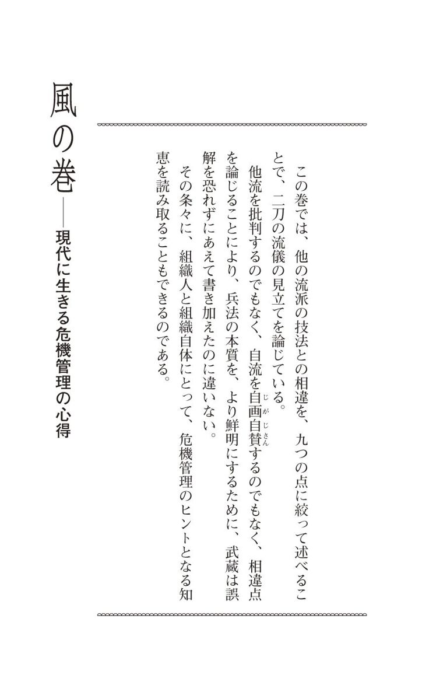
九十七 化けの皮は 剝 がれることに危機意識を持つ
兵法、他流の道を知る事 他の兵法の 流 々 を 書 付 、 風 の巻として 此 巻 に 顕 す所也。他流の道を知らずしては、 我 一流の道 慥 に 弁 えがたし。他の兵法を 尋 見るに、 大 きなる太刀をとつて、強き事を 専 らにして、 其 わざをなすながれ 有 。 或 は 小 太 刀 と云ひて、短き太刀を 以 て、道を 勤 るなど有。或は 太 刀 数 多くたくみ、太刀の 構 を以て、おもてと云ひ、奥として道をつたふる 流 も有。 是 皆 、 実 の道に 非 ざる事、此巻の奥に 慥 に 書 顕 し、 善 悪 理 非 を知らする也。我一流の道理、 各 別 の 儀 也。他の流々、芸にわたつて、身すぎの 為 にして色をかざり、花をさかせ、うりものにこしらへたるによつて、実の道に非ざる 歟 。 亦 世の中の兵法、剣術 斗 にちひさく見たてゝ、太刀をふり習ひ、身をきかせて、手のかるゝ所を以て、 勝 事を 弁 へたるものか。 何 れも慥なる道に非ず。他流の不足 成 所、 一 々 此書に書顕す也。 能 々 吟味して、二刀一流の利を弁ふべき事也。他流のことを知る事 他の諸流と 我 兵法との相違について、この「風の巻」について書くことにする。それは他流のことを知らないでは、私の兵法の本質がはっきりとはわからないからである。他流の兵法を検討してみると、大きな太刀を取らせて、 力 任 せの技を教え込む流儀が見受けられる。または「小太刀」という、短い太刀によって修行する流儀もある。それから、基本とされる 形 を数多く組み立て、 初 伝 の構えとか、 奥 伝 の構えとかいって、伝授する流派もあるが、これらはみな、実用に 資 する兵法とはいえない。この「風の巻」の 奥 書 に明確にこれを書き記して、その善悪と 理 非 曲 直 とを教えるつもりである。さて、私の流儀はこれらとはまったく別の道理に立っている。他の諸流は芸道に含まれていて、生計を立てるために 虚 飾 を 凝 らし、売り物に仕立てるものであって、真実の道とはいえないのだ。また、世の兵法は剣術ばかりの 偏 狭 な見地にあり、太刀の振り方、 体 の 捌 き方、手の 練 り様を教導して、勝つ教えとしているではないか。いずれもそれは確固とした道筋ではない。他流に見るこうした不足の部分を、一つ一つ述べることにするから、十分に呑み込んで私の二刀一流の教えを弁えてもらいたい。
「風の巻」のこの序文を、個人、組織の危機管理という視点から読み取ると、何事も目先の利益、カネもうけのために、虚飾に走ることの危険さが示されていることを知ることができる。
化 けの 皮 は、いつかは 剝 がれるのである。
九十八 特定のメソッドに固着するのは危うい
一 他流に 大 きなる太刀を 持 事 他に大きなる太刀をこのむ 流 有 。 我 兵法よりして、是をよわき流と 見 立 る也。 其 故 は、他の兵法、いかさまにも人に 勝 と 云 理を知らずして、太刀の長きを 徳 として、 敵 相 遠き所より 勝 度 と思ふによつて、長き太刀このむ心 有 べし。世の中にいふ 一 寸 手 まさりとて、兵法知らぬものの 沙 汰 也。 然 るによつて、兵法の利なくして、長きを 以 て遠く 勝 んとする、それは心のよわき故なるによつて、よわき兵法と見立る也。 若 敵相近く 組 合 ほどの時は、太刀長き程、 打 事もきかず、太刀のもとをりすくなく、太刀をににして、 小 脇 差 手 振 の人におとるもの也。長き太刀好む 身 にしては、其 云 わけは 有 ものなれ 共 、 夫 は其身ひとりの理也。世の中の実の道より見る時は、道理なき事也。長き太刀もたずして、短き太刀にては、 必 まくべき事 歟 。或は其 場 により、うへしたわきなどのつまりたる所、或は脇差 斗 の坐にても、長きを好む心、兵法のうたがひとて、あしき心也。人により小刀なるものも有。其身により長きかたなさす事ならざる身も有。昔より 大 は 小 をかなへると云へば、むさと長きをきらふには非ず。長きとかたよる心を嫌ふ儀也。他流では大きな太刀を取らせる、ということについて── 。大きな太刀を好む流儀がある。私の兵法から見ると、これは弱い流儀というほかはない。そのわけは、こうだ。この手の流儀は、いかなる場合にも相手に勝つという理からはずれて、太刀の長いことを 便 宜 として、遠い 間 合 から勝利をおさめるべく、長い太刀を好んで用いるのである。俗に「 一 寸 手まさり（手が一寸長い分、有利ということ）」とは、兵法というものを知らぬ者の考えだ。兵法の理を会得もせずに、長さを 頼 みとして遠くから勝ちにかかるのは、心が弱いからで、だから、私からは「弱い兵法」と見ざるを得ないのである。もし敵と組み合うほどに 相 接したときは、太刀が長いほど 打 突 が制限されて、太刀の自由が奪われて、これを「お荷物」にしてしまい、短い 脇 差 を手にした相手に 後 れを取ることになる。長い太刀を好む理由は、その人なりにあろうが、それは自己中心の考えであって、世の本当の道理にはずれているのだ。長い太刀に対して、短い太刀が必ず負けるものかという、そんなことはない。 上 下 も脇も詰まっている場所、あるいは脇差のみを帯びねばならぬ席にあっても、長い太刀を好む心があるとすれば、それは兵法に対する不信をあらわすもので、よろしくない。 小 刀 のみを帯びている人もあり、身体の大小により、長い刀を差すことができない人もいるのだ。「 大 は 小 を兼ねる」と昔からいっているから、むやみに長い刀を嫌うものではない。ただ、長いものに執着する心を 忌 むのである。
「 大 は 小 を兼ねる」という。
また「 長 は 短 に 勝 る」ともいう。このような理に頼るのは心が弱いからだ、ということを述べているのである。
「勝負」の場は様々であり、常に変転するものである。
大小、長短に執着することは、甚だ危険なのだ。
特定のメソッドに固着する危うさを、そこに学ぶ。
九十九 組織の規模に頼る心は脆い
大 分 の兵法にして、 長 太刀は 大 人 数 也。短きは 小 人 数 也。小人数と大人数にて合戦はなるまじきものか。小人数にて大人数に 勝 たる 例 多し。 我 一流に 於 て、 左 やうにかたづきせまき心、嫌ふ事也。 能 々 吟味 有 べし。このことは、合戦の兵法についてもいえる。すなわち、長い太刀は大人数の兵力、短い太刀は 少 人 数 の兵力に置き換えられるが、この二つが対戦する合戦もあり得るのだし、少人数の方が大人数に勝った実例も多いのである。とにかく私の兵法では、述べたような 偏 狭 な心を嫌うのである。このことをよく検討してもらいたい。
前項の考えを、合戦の兵法に置き換えた教えである。
組織の規模の大きさに頼る意識は、弱く、 脆 いものである。
百 無理な力を使うと不利を招きかねない
一 他流に 於 てつよみの太刀と 云 事 太刀につよき太刀、よわき太刀と云事は 有 べからず。つよき心にてふる太刀は、あらきもの也。あらき 斗 にては、 勝 がたし。又つよき太刀と 云 て、人をきる時にして、むりにつよくきらんとすれば、きれざる心也。ためしものなどにきる心にも、つよくきらんとする事あしし。誰に 於 ても、かたきときりやふに、よわくきらん、つよくきらんと思ふものなし。 唯 人をきりころさんと思ふ時は、つよき心もあらず、 勿 論 よわき心にもあらず、敵の死ぬる程と思ふ儀也。 若 は、つよみの太刀にて、人の太刀つよくはれば、はりあまりて、 必 あしき心也。人の太刀に強くあたれば、 我 太刀もおれくだくる所也。 然 るによつて、つよみの太刀などと云事、なき事也。他流に「 強 味 の太刀」というものがあることについて── 。「強い太刀」「弱い太刀」ということは、あってはならないことである。強く振る太刀は、粗雑な太刀筋になるもので、荒っぽいばかりでは勝つことはむずかしいのだ。また、強い太刀を意識して人を切るとき、無理に力を強くして切ろうとしても切れるものではない。試し切りでも、強く切ることは、よくないのである。 仇 討 でも、弱く切るとか、強く切るとか、誰も思わないのであって、人を切り殺すということは、ただ、敵を死に至らしめるということ以上のものではない。仮に「強味の太刀」で相手の太刀を強く張ると、張り余って体勢が崩れ、必ず思わしくないことになってしまうものである。相手の太刀に強い衝撃を与えると、自分の太刀も、折れて砕けることもある。であるから、強い太刀などというものは、ないものと心得よ。
良い日本刀の条件は、「折れない」「曲がらない」、そして「よく切れる」ということにある。外見からして日本刀は 堅 固 に見えるし、折れたり曲がったりしないように感じられるものだが、実は意外にも 脆 いのだ。それゆえ、力を無理にかけて切ると、ポキンと折れたり、曲がることも多い。そもそも、「 叩 き切る」ように強く切る者は、剣の達者にはいない。「 刃 筋 を通せ」と、 居 合 などでも指導されるが、押し切りにするにも、引き切りにするにも、刃筋が正しくないと切れるものではない。
要するに、日本刀はデリケートな武器であり、腕力で扱うものではない。事は切り合いに限らない。無理な力を使うと、かえって自分が不利を招きかねないのだ。
百一 「自然体」が危機管理にも大切である
大 分 の兵法にしても、つよき 人 数 を 持 、合戦に 於 て、つよくかたんと思へば、敵もつよき人を持、 戦 もつよくせんと思ふ。それはいづれも同じ事也。 物 毎 に 勝 と云事、道理なくしては、勝事あたはず。 我 道 に於ては、 少 も無理なる事を思はず、兵法の智力を以て、 如 何 様 にも 勝 所を得る心也。 能 々 工夫 有 べし。これは合戦における兵法にもあてはまる。合戦に 精 兵 を動かし、圧勝せんと思えば、敵軍も強力な軍勢をもって、同様に 力 戦 に出るものである。物事に勝つには、勝つための道理をはずれては、 勝 算 は立たない。私の兵法の道では、無理なことを思うことなく、知恵の力をもって、どのようにも勝利を得ることになっているのである。よくよく工夫してもらいたいことである。
組織と組織との競争にも、無理があってはならない。
「自然体」が第一なのだ。
危機管理にも大切なのは、自然体をつらぬくということであろう。
百二 小回りの利く手段で物事を処理しない
一 他流に短き太刀を用ふる事 短き太刀 斗 にて 勝 んと思ふ所、 実 の道に 非 ず。昔より太刀かたなと 云 て、長きと短きと云ふ事 顕 し 置 也。世の中に、 強 力 なる者は、 大 きなる太刀をもかろく 振 なれば、むりに短きを好む 可 にあらず。 其 故 は、長きを 用 て、 鑓 、 長 太 刀 をも 持 物 也。短き太刀を 以 て、人の 振 太刀の 透 間 をきらん、 飛 いらん、つかまんなどと思ふ心、かたづきて 悪 し。又すきまをねらふ所、万事 後 手 見え、もつるゝと 云 心 有 て、 嫌 事也。 若 は、短き物にて、敵へ 入 くまん、とらんとする事、大敵の中にて役に 立 ざる心也。短きにてし 得 たるものは、 大 勢 をもきりはらはん、自由に飛ばん、くるはんと思ふ 共 、皆うけ 太 刀 と云物になりて、とりまぎるゝ心有て、 慥 成 道にてはなき事也。 同 くは 我 身 は強く 直 にして、人を 追 廻 し、人に 飛 はねさせ、人のうろめく様にしかけて、慥に 勝 所を 専 とする道也。他流において短い太刀を用いる点について── 。短い太刀（ 小 太 刀 ）のみを用いて勝とうとするのは、真実の道とはいえないのである。昔から太刀、刀、脇差というように、長短両様の利点がいわれている。世の力強き者は、大きな太刀を 軽 々 と振るものであるから、無理やり短い太刀を好むには及ばぬ。そのわけは、長い太刀を用いることができれば、槍や 長 刀 をも持って使うこともできるからだ。短い太刀で相手の太刀を振るその 隙 を切ったり、飛び込んだり、つかんだりする思いは、 偏 頗 で 悪 しきものといえる。そもそも隙をねらうということ自体、万事に 後 手 を引き、混戦模様になって、勧められたことではないのだ。さらにいえば、短い武器をもって敵に 躍 り込んだり、敵を 捕 ったりしようとするのは、大勢の敵を相手にしたときは役に立たないのだ。短い太刀に通じた者は、大勢が相手でも、これを切り払い、その中を自在に飛び回り、乱すことができるように思うものだが、すべてこれは守勢の働きであって、攻勢の太刀と混同しているのである。それは確実に勝つための兵法の道ではない。そんなことをするくらいならば、自分の身を強くして、真っ直ぐに相手を追い回し、飛び跳ねさせ、 狼 狽 させるように攻め立てて、確かに勝つことだ。それが兵法の大事というものである。
ここにいう短い太刀を、小回りの利く手段と置き換えてみると、仕事のうえにも示唆するところがあろう。
ちっぽけな、その場限りの手段で物事を処理するのは、すでに守りの姿勢に入っているのであり、長期的な観点からすれば、危なっかしいことである。
百三 「小技」は生き残りに通用しない
大 分 の兵法に 於 ても、 其 理 有 。同じくは、 人 数 かさを 以 て、敵を 矢 場 にしほし、 即 時 にせめつぶす心、兵法の 専 也。世の中、人の 物 をしならふ事、へいぜいも、うけつ、かはしつ、ぬけつ、くゞりつ、しならへば、 心 道 にひかされて、人にまはさるゝ心有。兵法の道、 直 にたゞしき所なれば、 正 理 を以て、人を 追 廻 し、人をしたがふる心 肝 要 也。 能 く吟味 有 べし。合戦の兵法にも、この理はあてはまる。どうせならば、大軍勢でいきなり 陣 押 しして、 即 時 に敵軍を攻め滅ぼすのが兵法の重んじる法だ。世の中の日常の生活においても、受けたり、かわしたり、抜けたり、くぐったりすることに手馴れていては、心をそちらばかりに引きずられて、人にこき使われるであろう。兵法の 真 直 なる 正 道 、正しい道理をもって、人を追い回し、自分に従わせることを求めることが大切である。この点、よく呑み込んでもらいたい。
組織の中で生き残るのに、「 小 技 」は通用しない。その場は 取 り 繕 うことはできても、恒常的な効果が期待できないからだ。
「 大 技 」を積極的に使うことが、長い目で見て組織自体の維持発展にもつながるのである。
百四 マニュアルにあるスキルを詰め込むのは要注意である
一 他流に太刀かず多き事 太刀の 数 余 多 にして、人に伝ふる事、道をうり物にしたてゝ、 太 刀 数 多くしりたるを、 初 心 のものに深く思はせん 為 成 べし。兵法に嫌ふ心也。 其 故 は、人をきる事、色々あると思ふ所、まよふ心也。世の中に 於 て、人をきる事、 替 る道なし。知る者も知らざる者も、 女 童子 も、 打 たゝききると 云 道は、多くなき所也。 若 かわりては、つくぞ、なぐぞと云 外 はなし。 先 きる所の道なれば、数の多かるべき 子 細 にあらず。され 共 、 場 により、事に 随 ひ、 上 わきなどのつまりたる所などいはゞ、太刀のつかへざるやうに 持 道なれば、 五 方 とて、五ツの数は 有 べきもの也。 夫 より 外 にとりつけて、手をねじ、身をひねりて、 飛 、ひらき、人をきる事、 実 の道に 非 ず。人をきるに、ねじてきられず、ひねりてきられず、 飛 てきられず、ひらいてきられず、かつて役に 立 ざる事也。 我 兵法に於ては、身なりも心も 直 にして、敵をひずませ、ゆがませて、敵の心のねじひねる所を 勝 事 肝 心 也。 能 々 吟味 有 べし。他流に 太 刀 数 が多いということについて── 。太刀の 形 （基本の型）を数多く定めて伝授するのは、剣の道を売り物に仕立てるものであろう。伝える側が太刀の数を多く知っていることで、初心者に 深 遠 に感じさせるためだろう。兵法のうえでは、これはよろしくないことである。人を切るのに色々なやり方がある、と思うと、そこに迷いが生じてしまうからだ。世の中、人を切るという一事に変わりはないのである。切り方を知る者も、知らない者も、女だって、子どもだって、「 叩 き 切 る」ためのやり方が、数多くあるはずはない。仮に変わりがあるとすれば、「突く」「 薙 ぐ」といったことのほかにはないのである。切ることを第一の目的とする道に、太刀数が多くある理由はない。しかしながら、その場所、その状況により、上の方、脇の方などが詰まっている場合は、太刀が 障 害 物 により振れないことがある。だから、私の流儀は「五方の構え」による基本の 形 （「水の巻」にある「五ツの 表 」）を教えるのだ。このような形はあるべきだが、この五つに付け加えて、手をねじったり、身をひねったり、飛んだり、横に開いたりして人を切るのは、兵法の実用の道とはならない。ねじる、ひねる、飛ぶ、開くなどして人を切ることはできないのであって、こんなことは全然役に立たないのである。私の兵法では、身体も心も 真 直 に 持 して、相手を 曲 げ、 歪 ませ、その心のねじまがったところを 衝 いて勝つことを重視するものである。このことをよく呑み込んでもらいたい。
「 夫 、剣術は敵を 殺 伐 すること也」とは、江戸時代後期の幕臣にして兵学者だった、平山 行 蔵 の言葉である。
剣術をこのように単純明快に定義（？）した彼は、そして、 形 稽 古 に終始していた当時の風潮を 唾 棄 したものである。
武蔵がここに述べていることも、ほぼ同じ意味と解していい。
形稽古で太刀数をたくさん覚えても、そんなものは千変万化する真剣勝負の場にあっては役に立たない。「切る」という目的に集中することにこそ、兵法の兵法たる存在意義があるのであって、太刀数多き流派はビジネスを目的としているに過ぎない、と彼は 辛 辣 な批評を下すのである。
形は、いわばマニュアルにあるスキルのようなものであろう。そのようなスキルを数多く頭に詰め込むと、そのために、その仕事の大目的に対する意識が 薄 まり、集中力を欠く結果を招きかねないので、要注意である。
百五 現実生活はデジタルな対応では間に合わない
一 他〔「流」欠カ？〕に太刀の 構 を 用 る事 太刀の構へを 専 らにする所、ひが 事 也。世の中に構のあらん事は、敵のなき時の事なるべし。其 子 細 は、昔よりの 例 、今の世の 法 などとして、 法 例 をたつる事は、勝負の道には 有 べからず。其あいてのあしき様に、たくむ事也。 物 毎 に構と 云 事は、ゆるがぬ所を用る心也。 或 は城をかまゆる、或は陣をかまゆるなどは、人にしかけられても、つよくうごかぬ心、 是 常の儀也。兵法勝負の道に 於 ては、 何 事 も 先 手 と 心 懸 る事也。かまゆると云心は、先手を 待 心也。 能 々 工夫 有 べし。兵法勝負の道、人の構をうごかせ、敵の心になき事をしかけ、或は敵をうろめかせ、或はむかつかせ、又はおびやかし、敵のまぎるゝ所の拍子の理をうけて 勝 事なれば、構と 云 、 後 手 の心を嫌ふ也。 然 る故に、 我 道 に 有 構 無 構 といひて、構は有りて構は無きと云所也。他流において太刀の構えを重視することについて── 。太刀の構えを重視することは、間違っている。一般に、構えというものは、現実の敵が存在しないときにあるものではないか。もっといえば、昔からの事例と今の方法にのっとって法式をつくることは、勝負の道にあってはならない、といえるのだ。勝負においては、相手を不利にさせるように仕組むものである。構えはすべて、動揺せぬための用心としての意義がある。城を構える、 軍 陣 を構える、というように、攻撃されても激しい動揺のないようにするためのものであるのが、常である。兵法の勝負では、とにかく先手を取ることを心がけるものだ。構えるという行為は、すでに、先手を取られるのを待つ心づもりなのである。この点、工夫してもらいたい。真剣勝負では、相手の構えを動かし、 意 想 外 の攻めに出ては、敵をうろたえさせたり、怒らせてその心を乱したり、恐怖心を与えたりして、敵が混乱するその機会をとらえて勝利を手にするのである。だから、構えのような、 後 手 を引くことは、よろしくないのだ。こういうことから、私の流儀に「 有 構 無 構 」、すなわち、構えは有りて無きもの、という教えがあるのである。
「 有 構 無 構 」の教え（ 42 項参照）が、構えを重視する傾向のある他流より実戦的であることを述べている。
武蔵のこの論理は、きわめてシンプルであり、複雑化、細分化、デジタル志向を嫌うものである。
生 身 の人間が日々 当 面 する現実が千変万化するものであってみれば、「構え」はいくつあっても、間に合わないのだ。デジタル処理による対応には限界があるのが現実というものであることを、知るべきである。
百六 「守り」の体制はいつか綻ぶものと知る
大 分 の兵法にも、敵の 人 数 の多少を覚え、其 戦 場 の所を 受 、 我 人数の 位 を知り、其徳を得て、人数をたて、 戦 をはじむる事、それ合戦の 専 也。人に 先 をしかけられたる事と、 我 人にしかくる時は、一倍もかはる心也。太刀を 能 構へ、敵の太刀を能 受 、能はるとおぼゆるは、 鑓 、 長 太 刀 を 持 て、さくにふりたると同じ。敵を 打 時は、又さく木をぬきて、 鑓 、長太刀につかふ程の心也。 能 々 可有吟味 事也。合戦の兵法においても、敵軍の兵力の多い少ないを見て取り、戦場の条件を認識して、自軍の兵力の規模、実力にかんがみて、戦闘を開始することが大切だ。相手に 先 に攻められる場合と、自分の方から攻める場合とでは、その効果は倍も違ってくるものである。太刀 構 えを万全にして、敵の太刀を受けたり、張り返したりすることができても、それは槍や 長 刀 といった長い武器を持って、 防 御 の 柵 の手前から振るようなものだ。敵軍に打撃を与えるには、柵を越えて、槍、長刀で攻め込むほどの気迫を持っておきたいものだ。よく検討すべきことである。
組織における「構え」とは、体制といえよう。その体制は、時代を先取りする、「攻め」を常にはらんでいなければならない。
いくら万全なものでも「守り」の体制であっては、組織の将来には必ず 綻 びが生じることを知らねばなるまい。
百七 迷いを招く「目付」は要注意である
一 他流に 目 付 と 云 事 目付と云ひて、 其 流 により、敵の太刀に目を 付 るも 有 、又は手に付る流も有、 或 は顔に目を 付 、或は足などに目を付るも有。其ごとく、とりわけて目を付んとしては、まぎるゝ心有て、兵法のやまひといふ物になるなり。其 子 細 は、 鞠 をける人は、鞠に 能 目を付ね 共 、びんすりをけ、おいまりをしながしてもけ、まはりてもける事、物になるゝと云所あれば、 慥 に目に見るに及ばず。又ほうかなどするもののわざにも、其道になれては、戸びらを鼻にたて、刀を 幾 腰 もたまなどにとる事、 是 皆 慥に目付とはなけれ共、 不 断 手になれぬれば、おのづから見ゆる所也。兵法の道に 於 ても、其 敵 としなれ、人の心の 軽 重 を覚え、道を 行 得ては、太刀の 遠 近 、 遅 速 迄 も、皆見ゆる儀也。兵法の目付は、 大 形 其人の心に 付 たる 眼 也。他流における 目 付 の教えについて── 。目付の教えは、流儀によって敵の太刀に目を付けよとか、手、顔、足に付けよとか、様々だ。そのように特定の 部 位 に目を付けるのは、混乱をまねくばかりであり、兵法の「迷い」となってしまうものである。このことを詳しく述べよう。 蹴 鞠 （古代から行われた貴人の遊戯・一定の高さに鞠を蹴上げて落とすことなく蹴るもの）を例として引くと、鞠を蹴るとき、人（蹴り手を「 鞠 足 」という）は目を鞠に付けることなく、「びんすり」「おいまわり」といった高度の技術の蹴り方をよくするし、回転して蹴ったりもできる。熟練により、鞠を見て蹴る必要がないのだ。また、 曲 芸 師 も 熟 達 すると、 扉 を鼻の上に立てたり、幾つもの刀を 手 玉 にとったりするが、これはふだん 手 馴 れていて、物を見ないでもそんな芸ができることになっているのである。兵法の道でも、敵との試合に馴れるうちに、相手の人間の心の軽さ重さというものを察知し、修行によって、相手の太刀の遠い近い（伸びぐあい）、遅い速いということまで、どのようなことでも見えるようになるものだ。兵法のこの目付についていえば、大体、相手の心に目を付けることとされているのである。
人間の 五 感 の感覚領域の七〇パーセントをカバーしているのが、視覚といわれる。それほどに感覚によって得る情報をインプットするうえで、眼は重要な役割を担っているが、また、内面の感情、気持ち、気分が、比較的ストレートに眼にはあらわれるものである。
外界と内面との間にあって、眼はこうした両様の性格を負っているのだが、それだけに、眼で見ることによって、かえって人間は迷い、 惑 わされることも多い。
剣術においては、そこで「二つの目付」といって、敵の二つのポイントに 絞 って目を付けることが、初心者には教えられる（たとえば江戸後期の千葉周作の指導法）。すなわち、敵の太刀の 切 っ 先 と、 両 の 拳 である。敵の攻め、働きを、最も早く感知できるのが、この二つだからである。しかし、初心の段階を越えると、高度の目付が諸流様々に教えられるようになる。
だが、こうした特定の 部 位 に目を付けて敵の働きを見て取るのは、自分を迷わせる以外のなにものでない、と武蔵は切って捨てるのである。
兵法の目付は、仕事のうえでいえば、創造的な発想を得るための 着 眼 の方法、対人間の洞察、観察の方法、人生でいえば、自分の将来の展望を設計するための知恵に、大変示唆に富むものである。
迷いをまねく「目付」は、このような意味でも、注意を要する。
百八 大局観を忘失すると組織力は低下する
大 分 の兵法に 至 ても、其敵の 人 数 の 位 に 付 たる 眼 也。 観 見 二ツの見やう、観の目つよくして、敵の心を 見 、其 場 の位を見、 大 きに目を付て、其 戦 のけいきを見、其 折 ふしの強弱を見て、まさしく 勝 事を得る事 専 也。大小兵法に 於 て、ちひさく目を 付 る事なし。前にもしるす如く、 濃 にちひさく目を付るによつて、大きなる事をとりわすれ、まよふ心 出 きて、 慥 なる 勝 をぬかすもの也。 此 利 、 能 々 吟味して鍛練 有 べき也。合戦の兵法でも、敵軍の形勢に目を付けることが求められる。「 観 」と「 見 」という二つの目付（ 36 項参照）のうち、「観」の目付を強くして、敵軍の意図、戦場の諸条件に、 大 局 から目を付けて、戦闘の流れ、そのときの敵軍の勢力の強弱を見取り、 正 真 正 銘 の勝利をおさめることが大切である。集団戦、個人戦ともに、小さく目を付けることは、あってはならないのである。前述したように、特定の部分に 細 やかに目を付けると、大局観を 忘 失 して、迷いが出てしまい、絶対的な勝利を 逃 すことになるのだ。この理を十分に呑み込み、鍛錬すべきである。
組織の維持と発展に最も求められるものは、大局観だ。
目先のこと、 瑣 末 にわたる 小 事 にのみ 着 眼 していると、決断するのに迷いが生じて、組織力は低下の一途をたどることになるに相違ない。
百九 「常の足」で仕事をするのがプロフェッショナルの姿勢である
一 他流に足つかひ 有 事 足のふみ 様 に、 浮 足 、 飛 足 、はぬる足、ふみつむる足、からす足などと 云 て、色々さつそくをふむ事 有 。 是 皆 我 兵法より見ては、不足に思ふ所也。浮足を嫌ふ事、 其 故 は、 戦 になりては、必ず足の 浮 たがるものなれば、いかにも 慥 にふむ道也。又飛足を好まざる事、飛足はとぶをこり 有 て、飛びていつく心有。 幾 飛 も 飛 と 云 理のなきによつて、飛足 悪 し。 亦 はぬる足、はぬると云心にて、はかの 行 かぬるもの也。 踏 つむる足、 待 の足とて、 殊 に嫌ふ事也。 其 外 、からす足、色々のさつそくなど有。 或 は 沼 、ふけ、或は山川、石原、細道にても、敵ときり 合 ものなれば、 所 により 飛 はぬる事もならず、さつそくのふまれざる所 有 もの也。 我 兵法に 於 て、足に 替 る事なし。常の道をあゆむが如し。敵の拍子に 随 ひ、いそぐ時、 静 なる時の 身 の 位 を得て、たらず、あまらず、足のしどろになき様に有べき也。他流にいう 足 遣 いについて── 。足の踏み方（現代剣道では「 足 捌 き」という）に、「浮足」「飛足」「 跳 ねる足」「強く踏みつける足」「からす足（不明）」といって、早きを求める足踏みの法がいろいろあるが、私の兵法からすれば、これらは、すべて不足を認めざるを得ない。まず、浮足というものは、よろしくない。そのわけは、戦いとなると、必ず足が浮きがちになるから、できるだけ安定した足踏みを心がけるべきだからである。また、飛足は飛ぶという動作の起こりが 隙 を生むし、飛んで着地したときに、次の働きが固着するものだ。人は何回もつづけて飛べるものではないから、飛足は理にかなっていない。跳ねる足も、その動作に隙があって効果的ではないし、強く踏みつける足は、守りの足遣いであり、殊に 忌 むところである。そのほか、「からす足」など、早き足踏みが種々あるけれども、沼地や、湿地、山や川、 岩 地 、細い道などで切り合いが行われることもあるので、こうした場所では飛んだり跳ねたりする早い足遣いは、不可能なのだ。私の兵法では、足遣いは一定していて、ふだん歩くときのような足遣いを 旨 としている。敵の働きに応じて足遣いが急ぎがちになるときも、心静かなときの体勢を保ち、不足のない、さりとて余分もない、乱れることのない足遣いを心がけたいものだ。
「 常 の 歩 み」（ 38 項）の大事を、他流の足遣いの欠点を指摘しつつ、繰り返して述べている。
アスリートにとって、身体の最も大切な 部 位 は、腰とともに足だといわれる。足は運動、活動のスタートに直結する部位である。だから、剣術の諸流派は、 形 稽 古 で様々な足遣いを習わせる傾向がある。それらの多くは、 打 突 の機会を早くとらえて勝ちに結びつけるべく工夫されたものだが、真剣勝負の現場は道場とは違い、そういう足遣いを発揮できない諸条件に満ちているのである。
しかし、武蔵が「常の歩み」または「常の足」、すなわち、自然体の足遣いを主唱する、最も大切な理由は、足遣いによって、「常の心」、 平 常 心 が失われることが兵法のうえで好ましくないからだ。
浮 足 立 って、急いで事を処理しようとするのではなく、自分の日常のペースで冷静に、一つ一つ着実に仕事を進めるのが、プロフェッショナルの姿勢というべきである。
百十 微成長に甘んじている組織は脱落する
大 分 の兵法にしても、足をはこぶ事 肝 要 也。 其 故 は、敵の心を 知 ず、むさとはやくかゝれば、拍子ちがひ、 勝 がたきもの也。又足ぶみ 静 にては、敵うろめきありてくづるゝと 云 所を見つけずして、 勝 事をぬかして、はやく勝負つけ得ざるもの也。うろめきくづるゝ 場 を見わけて、 少 も敵をくつろがせざる様に勝事 肝 要 也。 能 々 鍛錬 有 べし。合戦の兵法においても、「足運び」は大切。そのわけは、敵軍の意図を知らずに、やみくもに速く攻めかかると、機会を間違えて、勝利はおぼつかないからである。かといって、足踏みがゆっくりし過ぎていると、敵軍がうろたえて崩れるときを見のがして、 勝 機 を 逸 して、早期の決着がつかないことになる。敵が 狼 狽 して体勢を崩しているのを見分けて、少しも余裕を持たせぬように攻めて勝つことが大事だ。これをよく鍛錬せよ。
「常の歩み」というと、いかにも 緩 慢 な足運びであるかのように受け取られがちだが、あくまでも自然体の足踏みなのである。敵軍に向かって前進する 足 並 みも、速からず、遅からず、自然体の 歩 調 をよしとする。
悠 長 に構えて、だらだらとした 微 成 長 に甘んじている組織は、厳しい競争から、やがては 振 い落とされてしまうのである。
百十一 スピードを求め過ぎると「忙殺」されかねない
一 他の兵法にはやきを 用 る事 兵法のはやきと 云 所、 実 の道に 非 ず。はやきと云事は、 物 毎 の拍子の 間 にあはざるによつて、はやきおそきと云ふ心也。其道 上 手 になりては、はやく見えざるもの也。 縦 、人にはや 道 と 云 て、 四 十 里 、五十里 行 ものも 有 。 是 も朝より晩 迄 はやくはしるにてはなし。道のふかんなるものは、一日はしる様なれ 共 、はかゆかざるもの也。 乱 舞 の道に、上手の 謡 ふうたひに、 下 手 のつけてうたへば、 後 るゝ心 有 て、いそがしきもの也。又、 鼓 、 太 鼓 に、 老 松 をうつに、 静 なる 位 なれ共、下手は 是 にもおくれさきだつ心有。 高 砂 は 急 なる位なれ共、はやきと云事 悪 し。はやきはこけると云て、間に 合 ず、 勿 論 おそきも悪し。是も上手のする事は、 緩 々 と見えて、間のぬけざる所也。 諸 事 しつけたるものゝする事は、いそがしく見えざるもの也。 此 たとへを 以 て、道の理を 知 べし。殊に兵法の道に 於 て、はやきと云事悪し。其 子 細 は、是も 所 によりて、沼、ふけなどにて、 身 足 共に早くゆきがたし。太刀は、いよいよはやくきる事なし。早くきらんとすれば、 扇 、 小 刀 の様にはあらで、ちやくときれば、 少 もきれざるもの也。 能 々 分別すべし。他流において太刀の速きを用いるということについて── 。兵法のうえでは、速さを尊ぶことは実用の道とはいえない。「速い」とか「遅い」とかいう概念は、物事の拍子の 間 に合う、合わないということに関わるものでしかないのだ。その道の 上 手 といわれる人は、「速い」と見えることがない。たとえば、 飛 脚 の中には四十里、五十里も走りこなす者もいるが、彼らは朝から晩まで走りとおしているわけではない。未熟の者は、一日中走ってもその効果は上がらないものだ。 猿 楽 では、上手の 謡 に 下 手 な能役者が合わせて舞うと、 後 れ気味になり、 急 き立てられるものである。また、 鼓 や 太 鼓 で「 老 松 」という曲を打つとき、曲自体は静かな調子であるにもかかわらず、下手な能役者は後れがちになって、楽器が先に立ってしまう。「 高 砂 」は急な調子の作品だが、速さを求めて演じるのは、よくないとされている。速く走れば 転 びやすくなるように、拍子の 間 をはずしてしまうことが多いのだ。もちろん遅いのも、よろしくない。けれども、上手な役者の 舞 は、ゆっくりとして見えるものの、間をはずすことはないのである。もろもろの演目に熟達している者の演技は、 忙 しくは見えない。この猿楽の例をもって、 諸 事 の道理を知るべきである。殊に兵法の道では、「速い」ということは、理にかなっていないのだ。これは前にも触れたことだが、勝負の場所には、沼地や湿地であったりすることがあり、このような場では、身体も、足も、速く働かせることはできないからだ。太刀は、なおさらのことである。速く切るということは、してはならないことだ。扇や小刀ではないから、太刀で速く切ろうとすると、 小 手 先 の切り方になってしまい、少しも切れないのである。よく、このことを分別してもらいたい。
宮本武蔵は晩年、 能 の「 江 口 」か「 湯 谷 」（「 熊 野 」）を舞うかのように、ゆったりと剣を 遣 った、という伝えがある（『 武 公 伝 』）。
能という芸道に関心を寄せ、そこから剣理を学ぶこと、ひととおりのものでなかったらしい彼は、訳文にあるような教えをみずから人びとに示したものであろう。
太刀は速く振るものではない、「太刀の道」にしたがって、ゆっくり、大きく振るべきだ、という教え（ 40 項参照）を、詳細に論じたのがこの条である。
武蔵の兵法は、スピードというものに価値を置かない。スピードを求め過ぎることの危険さを、むしろ指摘するのである。
スピードを要する状況にあっても、心をみずから 急 き立てると、文字通り「 忙 殺 」されかねないから要注意である。これは仕事、人生にあてはまることではないか。
百十二 スピードよりも先手を取ることを心がける
大 分 の兵法にしても、はやくいそぐ心 悪 し。 枕 をおさふると 云 心にては、 少 もおそき事はなき事也。人のむさとはやき事などには、そむくと 云 て、 静 になり、人につかざる所 肝 要 也。 此 心の工夫、鍛錬 有 べき事也。合戦の兵法も、速く、性急になるのは、よいことではない。「枕を押さえる」ということができれば、少しも 後 れをとることはないのである。また、相手がむやみに速く働くときは、「 背 く拍子」をもって、自分は静かに働くこと。相手に引きずられないようにすることが大切であることを、よく工夫し、鍛錬してもらいたい。
「枕を押さえる」は 71 項、「背く拍子」は 28 項を参照していただきたい。
スピードより、先手を取って、相手に引き回されないように努めないと、危機の時代に激化する競争社会を生き抜くことはできまい。
相手のペースに合わせ、周囲に好かれることばかりに 腐 心 する「 八 方 美 人 」は、やがて蹴落とされ、人びとから忘れ去られるかもしれない。
百十三 「実戦」に応じた教育法の必要を見直す
一 他流に 奥 表 と 云 事 兵法の事に 於 て、 何 れを 表 といひ、何れを 奥 と 云 ん。芸により、ことにふれて、 極 意 、 秘 伝 などといひて、 奥 口 あれ 共 、敵と 打 合 時の理に於ては、表にて戦ひ、奥を 以 てきると云事に 非 ず。 我 兵法のおしへ様は、 始 て道を学ぶ人には、其わざのなりよき所をさせならはせ、 合 点 の早くゆく理を 先 に教へ、心の 及 がたき事をば、其人の心をほどくる所を 見 分 て、 次 第 に深き所の理を 後 に 教 る心也。され 共 、 大 形 は其事に対したる事などを、覚えさするによつて、奥口と 云 事なき事也。されば世の中に、山の奥を 尋 ぬるに、 猶 奥へ 行 んと思へば、又 口 に 出 るもの也。 何 事 の道に 於 ても、奥の 出 合 所も 有 、口を出してよき事も有。 此 戦 の理に於て、何をかかくし、何をか 顕 さん。 然 るよつて、 我 道 を 伝 るに、 誓 詞 、 罰 文 など云事を好まず、此道を学ぶ人の智力をうかゞひ、 直 なる道を教へ、兵法の 五 道 、 六 道 の 悪 しき所をすてさせ、おのづから武士の法の 実 の道に 入 、うたがひなき心になす事、我兵法の教への道也。 能 々 鍛錬 有 べし。他流に「 奥 」と「 表 」という伝授のしかたがあることについて── 。兵法の道では、何をもって「奥」といい、「表」というのであろうか。芸道によっては、「極意」とか、「秘伝」とかいって、 奥 儀 と 表 口 があるけれども、兵法においては、敵と打ち合うとき、「表」の 術 理 で戦い、「奥」の術理で切るというようなことは、あり得ないことだ。私の兵法の教授法は、初めてこの道を学ぶ人には、習得しやすい技法、理解しやすい剣理から教え、会得しがたいことはその人の理解力の進み具合を見きわめて、段階を踏んで、深い術理を教授することになっている。しかしながら、大体において、打ち合いに対応することを身につけさせることにしているから、「奥」「表口」というものは設けていないのである。そもそも、山の奥を 尋 ねもとめて、奥へ奥へと分け入っていくと、また表口に出るのが、世の中のならいである。何事においても、奥の教えが役に立つ場合もあり、表口のそれが適合していることもあるのだ。戦う術理を教えるのに、何を秘して、何を手ほどきする、という区別があっていいものか。だから、私の兵法では、 誓 詞 （修行するに際して神仏に誓いを立てる書・ 起 請 文 ）や 罰 文 （秘伝などを 門 外 に 漏 らしたときの罰を受けるという 誓 書 ）を門人から取って伝授するということを好まないのだ。この道を学ぼうとする人の知恵の力を洞察しつつ、真の道を教え込み、兵法修行者の 悪 しき癖、欠点を捨てさせ、自然と武士の法たる兵法の 真 髄 へと入り、このことにかけて疑念の生じないようにするのが、私の教導法である。とにかく鍛錬あるのみである。
およそ「道」という字のつく日本の伝統文化の多くは、 家 元 制度のうえに成り立っていて、入門から、いわゆる「免許皆伝」に至るまでの間に、数多くのステップが設定されているのが常である。武術の諸流も例外ではなく、今日もなお、その慣習は残存している。
実戦における兵法を主唱する武蔵は、少なくとも剣の道ではこうした慣習がいかにナンセンスなものであるかを、堂々と指摘したのである。この意味で、彼は近代的合理主義にもとづいた、兵法の革命者ともいえるのではないか。
それはともかく、ここには現代の教育のうえでも示唆に富む、教育論が語られている。殊に学ぶ人の 技 量 、知恵のつき具合を尊重し、それに応じた教授法を導入して、自然にその道の深い教えに近づいていくように仕向ける、という教育法は、まことに傾聴するに 値 しよう。
企業の社員教育も、個々の能力に応じた、「実戦」に即した教育法で、社員力のアップをはかることが見直されるべきではないか。
百十四 自然の摂理にはずれた道は敗北へと通じる
右 、他流の兵法を九ヶ条として、 風 の 巻 に 有 増 書 付 る所、 一 々 流 々 、口より奥に至るまで、さだかに 書 顕 すべき事なれ 共 、わざと何流の何の大事 共 、名を 書 しるさず。 其 故 は、一流々々の見たて、 其 道 々 々 のいひわけ、人により、心に 任 せて、それ の 存 分 有 ものなれば、同じ流にも少々心の 替 るものなれば、 後 々 までの 為 に、ながれ 筋 共 書 のせず。他流の 大 体 、九ツに 云 分 て、世の中の道、人の 直 なる道理より見せば、長きにかたづき、短きを理にし、強き、弱きとかたづき、あらき、こまかなると 云 事も、 皆 へんなる道なれば、他流の 口 奥 と顕はさず 共 、皆人の知るべき儀也。 我 一流に 於 て、太刀に 奥 口 なし。 構 に 極 りなし。 唯 心を 以 て、其 徳 を 弁 ふる事、 是 兵法の 肝 心 也。以上、他流のことについて、そのあらましを九カ条にして記したのである。一つ一つの流儀の初歩的な教えから 奥 儀 に至るまで、 定 かに書きあらわすべきところだが、何流の何という大事の教えであるか、あえて、その名称を記さなかった。そのわけは、それぞれの流儀の見解、理屈は、人によって自由な考えがあって、同一の流儀でも少しずつ違っているからだ。 後 学 の人のために、それゆえ何流の何という 太 刀 筋 であるか、書かないことにしたのである。人間の 真 直 なる見地から見れば、世の諸流の道は、「長き」と「短き」、「強き」と「弱き」、「荒き」と「 細 かき」、それぞれ、 何 れかに 偏 向 しているものであるから、他流の「 表 口 」「奥」の教えに詳しく言及せずとも、推察してもらえるはずである。私の流儀には、述べたように、太刀の教えに奥も口もないし、構えにも、究極の教えはないのである。ただ、心によって兵法の「徳」を弁えることのみが、 肝 心 要 のことなのだ。
他流と自流の相違点を述べた武蔵は、要するに、 偏 った不自然な教えを排し、人間の心の力を真っ直ぐに働かせる兵法こそ実戦において物をいうことを、説いてやまないのである。
人間を含む奥深い自然の 摂 理 からはずれた道は、やがては 敗 北 へと通じるに相違ない。
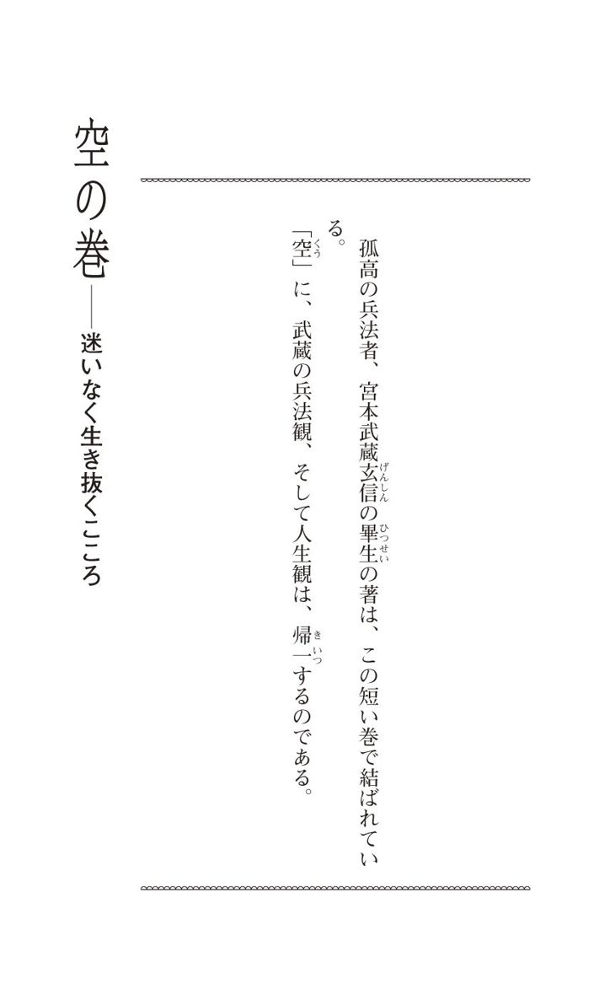
百十五 「迷いの雲の晴たる所」を求めて生きる
二 刀 一 流 の兵法の道、 空 の巻として 書 顕 す事。空と 云 心は、 物 毎 のなき 所 、しれざる事を、空と見たつる也。 勿 論 空はなき也、 有 所を知りて、 無 所を知る、 是 則 空也。世の中に 於 て、あしく見れば、 物 を 弁 へざる所を空と見る所、 実 の空には 非 ず。 皆 迷ふ心也。 此 兵法の道に於ても、武士として道を行ふに、士の法を知らざる所、空には非ずして、 色 々 迷 有りて、せんかたなき所を空と 云 なれ 共 、 是 実の空にはあらざる也。武士は兵法の道を 慥 に覚え、 其 外 武芸を 能 つとめ、武士の行ふ道、 少 もくらからず、心の迷ふ所なく、 朝 々 時 々 におこたらず、 心 意 二ツの心をみがき、 観 見 二ツの眼をとぎ、 少 もくもりなく、迷ひの雲の 晴 たる所こそ、実の空と知るべき也。 実 の道を知らざる間は、 仏 法 によらず、 世 法 によらず、おのれ は慥なる道と思ひ、よき事と思へ 共 、心の 直 道 よりして、世の 大 かねにあはせて見る時は、 其 身 々 々 の心のひいき、 其 目 々 々 のひずみによつて、実の道にはそむくもの也。其心をしつて、 直 なる所を 本 とし、実の心を道として、兵法を広く行ひ、正しく明らかに、 大 きなる所を思ひとつて、 空 を 道 とし、道を空と見るべき也。空 は 有 善 無 悪 智 は 有 也 利 は 有 也 道 は 有 也 心 は 空 也
わが二刀一流の兵法の究極の 理 を、この「 空 の巻」に書きあらわすことにする。「空」とは一般に、からっぽなこと、目に見えないことをいう。もちろん、「空」には、「無」の意がある。目に見えることを知るだけではなく、見えない「無」の世界を知ることが、「空」という教えである。世間一般の 卑 俗 な見解では、物事の道理を弁えない「 無 智 」に、「空」という言葉を当てるが、これは真実の「空」とはいえず、「迷い」というほどの意味である。兵法においても、武士が武士としての生き方を知らず、迷いに迷って、行き詰まったことを「空」というけれども、これは 実 の「空」ではない。武士は兵法の道を確かに身につけて、そのほかの武芸をよく稽古することだ。その修行を、暗さも迷いもなく四六時中、 怠 ることなく行うことで、「 心 」と「 意 」の二つのこころを 磨 き、「 観 」と「 見 」の二つの 眼 を 研 ぎ 澄 まし、一点の曇りもなく、迷いという雲がからりと晴れ渡った境地に至ることが、実の「空」の教えと受け取るべきである。この真実の「空」を会得していないうちは、仏法のうえでも、処世の法のうえでも、自分自身は確固とした信念のもとに良き道を 行 じていると思っていても、真っ直ぐな心にのみ見える、この世界を成り立たせている大きな 摂 理 に照らせば、身びいきと、 歪 んだ見方がそこにあるのであって、実の道に 背 反 しているものなのだ。そのことを悟って、真っ直ぐな心にもとづいて、実の「空」の心を道として、広く大きな兵法を修行することだ。そして、正しい、明瞭な、大きな心境のもとに、「空」の道を実践することである。
「空」は、 大 乗 仏教の根本思想とされている。周知されているように、その思想は『 般 若 心 経 』という、わずか二百六十二文字の経典に集約されているという。もろもろの事物は「 縁 起 」の法則に成り立っており、永遠不変の固定的実体がないこと、と辞書にある。
しかし、武蔵の説く「空」の意味は、必ずしもそれと一致するものではない。あくまでも、兵法を 朝 鍛 夕 錬 してきた者が 逢 着 した「空」なのだが、その真意は何か。
熊本藩主の細川 忠 利 に呈した『兵法三十五箇条』の最後の条には、
── 万 理 一 空 の 所 、 書 あらはしがたく候へば、 自 身 御 工 夫 なさるべきものなり。
とあるばかりだが、『五輪書』では、ややその内容に言及している。
── 少 もくもりなく、迷ひの雲の 晴 たる所
という言葉に、どうやら武蔵のいう「空」の 眼 目 があるようだが、この巻の文章を 拳 拳 服 膺 して、読者個々に受け取ることが大切であろう。その際に、『 独 行 道 』の左記の二カ条を、念頭に置かれることをお勧めしておきたい。
── 世 々 の道をそむく事なし
── 身 をあさく 思 、世を深く思ふ
あとがき
宮本武蔵は没する五年前、 肥 後 に下って、細川家より七人 扶 持 ・ 合 力 米 十八石で遇されることになった。待遇は間もなく三百石に改められたが、これは「 堪 忍 分 」という名目で、 客 分 の士に支給されるものであった。それにしても、薄給だ。ほぼ同時代を同じく剣の道に生きた 柳 生 宗 矩 が、江戸幕府の 要 路 の地位を得て、ついには一万二千五百石の大名に昇ったのとは、えらい違いといわねばならない。宗矩を上級官僚にたとえれば、武蔵は大会社の嘱託社員のままで生涯を終えた、といってよかろう。
しかし、その六十二年の人生の大半、武蔵は 野 に 在 った。それだけに、その独創的な「剣」は、世の風雪にさらされる中で練り上げられた、ひとしお厳しいものとなったようである。「勝つ」という目的意識の強い、きわめて実戦に即した剣理を求めることに、いっさいの妥協を許さない道が、武蔵の兵法だった。
──勝者になるために大切なことは、何か？
『五輪書』の一字一句、その 行 間 に、この命題に真正面から向き合った者の魂の叫びが感じられるのも、武蔵が「無所属」の 境 涯 にほとんど終始したからであろう。
組織というものの基盤が、おしなべて揺らいできた現代、組織人は 上 下 を脱いで、肩書きのない自分、無所属の「我」を、どこかに残して生きることの尊さが、見直されている。その意味でも、『五輪書』は今こそ学ぶべき値打ちのある古典といえる。
本書の原文は、一九〇九年（明治四十二年）刊行の宮本武蔵遺蹟顕彰会編『宮本武蔵』（金港堂書籍）所収のそれによった。底本は、武蔵が死去する一週間前、 正 保 二年（一六四五）五月十二日、高弟の随一ともいわれる寺尾孫之丞 勝 延 （『兵法先師伝記』では信正）に授けた伝書の写しを、 寛 文 七年（一六六七）二月五日に、勝延（号・夢世）が山本源介に 相 伝 したものである（顕彰会本では「肥後 玉 名 郡〈現・熊本県玉名市〉前田氏」の所蔵としてある）。
活字版としてはいち早く紹介されたこの底本を、現代用字に改めたうえ、振り仮名・句読点・濁点を付し、また、明らかな誤字・脱字は適宜補正したことをおことわりしておく。
装幀／一瀬錠二（Art of NOISE）
渡辺 誠 （わたなべ・まこと）
１９４５年台湾・高雄生まれ。九州大学法学部中退。著書は、『日本剣豪こぼれ話』（日本文芸社）、『ぶ器用「武蔵」からの贈物』（東急エージェンシー）、『勝者への指南書』『〔抄訳〕葉隠』（以上、ＰＨＰ研究所）、『日本史おもしろ謎学』（永岡書店）、『宮本武蔵 剣と人』『幕末剣客秘録』（以上、新人物往来社）、『宮本武蔵 真剣勝負師の生きた道』（体育とスポーツ出版社）、『剣豪伝 地の巻』（講談社文庫・共著）、『禅と武士道』『刀と真剣勝負』（以上、ＫＫベストセラーズ）などがある。剣道二段。
http://makoto.arma1.com/
自己を磨き、人生に克つためのヒント
編訳者：渡辺 誠
© Makoto Watanabe
発行者：清水卓智
発行所：株式会社ＰＨＰ研究所
東京都千代田区一番町二一番地
〒102-8331
http://www.php.co.jp/digital/
製作日：二〇一三年六月十七日
本書の無断複写（コピー）は著作権法上での例外を除き、禁じられています。